| PG14（桜ノ杜ぶんこ）２ | |
| 日野亘 | |
| (2015) | |
桜ノ杜ぶんこ
ＰＧ１４ ２
日野 亘
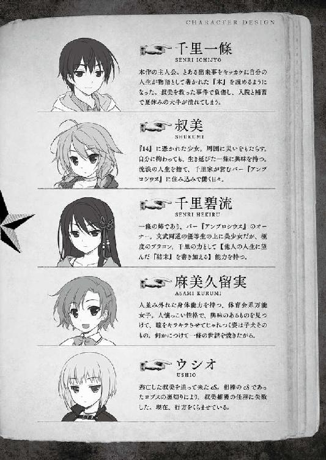
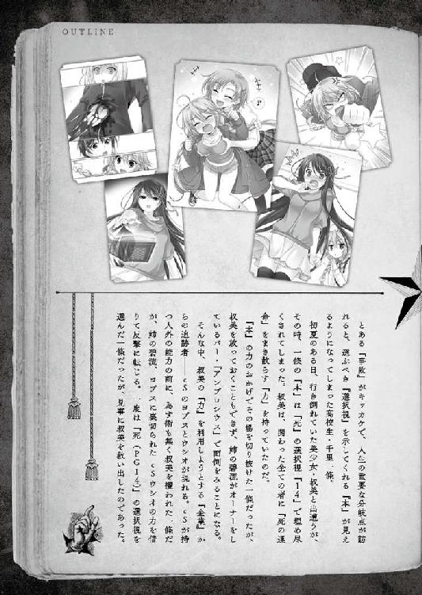
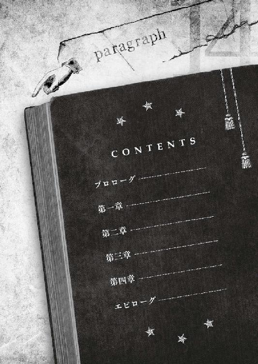
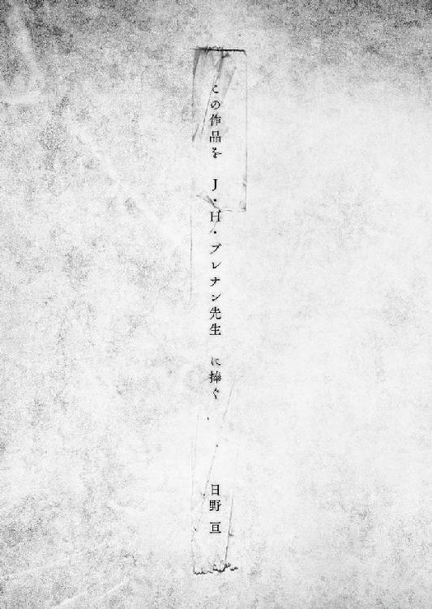
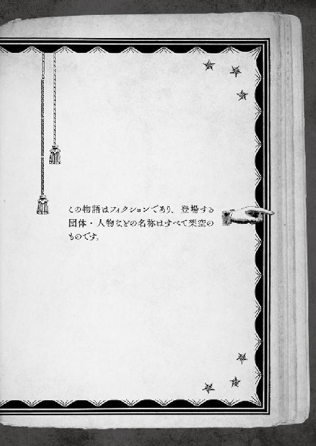
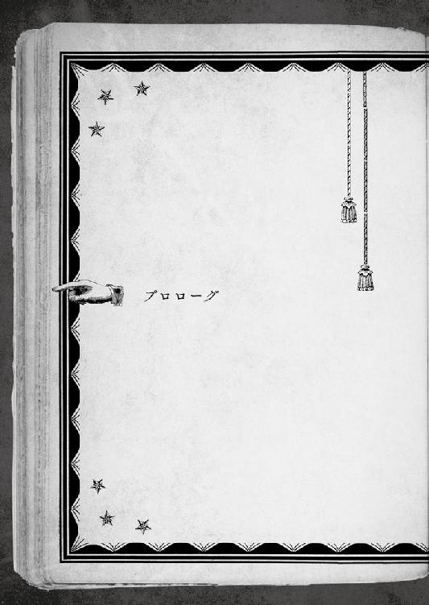
一つの『世界』が終わってゆく。
猛暑の盛りも過ぎた、夏の終端。
廃虚のようにがらんどうの教室の、本来自分のものではない席から、遂に訪れた『終わりの景色』を見届けている。
死に絶えた世界の音は、耳鳴りめいた虫の声と硬い跫音。
この期に及んでも蒼穹は変わりなく透き通っていたが、見上げる方からは灰色に映った。
見たいものだけ見て生きていけるなら幸福だろうが、世間の半分以上は見たくない事柄でできているものだ。それを「現実」と達観するか、「必要悪」と呼んで冷笑するかはともかくとして。
泣こうが喚こうが、人生には困難な『選択』を迫られることがある。ちょうど今の千里一條がそうであるように。
終わりまで、残された時間はあと何秒もない。
「５......４......３......」
走り続けるカウントダウン。そして、０。
待ち侘びたタイムアップ。この時期にはあまりに似つかわしくない、涼しげなチャイムが高らかに鳴り響いた。自分と監視以外は誰もいない教室の席を勢いよく立ち上がる。
「これで終わりですよね、先生!!」
補習担当という貧乏クジを引いた、半分ほど白髪になった老男性教師は、重荷を下ろしたような溜息一つ。それから、「さっさと帰れ」と言わんばかりに、右手でしっしっと追い払うジェスチャー。
夏期特別補習という、一條を監禁していた『世界』は、こうして終わった。
時刻は正午前。校舎の中には空調もなく、暑いというよりも熱かった。
学校側も、少子化で学生の確保に四苦八苦する今日日である。都会の進学校や私立高校には、校舎ごと冷暖房完備の場所も多くなっているが、此処、四国にあるＴ県のうら寂れた地方都市・奥志麻の学校では、まだまだそうもいかない。
補習を終えて自由の身になった一條は、猫の気配を探るネズミのように跫音を殺して廊下に滑り出た。右を見て、左を見る。誰もいないことを確認し、ようやく胸を撫で下ろす。
「......考えすぎ、か？ 先手を打ってくるかと思ったけど」
廊下の窓を隔てた残暑の空は、冷たく澄んでゾッとするほど青ざめていた。
世界の色合いは、ちょっとしたことで姿を変える。
例えば、毎朝全く同じ色彩を目にしても、受け取る印象が同じにはならない。華やかに色づくこともあれば、灰色にくすんで見えもする。
視覚の異常のせいでは、当然ない。人間が目にするものは、心の状態の移り変わりで容易く変化してしまうのだ、としみじみと実感してしまう。
延々続いた補習のせいで実感しがたいが、暦の上では八月も終わろうとしていた。サマーでジャンボの当選日やら、地元名物の祭りやら、一通り季節の風物詩も過ぎ去り、世間一般ではすっかり夏の終わりへと意識が切り替わっているだろう。
「今日を入れて残すところ、あと七日......」
一條は、世界滅亡の日に地球脱出用の宇宙船から置き去りにされてしまった哀れな男のような気分で、あまりに切ない現実を噛み締めた。
残された自由の猶予は、僅か七日。時間にして一六八時間。いや、既に初日の正午を回っているから、一五六時間を切っている。
「やっほー」
不条理な『監禁』の終焉を祝うのとは別種の涙をこっそり滲ませていた一條に、廊下の向こうから手が振られる。
まさか、来たのか──と身構えるが、相手の顔を見て警戒を解く。
学校という空間には似合っているともそうでないとも言える、白衣にブラウスという恰好は、養護教諭の「お花ちゃん」こと三輪乙子女史だ。
「おはよー......って、時間的には正午だから、こんちは？ ま、どっちでもいいか。今日も登校だなんて、いつもながら持て余してるよねー」
ほんの数秒間、選択に迷った。用事があるからと速やかに別れを告げるか、ここで返事をしてしまうべきなのか。
何も起きない数秒が過ぎてから、行きかけた足を止めて三輪教諭に向き直る。日頃世話になっている人まで無碍にするのは、一條の趣味ではない。
「お花ちゃ......じゃない、三輪先生。好きで持て余してるんじゃなくて、補習ですよ」
口を滑らせかけた呼び名を咄嗟に訂正した。二人しかいない廊下とはいえ、学校内で馴れ馴れしくし過ぎるのは問題だ。当の本人はサラリと流すだろうが、一條は人の距離が気になるタイプである。
「こんな時期まで補習とか、そんなに成績悪かったっけ？ あ、そっか......教頭が休み前の飲み会でポロッと零してたヤツだね」
「相変わらず、個人情報筒抜けだ！」
鷹崎南高校の情報管理が甘いのか、外見の印象に反して三輪教諭が目聡いのか。おそらく両方だな、と一條はこっそり恐れ入った。
春の陽気めいて小難しいことを全く考えてなさそうなお花ちゃんの笑顔が、心象の変化のせいか、何やら大きく見えてくる。
「キミは、ちょくちょく怪我をしてる。若いのに物事に執着しないし、端から見てると、どっか危なっかしい。危機感足りてないんじゃない？」
「実感はないですよ。大騒ぎするようなことじゃない。ちょっとした怪我だ」
「そっか。ちょっとした怪我をすると、居残りで夏休み終わっちゃうんだ」
──どうして、この時期まで、全校生徒の中で唯一、一條だけが『補習』という悲劇的世界の虜囚を続けなければならなかったのか。
突き詰めれば、「とある不幸」に巻き込まれ、数奇な運命に憑かれた一人の少女を救ったせいだ。
一條にしてみれば、救ったというのは大げさで、行き止まりに突き当たっていた小さな人生に「ささやかな抜け道」をもたらした程度のつもりだった。しかし、当人の受け取り方がどうあれ、「救う」という『奇跡』と交換したのは、死の一歩手前どころか一度は心臓が止まるような『大事』。一学期後半は、そのまま長期欠場と相成った。
不幸中の幸いと言うべきか。時期が良かった。
夏の長期休暇──いわゆる『夏休み』直前の、表向きは不慮の事故であった為、復活後に、不足分の出席日数を『特別補習』と大量の『課題』という名の宿題で埋め合わせてくれると学校側がお沙汰をくれたのだ。
特例的な温情お裁きの裏側では、人前では完璧超人を通している悪魔のように外面の良い碧流が、職員室に直談判で乗り込んだ一幕もあったりしたが、それはまた別に語られるべき物語である。
さりとて、「幸」と「不幸」は表裏一体という。
物事は見方一つで意味合いを換えるものだ。一條が甘んじて受け入れた（というよりも選択の余地はなかった）特別補習は、輝ける学生時代の夏の一時期を、ただでさえ怪我の治療とリハビリで食い潰されていた黄金よりも貴重な休暇期間の残りを、ほとんど余さず踏みにじられるという意味でもあった。
目の前に立ちはだかる、県内最高峰の楯山の断崖絶壁の如く積み上げられた補習と課題の数々。何事もなく長期休暇にうつつを抜かす同級生や世の学生やリア充カップルたちに羨ましげな横目を送りながら、夏の盛りの暑さに汗ばむ額を拭い、毎日学校と自宅を往復しなければならなかった不遇の日々。
あるいは、それをこそ『代価』と呼ぶべきか。
他人を救おうと自分で「選択」した帳尻を、自身の身体と時間で購ったとも言えなくもない。
──幸福も不幸も一目ではわからない、か。
手にした結果に自分なりの納得はしているものの、苦い結末には違いなかった。
同じ年頃のごく普通の若者同様に思い描いていた輝けるサマータイムの日々は、無惨にも始まる前に消えてしまったのだから。
「──まだ、終わっていませんよ」
「え、ナニが？」
突然、一條が唇の端を歪に吊り上げて、少年漫画の黒幕キャラよろしく不敵に笑ったので、三輪教諭は餌を見失ったフェレットみたいに首を傾げた。
「先生こそ、どうして学校に？ 教師にも登校日とかあるんですか」
普段の柔和というより押しの弱い空気みたいな表情に戻って、一條も首を捻った。
教師用登校日があるとしても、こんな夏休みの終わりも差し迫った時期に設定されるだろうか。ついでに言えば、三輪教諭は面倒くさいからと部活の顧問も引き受けていないので、そちらの理由でもない筈だ。
「まあ、なくはないけど。今日のところは、ちょっとした用事かなー。大人には、色々あるモノなのだよ」
「そういうものですか」
大人というのも大変だな、とぼんやり思う。
「ところで、最近バテやすいとかないかい？ 今年は残暑が厳しいし。大怪我の直後だしねー。そうでなくても、一條、怪我が好きだから」
「全然好きじゃないです。不思議と多いけど。でも、おかげさまで怪我馴れして、リハビリ後の調子は、まあ、そこそこですよ」
「全然自慢にならないから、それ」
カラカラと、裏側のなさそうな花の笑顔。
案外、自分を気に掛けて、ワザワザ出てきてくれたのだろうか。もしかすると、補習期間中も、時々様子見に出てきてくれていたのかもしれない。一條が気づかなかっただけで。
──他にも色々なことを見逃してたんだろうな。
一年前に故郷・奥志麻を離れ、再びここへ戻ってくるまで、自分は半分眠っているようなものだった。物事を正面から受け止めることができなかった。数少ない親しい相手である筈の三輪教諭が、本当はどういう人物なのかさえ、解っていると言い切る自信はない。
自分を見つめ直すキッカケがあったとすれば、それは『特別補習』の原因になった、あの出来事だろう。他人を救って、大怪我を支払った一連の事件は、廻り巡って、一條自身にも小さくない変化をもたらした。
「ま、後を引かなくて何よりだねー。夏休みは潰れちゃったけど」
「重要なのでもう一度繰り返しますが、まだ終わっていませんよ」
「え、ナニが？」
重要と思っていない人にも繰り返される。
「あと、一週間もあります。物事は、正しく吟味されなければなりません」
人が変わったように、キッパリと断言する。
数ヶ月前の自分とは違うのだ。ここで引き下がるワケにはいかない。
決意を込めて夏の終わりの高い空を見上げた。横を向いていたから、きっと三輪教諭に表情は見えなかったろう。彼女の知るこれまでの千里一條らしからぬ遠大な思索と決意を感じさせる声音だけは届いた筈だ。
三輪教諭は三度瞬きし、おもむろに胸ポケットからハンカチを出すと、眼鏡のレンズを拭いて、断固とした意志表明を見返した。
「いいですか！ ０と１は違います!! ０と７は大違いなんです!!!」
「そりゃそうだけど。でも、あと一週間しか──」
「まだだ!!」
「え、ナニを？」
「あとではなく、まだ──七日もあります！」
単なる日数という物理上の事実ではない、全く別の揺るぎない何かを高らかに告げる。
どこか遠くで、去りゆく夏を惜しむ蝉の声がしていた。
「一條ってさぁ、執着心薄いのに、時々こんな感じで強情だよねー」
部活動の顧問をしていないのと同様の理由で、三輪女史は日向の猫みたいに欠伸をしながら、そそくさとその場を後にした。
寂しい廊下に、ポツンと一條だけが取り残される。
「僕の夏休みは、まだ七日も許されている！」
変わることのない空に、硬く拳を握り締めて誓った。
校舎から一歩外に出ると眩しすぎた。
とっくに残暑の時期だというのに、グラウンドを灼いて陽炎を揺らめかせる熱気が押し寄せてきて、一條は軽く音を上げそうになる。
「......念には念を入れるか」
人目を避けるように、正門ではなく裏門から外を目指す。
「しかし、夏ごとにロクでもない目に遭ってるな。この分だと、来年辺りは、いよいよ生命存続の危機？」
一條にとって、今は、人生で二回目の『夏』だ。
去年の夏にも、「とある事故」に巻き込まれて重傷を負っていた。おまけに、その事故で、人生の記憶、ほぼ全てを失う羽目に陥った。
ここまでの人生で経験してきただろう、眩い「夏の出来事」は残らずリセットされ、加えて事故で負った傷の治療の為、夏休みそのものも無いに等しく──
嘆かわしい夏の記憶である。
失くした分まで今年を、一條にとっては正しい意味で「初めて」の夏休みになったこの夏を、せめて楽しもうと前向きに構えていた矢先──夏休みの五分の四を失った。
納得はしている。自分の『選択』の結果だ。何より、振り向いたところで意味はない。
しかし、納得するのと、嘆かないのは別の次元の問題だ。
出鼻をくじかれた上に自由にならない状況下──寝たきりで布団でも噛み締めたくなっていた一條のところへ、見舞いと称して現れたのは自称幼馴染の久瑠美である。
「ワザワザ来てくれて有り難いんだけど、今、そういう気分じゃ......」
「これ、マイ・ファミリーで行ってきた沖縄土産っすよー！ 早く元気になるのだ。で、一緒に遊びにいくっす。それと、来週は軽井沢の親戚のところへ出掛けるので来られませんけど、久留美が居ないからって泣いちゃダメですからね!!」
......人の話を聞かない彼女の名誉の為に言っておくと、悪気はないのだ。ただ、悪気はなくても繊細なグラスハートは滅多打ちにされる。ぶっちゃけ、輝ける夏をウハウハしている久留美が羨ましかった。嫉ましかった。ルサンチマンの塊だった。
そして、誓ったのだ。
お見舞い且つお土産のチョコを一箱分まとめて貪り喰らいながら。
「コ・ノ・ネ・タ・ミ・ハ・ラ・サ・デ・オ・ク・ベ・キ・カ。必ずや、夏休みを謳歌してやるからな!!」
と──。
「......過ぎたことを振り向いても仕方がない」
ピークを過ぎた夏の日差しを手で遮りながら、気負いを込めて独りごちた。
千里一條は、振り向かないのが信条だ。
失われてしまった記憶も、ロクでもない夏も、久留美の晴れ晴れ笑顔への女々しい愚痴々々も、今更戻ってこない過去を惜しんだり、悩んだりするくらいなら、限りある『夏休み』に何をすべきか考える方が建設的である。
「そう、まだ終わっていないんだ」
記憶を失くして振り向きたくなかっただけの以前とは、もう違う。炎のような衝動が、季節柄か暑苦しいほど燃え盛っていた。
このまま黙って八月三一日を待つつもりだと、一体誰が言ったのか。
日々補習と課題に追われながら、自由になる瞬間を夢に見て「計画」は軌道修正された。残された時間で、『夏』を満喫する為に。
一條は、その計画を──『夏休みを一週間でパーフェクトに満喫する作戦』と名付けた。我ながら、幾分ダサいとは思うが、ネーミングに必要なのは格好良さではなく、如何に自分を奮い立たせるか、という情熱だ。
これでいい、この名前がいい。
傷は癒え、補習も課題も、自分を拘束していた『世界』は終わりを告げた。行く手には新たな、そして七日だけの新世界が広がっている。本来のものと比べれば雀の涙だが、ゼロではない。
「あと、気掛かりなのは──」
バイト先の出方だ。怪我の治療と補習の為、一條は長らく「バイト」を休ませて貰っていた。虜囚から自由人へとクラスチェンジした以上、即座に勤労奉仕を要求されるのは、レンタルＤＶＤを延滞すれば追加料金がかかるのと同じくらい明白である。
──せっかくの夏休み残り期間が、無慈悲な労働に費やされてしまう。
休んで迷惑を掛けた負い目はあっても、それとコレとは別の次元の問題。一瞬一瞬が宝石よりも貴重な青春を、初めての夏休みが奪われるのを座して待っていても良いのか。
......否。断じて否！
この夏は、即ち『証明』だ。人生を謳歌できるという、自分自身への根拠となる筈の時間だった。万難を排して、バイト先に今しばらくの負担を強いるとしても、勝ち取らなければならないものなのだ。
物事が予定外に破綻してしまう場合──理由の第一は、偶発的なアクシデントよりも、見落としていた要因が招く必然であるケースが多い。
この数ヶ月の経験で学んだ、貴重な教訓の一つだった。カオス的な不運の介入をゼロには出来ないが、「予期せぬ不幸」と呼ばれる事象も、細かく見返せば「見落としていた確率」に過ぎないことが大半だ。
事前の分析と準備と対策の精密さが、物事の成否を左右する。
その点、今回の「計画」では、可能な限りベストを尽くした。警戒の手薄な昨日の内に、奥志麻駅のロッカーへ荷物を隠しておくのに成功していた。注意を引かないように念を入れて、何事もない登校を装いながら密かに寄り道をしたのである。
バイト先から逃亡しようと思えば、当面家には戻れない。残念ながら、泊めてくれる友達の心当たりはなかったが、これまで使い道なく貯まる一方だったバイト代を湯水のように浪費すれば、宿泊施設には事欠かない。それに、今は夏。いざとなれば野宿したところで、一週間程度ならやっていくのは、それほど苦でもあるまい。
──完璧だ。後は、現実に「計画」を推し進めるだけ。
燦々と照る太陽を浴びながらの海水浴も棄てがたいし、暑気を避けて山と森でキャンプを堪能するのもいい。脳裏に広がる眩い前途に、クリスマス・プレゼントを貰う子供のようにトキめいた。もっとも、クリスマスにプレゼントを貰った経験があるかどうかすら、憶えていないのだが。
この時期に自分だけが毎日お世話になっていた校舎に別れを告げ、人並みの輝ける『夏』を手に入れるべく、学校の裏門から意気揚々と第一歩を踏み出す。
その行く手を、待ち構えていた影が遮った。
「────」
完全に裏をかかれて、言葉にならない悲鳴を呑み込む。
まさか裏門側にはいないだろうという、一條の安易な思い込みを破り、出掛けに前を横切る黒猫のように立ちはだかったのは──小柄な少女である。
小柄で敏捷。第一印象では年下の少年に見られがちだが、先入観をなくせば、ほっそりとした身体のラインは紛れもなく女性のもので、年の頃は一條と大差ない。
音もなくしなやかに歩く姿は、なるほど、猫科の生き物には違いなかった。但し、眸の中にキラキラと輝いているのは、気の荒い野良猫じみた不屈の闘志とバイタリティ。
「........................叔美ッッ!!」
姓はない。名前のみで叔美。一條の夏を台無しにしたとある不幸で、一條が「救った」少女。今は、バイト先でもある、千里家が営むバー『アンブロシウス』の住み込み従業員。
「お願いだ、僕の話を聞いてくれ！」
「黙ってろ。喋るのはアタシで、言うべきことは一つ。選択しろ。黙って家に帰るか、無理矢理連れられて帰るか」
「か、帰らない選択肢はないのか!?」
懇願する一條に、叔美はどこまでも、ぶっきらぼうかつ無慈悲だった。
「くそ......計算違いだ。余計なことには我関せずの猫気質だと思っていたのに、よりによって手先に落ちぶれるなんて......ッ」
「落ちぶれるとかいうな。アタシだって、猟犬みたいな面倒くさいことはゴメンだ。でも、これ見よがしに『命令』を振りかざしてて、偉そうに言いつけるヤツがいやがる」
陽炎が立つ、刺すような日差し。
追い詰められて、一條は一歩後ずさった。簡単に逃げ出せそうな隙はない。
「争いは何も生まないから、愛と優しさで他人を理解し合って思いやろう！」
「アタシは心が広くて優しいから忠告してやる。これ以上ムダに逃げ回って、アタシの機嫌を損ねると、五体満足で家に帰れないぞ」
「ぶっちゃけると、そもそも帰りたくないんだ！」
「オマエの都合は聞いちゃいない。だいたい、裏に回る程度の浅知恵で、アタシを出し抜けると思うなよ。森のイノシシだって、イチジョーより頭いいンだぞ。危うく逃がしそうになったじゃないか」
「今、その程度で出し抜けないって......」
「黙れ。ついでに、自分一人逃げようなンて、そんな羨ましいことは............神様が許してもアタシが許さない!!」
「最後のヤツ、スゴく本気っぽいんですけど!?」
かつて、救われたことに感謝して涙さえ見せた少女は、今や一條の自由を略奪する悪魔の使いに成り果てていた。
「人の心とは、かくも移ろい易いものなのか......」
目蓋の裏に悲痛の涙が滲みかけたが、本来すぐに気づくべきだった、別の不可解な点に気がついた。
「──ちょっと待った。叔美が学校みたいな人の大勢いそうな場所に？」
「フン、何を今更......」
実際には、夏休み終盤の高校にはほとんど人はいないが、叔美が「いそうな場所」へ近づいたという一事は、一條にとって今の状況よりも遙かに驚くべきことだ。
──叔美は、死に憑かれている。
──だから、一條は手を差し出した。
叔美という少女の廻りには、「死」が立ち篭める。
だから彼女は、他人を災いに巻き込まないよう、孤独な時間を生きてきた。
今は、もう違っている。『アンブロシウス』に宿る一條にも理解できない『力』が上手く作用して、彼女が抱える『１４』が疫病じみた猛威を振るえなくなっている。この仮初めの安全が、何時まで続くかはさておき。
とはいえ、「三つ子の魂百まで」の喩えの如く、もはや安全だと頭では理解しても、これまでの人生で身に染みついてしまった性質か、叔美が自ら率先して人の集まる場所を訪れようとすることはなかった。少なくともこの数ヶ月で、一條の知る限りは。
「ひょっとして、学校見学でもしたくなった？ いい傾向じゃないかな。大丈夫な内に、できることはしておいた方がいいよ。そうだ、中を見ていけば......三輪先生に言えば案内してくれるから。僕は先に帰ってるけど、ゆっくりしていって。じゃあ！」
「逃がすか」
勢い任せでさりげなく逃げ出そうとした一條の肩を、後ろから叔美がガシッと掴む。
「お願いだからどうか............」
無慈悲な返事に苦渋を噛み潰す一條の眼前へ、いつもの如く、出掛ける直前に切れやがった靴紐のように、黒革の背表紙の分厚い『本』が唐突に現れた。
「────」
再び、言葉にならない悲鳴を呑み込む。叔美の『１４』が現れたのではないかと焦ったが、『アンブロシウス』の『力』が叔美自身に働いている限りは有り得ないと思い直す。
支えもなく宙に浮いて勝手に開かれた『本』の記述を、慎重に目で追った。呼んでもいない『本』が自動的に現れる時には、『そうしなければならない』のだと、一條はその短い人生の中で十二分に理解していた。
５２２─■■■■
全ての束縛から解放された。と思いきや、キミは追い詰められてしまった。裏門から抜け出したキミの前に立ちはだかる叔美は、まさに地獄の獄卒のようだ。狩人を思わせる彼女の眼光の隙をついて出し抜くのは、容易ではないだろう。
今の状態を古い諺で表現してみせると、『人生の一寸先は闇』。どうだい、昔の人の言葉には含蓄があるだろ。
「............一生のお願いだから、どうか、今日だけは見逃して」
「ダメだね」
涙目でキミは懇願する。押してもダメなら引いてみるのは、悪くない手だ。とりつく島もなく拒絶しているが、叔美の腕の力がほんのちょっぴり弱まった。これは、千載一遇の好機かもしれない。
叔美に従って大人しく帰るのであれば／４２５─■■■■ へ行け
断じて行えば鬼神も退く、という言葉もある。相手は鬼神よりも手強いかもしれないが。叔美を振り切り、自由目指して逃亡するのであれば／７４６─■■■■ へ行け
逃亡する場合、しばらく家には近づけない。もしかしてももしかしなくても、キミは今、「寝袋」か「テント」を持っているだろうか？ 持ち合わせと更に一掴みの勇気があれば、真の自由を目指すことができるだろう／５２７─■■■■ へ行くように
「寝袋なんてあるワケねー！」
「いきなり叫ぶなよ、メッチャこわいだろ！」
何もない空中に向かって、一條が非難じみた声をあげる。誰がどう見ても、見えないお友達と突然お話を始めたヤバい人の図だが、一通りの事情を聞かされている叔美は腑に落ちた顔をした。
「恐怖と暑さでイカれちまったかと思ったけど......なンだ、例のアレか」
──叔美が『１４』に憑かれているように、千里一條は『本』に憑かれている。
厚く黒い背表紙の『本』は、一條にしか見えないし、触れることもできない。
そして、一條の人生を左右するであろう重要な「分岐点」が訪れた時、この『本』は自動的に目の前に現れ、選択視を突きつけて、否応なしに『選択』を迫ってくる。
（叔美に従って帰るか......それとも逆らって逃げ出すか......）
「分岐点」とは、「未来」ではなく、必然として導かれる「結果」だ。壊れた柵へ無警戒に寄りかかれば崖から落ちるし、予習復習を忘れたネトゲ三昧の日々は受験失敗に結びつく。世の中の物事の多くは、水が高きから低きへ流れるのと同じで、「偶然」ではなく「必然」で成り立っている。ただ、普通の人間には、その必然を織りなす糸が読み解けないだけで。
口うるさい相棒であり、遠慮のない忠告者である一條の『本』は、過去と現在の『兆候』と、訪れる『必然』を記述する。
「......振り切って逃げる選択視は、７４６か」
『本』が示すＰＧには、数字が割り振られている。この三桁の数字からは、危険であるとか金運を掴めるとか対人関係が変化するかもとか、おみくじの文面程度の情報が読み取れる。経験則から言えば、先頭の数字が３以下ならほぼ「安全」で、７以上は「危険域」だ。
補習から解放されたばかりだというのに、一條のテンションは墓場から起き上がったばかりのゾンビのように成り下がってしまった。夏休みデビューと青春の日々を謳歌しようとする、まさにその第一歩目に、恐るべき罠が仕掛けられていたのだから。
否。罠とは、まだ決まったわけではない。
左右された人生は、より悪くなるばかりではなく、選択次第では良くもなる。
「いつまでも見えない『本』相手にブツクサ言ってンじゃねー。さっさと選べ、優しく連れて行かれるか、強引に行くか──好きな方をな」
プロの殺し屋もかくやという凄みで一條の腕を引っ張る、運命の女神の代理人。
「か、帰らないという選択は......」
「アタシの給料を払わないって言いやがった」
あらゆるものを「価格」に取り替えてしまう資本主義は、一人の少女の矜持や良心さえ、金で買い取ってしまう。
「意地っ張りの君ですら、経済の暴力には勝てないのか。いいよ、僕は恨まない。君の不憫な状況は、よく判った......」
悪事の目撃者の襟首を掴んだギャングスター並に、叔美はどこまでも本気だったが、一條だって風車に槍持って突っ込んでいく騎士程度には真剣だった。
無謀であろうと人は、『選択』と対峙しなければならない。
だが一條は、普通の人には漠然としか判らない「人生を左右する選択」の瞬間を、『本』のおかげで確実に判断し、選ぶことができる。
なるべく「よき未来」を選びたい、と願ってしまうのは人間の性だろう。
（──そう思うのが、人生の罠ってね）
飄々と肩を竦めるような軽い笑い。
叔美を救った一連の不幸で、「目の前の幸運」と「よき未来」が、必ずしもイコールでは結ばれないのだと、イヤというほど身に沁みていた。
ちょっぴりの「よき未来」を選び取ろうとして短絡的に選んでしまうのは、チーズに飛びついて罠に掛かるネズミも同然だ。
「ただ、判っただけだ。僕は、必ず『夏』を手に入れる！ その結果、君がどうなってしまうとしても!!」
一條は腰を落として一瞬後の選択の瞬間に備えて身構え、叔美は顔の前で獲物を握りつぶすように開いた右手の指をゴキゴキと不穏に鳴らした。
「あと三秒待つ。返事がなけりゃあ、無理矢理連れて帰るぞ」
そして、一條は躊躇いなく選んだ。
ＰＧを！
「さあ、見ろ。高い空、彼方の水平線、素晴らしい海だぞ!!」
どうだと言わんばかりに胸を張った碧流は水着だった。
普段から怜悧で成熟した艶を感じさせる彼女らしく、ワンピースの色はアダルトな黒。少女趣味っぽいフリルは、アンバランスだが愛らしい。背が高くて手足がすらりと伸びたモデル体型なので、布切れ一枚しか身に纏っていないと、出てるトコと引っ込んでるトコの区別が明白だ。露出が控えめなチョイスなのは、「品がない」という本人のポリシーから。碧流は考え方に時代遅れなところがある。
眩い夏の日差し、匂い立つ陽炎、心地よい波音。永遠に続いているかのような砂浜。
絵に描いたような海水浴のワンシーン。
ここは、小槌の浜という。奥志麻から汽車で数時間ほど揺られ、更に色々と乗り継いで辿り着いた県南の土地だ。変化に富んだ海岸線の美しさと水の良質さから、「Ｔ県のカリブ海」として地元ばかりか全国でも名高い。
「うん。そうだね......姉さん」
目のやり場に困っていた一條は、歯切れが悪くしどろもどろに頷く。
過去の記憶が失い一條は、眼前の碧流と血縁者という実感が未だに薄い。そう、家族なのに他人のような相手。しかも、身贔屓を差し引いても年頃の美少女が至近距離で無防備に肢体を晒しているのは、色々な意味でデンジャー極まりない。
一條も、ボクサータイプのトランクスという水着姿だ。恰好からして、『夏と海』を心ゆくまま満喫せよと命じているのに相違ないが、とてもそんな気分にはなれそうもなかった。
──これが海かぁ。
憶えている限り、生まれて初めての「海」。
夏の「計画」で、是非とも来たいと望んでいた場所だというのに。
傍らの異性を意識しているとバレるのは居心地が悪いので、さりげなさを装って視線を逸らす。だがいつの世も、戦場では臆病こそが死に繋がる。無防備に逃げた先には、更なるブービートラップが待ち構えていた。
「おい、見てみろ！ 変な生き物がいる!!」
大声で騒ぎながらサマータイムの海岸の砂を蹴り飛ばして突っ込んできたのは、夏の空をイメージさせる、白と青のストライプのビキニ。
目に痛い罠の仕掛け人は叔美だ。鮮やかな水着は、野生動物みたいに敏捷な彼女のイメージによく似合っていた。危険シマシマが無防備に身体を引っ付けてきて、固まってしまった一條の腕を引っ張る。普段の叔美と違いすぎて、中の人が入れ替わったとしか思えない大胆さ。そして、こちらの二の腕に押しつけられた柔らかい感触は──
「ちょ！ しゅ、シュクミさん！ おおおお、おちついて！」
激しく動揺し、棒読みの上に「さん」付けになっていたが、初めての海水浴というイベントに舞い上がっている叔美は、全く気にしなかった。
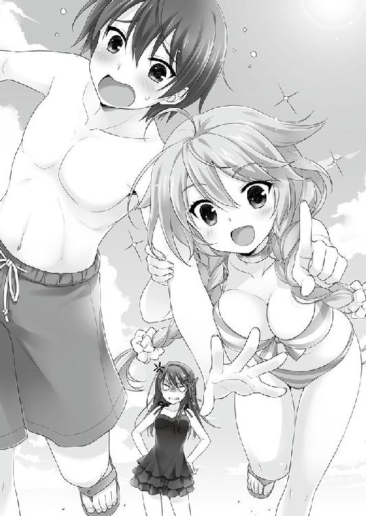
「イチジョー、なに小さくなってウジウジしてるンだよ！ こっちに来て近くで見てみろ！ スゲー珍しいンだから!!」
腕から意識を逸らそうと、叔美が指差す方向を見る。彼女が作ったらしい砂山の頂からヤドカリが顔を出し、マイハウスを背負ったまま海目指して逃げ出そうとしていた。
「ヤドカリなんて、別に珍しくも......」
言い掛けて、思い留まった。
叔美に「普通」は通じない。彼女の人生は、孤独と歪さの寄せ集めだ。今回、この場所へ来ることになってしまった時も、水着を用意しようともしなかった。「海」と「水着」が、彼女の中で結びつかなかったのである。
ちなみに、叔美が着ているビキニは、お向かいの蒲田さんに当人が泣きついた成果。
（女って生き物は、男の視線で磨かれるものなのよん。あんた、素材はいいんだから、一條ちゃんの「男」に鍛えて貰うといいわ、ほほほ）
ヒゲ面で姐御肌な彼は、二つ返事で水着をコーディネートしてくれた。蒲田流の持論に基づいている為、乙女チックなデザインなのにカットが際どく、肌色のパーセンテージが極めて高い。おまけに叔美は着ヤセするタイプらしく、普段の野暮ったい服装に隠されていたパワフルな肢体が、ここぞとばかりに解き放たれて、真夏の風を浴びている。その上、腕にしがみついて離れてくれなかった。
「......落ち着け、もっと別のことを考えるんだ。例えば海！」
邪悪な想念を呑み込む、清浄と青く輝く夏の海原の彼方を見やる。どこまでも広がる水平線の果てに銛一本でクジラに挑む、ストイックな太古の狩人たちの生き様を思い描いた。
「時間切れだ、弟から離れろ。海水浴中は、健全な青少年育成の為、男女は三秒以上の接触を禁止している。これを『三秒ルール』という」
「へー、『海水浴』ってのは、色々ややこしいンだな」
常識知らずの叔美は、身軽かつ素直に一條から離れたものの、女豹のポーズを取りながら、雇用主へと怪訝な上目を送った。
「でもさ、随分寂れてるぞ。人が一杯って話だったから、ちょっとは警戒してたのに」
「うむ。ここの海水浴期間は、昨日で終わっているからな」
さも当たり前だと言うような自信満々の顔で、碧流は頷いた。
──昨日。
結局のところ、一條は大人しく（？）連行されて、千里家へ戻ったのである。
逃亡するにはＰＧの危険度が高かった。強引に逃げたところで、追っ手を振り切るのも困難だろう。弟には甘い碧流を涙ながらに説得する方がまだしも夏休みの残り期間を謳歌できる可能性が高い......と冷静な判断を積み重ねた結果だ。
二人で帰宅してみると、黒幕の筈の碧流は店に不在だった。こういう選択結果だったのか、と喜びかけたのも束の間、鬼はすぐに帰ってきて、
「私は案内人だ。愛しい弟を楽園へと誘う、な」
オペラ歌手のように大仰な口上を宣う奇行を一目見て、勤労により『計画』を潰される以上の、よからぬ何かが待ち構えているのでは、という根拠のない予感に戦慄する。
──僕の『夏』は、奪われるしか道がないのか。
「いつもより輪をかけて、のっけからトバしてるけど......姉さん、夏風邪でも引いたの？ 季節の変わり目だから気をつけないとね」
一條は最後まで抵抗を続けた。無駄に終わるかもしれなくても、黙って運命に流されるまま、先へ進むのはまっぴらである。何か言ってきても、全ては夏風邪で脳を冒されているせいだと聞き流す覚悟を決めながら、この窮地から自由を手に入れる逆転の選択はないものかとトラバサミ掛かった獣のような悪足掻きを巡らせる。
「喜べ、二人とも。明日から社員旅行だ。マスターは不参加だが、私たちは海へ行く」
「........................へ？」
全く予想外の方向からの一撃を受けて、思わず思考が止まる。
「なあ、イチジョー。『シャイン旅行』ってなンだ？」
叔美は意味を全く理解できていなかったが、一條にしてみれば、碧流の背後に眩い後光が見えていた。差し出された手は、天上から垂らされた蜘蛛の糸のようだ。
（旅行......海......あれ......それって......）
何の後ろめたさも偽りも読み取れない、善意の塊のような姉の笑顔を目の前にして。
もしかして、もしかするかも......と、胸の奥で喝采を上げていた。
──のだが。
そんなこんなで、無理矢理ではなく若干の自発的行動で連れてこられたのが、この小槌浜海水浴場。
「......蜘蛛の糸って、しがみついたら切れちゃうんだっけ」
去りゆく夏を偲ぶクラゲだらけの海と、最盛期を過ぎたがまだ熱い日差しが灼く砂浜には、一條たちの他に観光客の姿はない。
気分だけでも夏を味わいたくて用意した水着と、ワザワザ借りてきたビーチパラソルの上を、虚しさという風が寂しげに吹き抜けていく。
「普通の海水浴に来たかったなあ......」
「さて、もういいだろ。海を満喫したところで、そろそろ本題に......」
「ウェイト！ いつ満喫したのですか!?」
満漢全席を平らげた直後のようなご満悦の姉に、思わずマジツッコミする。
「大きな声だな。そんなに気に入ってくれたのか。愛しい弟が台無しになった夏休みを嘆いているようだったから、趣向をこらしてみたんだが」
困ったことに、碧流はどこまでも本気だった。一條よりも。
外面完璧超人の姉は、一條の密かな嘆きを見抜く程度は軽くやってのけるクセに、ここぞという大事なところで全く空気の読めない人である。
「うわーい、そうだったんだ。すごく嬉しいなー、姉さん愛してる（棒読み）」
「そうだろうそうだろう」
「アタシも結構楽しいぞ」
逃げるヤドカリと戯れていた叔美は、更に困ったことに、本当に楽しそうだ。
（まともな感性の持ち主は僕だけなのか......）
『本』に取り憑かれた上に記憶喪失という大概な事情持ちであることは心の棚に放り投げて、味方のいない焼けた砂浜に孤独で打ち拉がれる。
「叔美、砂遊びはそろそろ切り上げろ。バカンスの為だけに、ワザワザ連れてきてやったわけじゃない。道中でも説明したが、お前たちの大好きな『仕事』がある」
「アタシも、かよ。でも、お客になりそうなヤツ......どころか誰もいねーだろ」
「普段のとは別の『仕事』だ。さては、説明を聞き流していたな。もう一度しか言わないぞ。お前たちには、『タタリ』を探して貰う」
ここぞとばかりに真面目な声音に切り替えた姉を、道中での説明時と同じように「？？？」顔で見上げる。
（もう一度、『タタリ』と言われてもなぁ......）
正直、碧流の説明は、おおよそ説明にはなってない。先の説明だって、実際叔美は聞き流していたのだろうが、真剣に傾聴していたとしても反応は変わらなかっただろう。
「これは、地守として千里の家が代々受け継いできた、千里の『仕事』なのだ！」
「ああ、なるほど......」
千里の仕事、と言われて、ようやく一條にも合点がいった。要するに、今回の社員旅行とは名目ばかり。あくまでも碧流の──千里家が『アンブロシウス』とは別に代々引き受けてきた──「仕事」のついでなのだと。
時は、二十一世紀。科学や医学、ネットワークの発展で、かつて「不可思議」とされた聖域の大半が駆逐された。とはいえ、千里家のような『世の常ならぬ』ヒトデナシとその為すべき義務の諸々がキレイサッパリ過去のものと消えてしまったわけではない。人目を憚り隠れ潜むようにして、名残を留めるものがある。
「世の中、そうそう美味しい話は落ちてない、か......」
「『アンブロシウス』を長期休業しているワケにはいかないのだが、解決まで何日かは泊まり込むことになるだろうな。『仕事』のない時間は自由に遊んでいいぞ」
「いつもケチで細かいことにガミガミ喧しい碧流なのに、今回は珍しく気前が良いな。タヌキが化けてるンじゃないのか？」
「ふふふ、ただ飯なのに五杯もおかわりする居候のクセに、オーナーに減らず口を叩くとはいい度胸じゃないか。お前の体質は、今回の仕事で足しになりそうだから、ワザワザ連れてきてやったんだ。役立たずだと、クラゲの海で二キロ遠泳にチャレンジさせてやるぞ」
太陽だけは眩い寂れた海岸での女たちの心温まるやり取りを横目に、一條はどこまでも透き通って高い夏の空に、切ない眼差しを送る。
「今年こそ海水浴に行ける、とちょっぴり感動してたんだけど」
「帰るまでに、好きなだけ海水浴を楽しむといい。いや、海に入るとクラゲがいるから、海岸浴か？ まあ、似たようなモノだろう」
「凄く嬉しくて泣けてくる。日本語で言うと、有り難迷惑って感じで」
「そんなに喜んでくれるのなら、多少強引にでも連れてきた甲斐があるな」
繰り返すが、碧流はどこまでも本気である。
弟に関しては、無限の愛と寛容さと都合の悪いことはスルーする能力を発揮するのだ。
あの時、違う選択視を選んでいれば──
学校の裏門で「逃亡する」を選べば、どうなっていただろうか。
一條は、すぐに詮無い空想を打ち消した。
「過ぎたことは過ぎたこと、だよ」
選択にやり直しは利かない。その時その場で選ばれなかった選択視の先は、やはり幻だ。今とは違う別ルートを確かめる術はどこにもないのだから。
──千里一條は振り向かない。
時計は逆回しにはならないし、千切り取った日めくりはゴミ箱へ捨てられる。
ならば、前進するだけだ。
（それに、水着の分だけ得したと思えば──）
海水浴期間を見落としていたのは事実だった。奥志麻近辺の海水浴場は軒並みシーズン終了。よしんば当初の「計画」が成功していても、誰もいない砂浜に一人で砂遊びする羽目になっていただろう。片方が姉だとしても、美少女二人を両手に花で水着と海岸というシチュエーションは、健全な男子高校生として喜ぶべきではあるまいか。
「さて、挨拶を済ませてこなければならないところがある。ここは任せたぞ」
いきなり、碧流がそんなことを言い出した。
「任せるって......姉さん？」
呼び止める間もなくパーカーを羽織り、町の方へ行ってしまう。
一條と叔美は二人っきりで、寂しい海岸にポツンと取り残される。
「おい。これから、どうすりゃいいンだ？」
「どうしよう......というか、どうしようもないか......」
千里の「仕事」ならば、一條はやってみせなければならない。
そう、何時か何処かで、大切な『誰か』と約束をした。記憶には残っていなくても、確かに在った出来事だと信じている。
相手を憶えていないので、しくじってしまっても謝ることはできない。
それなら、キッチリやり遂げるしかないではないか。
「よし、遣るぞ！ 生まれ変わった千里一條は、『デキる男』だって見せてやる！」
無駄に気合いを高めている一條を、隣で叔美が不思議そうに眺めていた。
「それで、具体的には何すンだ？」
「............どうしよう？」
それが問題なのだ。
一條の『本』は、常日頃から、世界が必然の歯車で動く機械だと囁いてくる。
つまり、物事を成し遂げたければ、必要な「条件」を積み上げていけばいいのだと。
気合い、やる気、情熱の類は重要なピースの一つには当て嵌まるが、大抵の場合、それだけでは条件を充たせない。
ちょっぴり残念ながら、一條には今のところ、やる気以外の持ち合わせがなかった。
「だいたい、『タタミ』って何だよ？ 何を捜しゃいいンだ？」
お互い水着に熱射病よけの麦わら帽子というラフな恰好で、小一時間ほど彷徨う幽霊船よろしく海岸線を彷徨った辺りで、飽きっぽい叔美が移り気モードに入った。
「『タタミ』じゃなくて『タタリ』。姉さんの説明（？）によると──」
（──『タタリ』というのは悪い虫だ。コインに表と裏があるように、物事には必ず別の側面がある。例えば、『アンブロシウス』の仕事が忙しいのは、店に来て楽しんだお客が多いということ。叔美が給料を受け取って喜ぶのは、私が涙ながらに支払ってやっているからだ。全ては同じなんだ、一條。夏は祭りの季節。華やかで、明るくて、誰も彼もが羽目を外す。帳尻は悪い虫になって残る）
ここまで、汽車の中で碧流に説明された。この説明で通じると思ったらしいが、反芻してもさっぱりである。
「『詳しい説明プリーズ』すればよかった。来る時は、海に行くのが千里の『仕事』とは気づけなかったから......」
「さっき、別れる前に聞いとけばよかっただろ」
「......さっきは、考え事してたんだよ」
無駄にセンチメンタルな気分に浸っている間に、碧流は姿を消してしまった。
「イチジョーってさ、案外アタマ悪りーンだな」
叔美に上から目線でしみじみと言われて、一條のちっぽけなプライドはいたく傷ついた。決して自分がデキがいい方だと思ってはいないのだが。
「まあ、いいや。とにかく、『タタタ』の話だけど」
「もう、『タ』しか合ってないな」
曰く、『タタリ』そのものは珍しくない。日常茶飯事とまでは言わなくても、季節の変わり目には時候の虫のように現れて、不幸にも通りがかった者に祟りつく。そして、庭の雑草を刈り、溜まった汚れを払うように、放置すれば災いを生むモノを解体するのは、古くから千里の担う「仕事」の一つである......らしい。
「要するに、『タタリ』を見つけて何とかすればいいんだと思うけど」
しなければならないことは理解しているが、具体案どころか、『タタリ』が正確にはどんなものなのか、イメージが湧かない。
「ヒントといえば、『良くないモノ』で『残留するモノ』らしいことか。タタリ、祟り......日本では、神様が祟る、とか言う。そうだな......祠にお供えしてあるお饅頭をこっそり食べたら、神様が怒って罰を与える。犯人が事故に遭う、とかね」
「でも、アタシはタタられたことないぞ」
「こっそり食べたことはあるのか。お腹壊してもしらないぞ。まあ、あくまでも一般的な話だから、今回の場合とは違いそうだし......」
というワケで、完全にお手上げ状態だったのだ。
「いや、大丈夫。方法はある！」
「大丈夫でなかったら噛みつくからな」
叔美のジト目を鼻で笑い飛ばして、自慢げにかつバックにお目出度い気分になる効果音でも鳴り響きそうな勢いで秘密兵器を取り出してみせた。これまでの勤労学生ぶりに見合うバイト代で買ったばかりの最新型スマートフォンだ。
「野生に生きてる叔美に、文明の利器の力を思い知らせてあげよう。二十一世紀は人と人が容易く繋がる世界なんだ」
「おおー」
今時、小っちゃな子でも所持している。そこまで偉そうに胸を張れる代物でもないが、これまで文明社会と縁遠い生き方をしてきた叔美は素直に感じ入っていた。
早速、数少ない登録者である碧流へと発信。
「詳しいことを、姉さんから聞けばいいんだ......って、バカなっ、繋がらない!?」
通話口からは、涼しげなお姉さん風電子音声が「電源切ってるかもね」と伝えてきた。あるいは電波が届いていない場所に居るのか。
「姉さん、一体何処にいるんだ......はっ、ヤバいっっ！」
咄嗟に身構えて頭を庇ったのは噛みつき対策。急所だけは避けようという、涙ぐましい努力だ。しかし、気紛れな猫娘は、数十秒前の自分の台詞さえ忘れてしまったように、
「お、これも結構おもしろいよな......とっ！」
暇潰しなのか、己のビーチサンダルを蹴り飛ばしていた。延々続く砂浜の上を、お天気占いのゲタみたいに飛んでいく履き物。追いついて履いてはまた蹴るを繰り返す。飽きっぽい叔美にしては珍しく、行く先も定めず海岸を彷徨い歩くのは苦でないらしい。
「ところでさ、『仕事』ってなンのことだよ？」
「千里の『仕事』ね。そうか、叔美は聞かされてなかったんだな」
ある意味、当然ではある。
一條と碧流の保護者は、とっくにいない。千里家の現在の家長は碧流で、記憶こそないが一條はその弟。当事者として、機会がある毎に最低限の事情説明はされてきた。しかし叔美は、千里家の保護下にはあっても部外者だ。
「姉さんの受け売りだけど......千里家は、古くから続く、ある意味で由緒正しいお家柄ってヤツらしい」
自分の事情なのに、どうしても他人事のような言い方になった。今の一條には、一族の歴史を己がことのように実感しろ、と言われても難しい。
「昔々には『八石』だとか『八席』だとか呼ばれてたんだって。色々あって奥志麻に流れ着いて、『世の常ならぬ者ども』の間を取り持ち、仕切るのを役割にしたんだとか──現在進行形で」
『世の常ならぬ者ども』とは、一言でいってしまえば、『本』の見える一條のような「世間の一般常識」から道を踏み外してしまった連中のことだ。
古くは、いわゆる罪人、流人の類や任侠ギャングスターあたりの、社会の『法』にまつろわぬ者も千里の仕切るところだったというが、時代が進むにつれて棲み分けられた。
混ぜ合わされた水と油が結局は分離してしまうように、人の世に近いモノたちはより俗世間に近づくことを選び、逆に千里は、本当の意味での異物──油の部分に混じるモノたちの世話役として、存在意義を見出すようになったのである。
即ち、地守。一言で言うと、奥志麻とその周辺の土地を預かり、整備する管理者だ。
「そんな千里家の、仕事の一つが、姉さんの言ってた──『タタリ』とやらの始末らしいんだけど......聞いてる？」
「ふあぁぁぁ」
聞き流していた。叔美の返事は、如何にもな大欠伸。
気持ちはわかる。一條も半分くらいは似たような気分だ。「記憶を失う前」なら違ったのかもしれないが、当時の自分がどう思っていたのかは遠い霧の彼方。碧流だって、憶えていない一條に気を遣ってか、昔のことはほとんど口にしない。
「ンで、具体的には？」
「......僕も知らない」
ご高説の後の、思わず赤面必死の返答。結局、ぐるりと一周回ってスタートに戻った。
「役立たず。オマケに、全然アタシに関係ねーし」
「いや、ごもっとも」
いわば部外者の叔美を社員旅行名目で一緒に連れてきて仕事に駆り出すのは、見た目や外面に反して極めて大雑把な碧流の面目躍如と言ったところだが、別れる前の二人のやり取りの様子では、何らかの魂胆があるようにも受け取れる。
──魂胆、ねえ。姉さんなら、おもしろ半分でも驚かないけど。
「まったくもー......余計なことばっかやらせやがって、あのオニチク！ ま、海に来られたのは、ちょっとはよかったけどな」
小柄な少女の伸びやかな肢体が波打ち際に走っていく。寄せては返す波を無邪気に蹴り飛ばす。水飛沫が混じり、束の間の虹が描かれる。
そろそろ正午。シーズンが過ぎて行楽の観光客や親子連れのいない海岸は、夏休みで人気の絶えた学校の校舎と、よく似ていた。
『記憶』はなくても『知識』はあるから、夏の海岸は芋洗いのごった返しというイメージと結びついている。今の姿と落差が大きく、余計に感傷的になってしまう。
「こンな感じで......海に来たことなンてなかったな！」
無人の波打ち際ではしゃぐ叔美の、ふと口をついたような一言。
「......ああ」
叔美も感傷的になったのか、と早とちりしたが、すぐ勘違いに気がつく。
叔美は「普通」を持っていない。誰もが共有していると信じられている日常も、これまでの叔美には、離れて眺めるだけで触れることも叶わない......夕立明けの虹のような代物だったろう。
視点が変われば、物の見え方も変わる。視点とは、経験の蓄積で作られていく。
千里一條の視点が、あの「事故」前と後で取り返しようもなく断絶しているように。
奥志麻へ来るまでの叔美の過去は、災厄の箱のような真っ黒な記憶が詰まっている。
そんな暗い影を少しも窺わせず、騒がしくはしゃぐ姿が、彼女の強さだ。
「来年は、もう少し早めにこようか。賑やか過ぎて驚くよ」
夏の終わりの寂しい海岸も、叔美にとっては「特別」で眩しい場所なのだろう。
何時まで続くか誰にもわからない彼女の「夏休み」が、少しでも続くよう祈りながら。
「賑やかなのは苦手だけど、面白そうだな」
選んでしまった選択視ではなく、目の前にあるものを精一杯謳歌しながら、まだ選んでいない選択視の可能性を信じてやろう。
夏は今日で終わりじゃない。残された時間を楽しむ為に、「計画」を続けるのだ。その為にも、『仕事』をさっさと終わらせる。ついでに叔美にも、自分と同じように夏の想い出を作ってあげられれば、と思う。
「よし、調子上がってきたぞ！」
更に気合いを入れ直して、決意を新たにすると。
「あのさ......おカマダさんから聞いたンだけど、こういう普段とは違う、余分な仕事やると、『ぼーなす』ってのが出るんだよな？」
叔美は海の彼方を見やりながら、期待で眸をキラキラとさせていた。
あのオカマの人、無垢で素直だった少女に、日々世間の汚濁を吹き込んでいるのか。
「......ボーナスっていうか、手当？ まあ、一般的には出る場合が多いね」
「いいな、それ！ よーし、あとで碧流に出させよう！ そンで、せっかくだから欲しいモノ買っちゃうとかもいいな！」
──果たして、あのブラックな姉が素直に手当を出すだろうか。
獲る前のタヌキの皮で電卓を弾いている叔美の嬉しそうな素肌の背中を遠い目で眺めながら、一條は遠からず訪れるだろう過酷な悲劇的結末を思い描いて涙した。
「まあ、明日の悲劇は、明日考えるとして」
方針は決まった。あとは、前に進むだけだ。
まず思案すべきは、眩しい今日を手にすべく、「仕事」を終わらせる方法。
つまり、『タタリ』をどうするか。
「どっちを選ぶか。よくわからないまま捜すか、姉さんと連絡がつくまで待つか」
「イチジョー、こういう時に例の『本』は出ないのか？」
波遊びに飽きて戻ってきた叔美に指摘されるまでもなかった。
一條の『本』は、人生を左右する重要な分岐点で、自動的に出現する。
「そこは考えてるよ。まだ『本』は現れてない。大雑把に言うと、選択すべき要因があっても『本』が現れない場合、どんな選択をしても人生は分岐しないんだ」
大雑把に言いすぎだが。
「何やっても変わりがないって？ そういうの、アタシは納得いかねーぞ」
「クレームは『本』に直接言ってやって......まあ、最初から取扱説明書は付いてなかったし、今まで色々あってそう受け取るのが一番筋が通ってるってだけで、『本当にそうなのか』は、正直僕にもわからない」
「適当だな。じゃー、アタシは納得しねー」
「それはそれで、叔美らしいね」
「たりめーだろ、アタシがアタシ以外の何だつーの」
「ともかく、僕の『本』は人生を大きく左右する『分岐点』で自動的に現れる。でも、現れたからといって、その後の......未来の『結果』を教えてくれるわけじゃないんだ」
「......どういう意味だ？」
「『予知』じゃなくて、『見知』ってこと」
「............どういう意味だ？？」
「んーと、『予知』は未来の『結果』を教えてくれるもの。幸か不幸か、僕の『本』の力はそうじゃない。現在の出来事が色々なカタチで記述された、情報の羅列。最後に現れる選択視は、それまでの必然の積み重ねから導かれる、可能性の『かもしれない』。僕は『本』を見て、知り得た情報を元に、自分の進むべき道を決める」
「..................で、そのヨタ話が今回の件と、どう関係があるンだよ？？？」
「あーもーつまり、僕が言いたかったのは......Ａ→Ｂ→Ｃと進む人生と、Ａ→Ｂ→Ｄになる人生があるとするだろ。Ｃに行くか、Ｄに行くかは、Ｂで分かれ道が来るずっと以前......仮に『Ａ』の地点で何をしたかで決まってしまう場合があったとする。すると......僕の『本』は、Ａを分岐点として判断できるんだろうか？ ってこと」
「むう」
叔美が難しい顔で唸る。ようやく呑み込めたらしい。
人間の一生のＰＧを俯瞰できる、本物の神の視点でもなければ、本当のところは判るまい。『本』が自動的に現れるか否かという事実にだけ目を奪われていると、足元を掬われるかもしれない。
「だからさ、普段から『選択』は大事にしないと」
「『タタタ』なンとかの捜し方とは関係ねーよな、今の話」
「だから『タタリ』だって。一応、方法はある。危険なモノなら、少しぐらい無理してでも早めに目星をつけておいた方がいいんじゃないかな、って悩んでる」
悩んでいるにしてはさっぱりした態度の一條に、叔美は面白そうに目を細めた。
「普段はトッポそーにしてンのに、相変わらず、変なとこで強情なンだよなぁ」
「叔美まで、お花ちゃんみたいなことを──」
人生を左右する選択は、いつでも、何の前触れもなくやってくる。
今回は、一條の台詞を半ばで断ち切って。
いつも通り身勝手な『本』が、突然目の前を遮って自動的に現れた。
４６９─■■■■
通り過ぎていった夏が、束の間帰ったような眩しさ。キミは思わず目を閉じた。一瞬の目眩が消えると、いつの間にか砂浜に少女が佇んでいた。彼女は、こちらを見つめて微笑んでいる。
砂浜に咲いた一輪の花という比喩は、そう外れてはいない。居合わせるだけで場の空気を鮮やかに塗り替えてしまう容姿と品位。黒かと思えた眸は、よく覗き込めば藍色の掛かった深い色合い。真新しい雪のように透けた肌は、繊細すぎて触れるのも躊躇ってしまうほど。
しかし、容姿の良さ、見目麗しさだけでは、こうも場を呑むことは出来まい。丹精込めて作られたビスクドールのように、手塩にかけられた育ちの良さを窺わせる。
全てをひっくるめて、やはり錯覚だったのだと断言できるのは、青空の下に咲く向日葵の大輪ではなく、どこか陽のない夜に咲く白い花を連想するせいだろう。
「......なんだよ、この文調」
出現を半ば予想し、警戒していた一條は驚くことも慌てることもなかったが、ＰＧの内容は有り体に言って予想外だ。
隣の叔美は、一足先に相手を睨んで、猫が毛を逆立てるかのように警戒していた。
『本』の記述通り──砂浜に少女が一人。
名も知らぬ相手は、後ろで手を組んだポーズで、悪戯っぽくはにかむ。
深い色の眸よりも肌の白さよりも、最初に目に焼き付いたのは、後ろで結わえたウェーブの掛かった髪。眸と同じ黒に近い藍がかった色だ。
居るだけで人目を引く、という一点に関しては、碧流にも引けは取るまい。
きっと出逢うのは初めてだろうと確信できた。これほど印象的な相手を忘れてしまうのは、記憶を失くしたとしても無理だろう。
咄嗟に言葉が出てこない一條へ、少女は冷淡に、ほんの少し楽しそうに唇を吊り上げて、
「わたしの言いたいこと、ご承知ですよね。さっさと諦めた方が身の為なんですよ」
そう告げた。
「ちょっと小耳に挟みましたけど、『タタリ』が何かすら知らない素人を連れてくるなんて、千里も随分落ちぶれちゃったんですね」
少女は含み笑いを堪えるように、品よく口元を手で隠した。深い色の眸は不思議と鋭く輝やいて、興味津々といった態度で一條たちを見つめている。
「なンだよ、オマエ。どこの誰っていうか、どこから出たンだよ。アタシ、これでも結構敏感な方なンだぞ。怪しいヤツ。でも、まあいいか。それよりもオマエ、『タタリ』が何か知ってンのか？ ちょうどいいから教えろよ」
見ず知らずどころか唐突に現れて口上を述べた相手にも物怖じ一つせず、叔美は機関銃みたいに捲し立てる。
一條はといえば、隣で猫騙しで固まったように目を丸くしていた。呆気に取られて固まっていた、という方が正しい。
「おやおや、大胆な切り返しですね。せっかく狙って登場したのに、驚いてくれないなんて......むう」
名も知らぬ少女が、一瞬唇を尖らせる。
「ま、仕方ありませんね。訊ねられれば答えるものですし。いいですか、『タタリ』とは今風な言葉で説明すると、『世界』というプログラムのバグみたいなもの。大勢が一ヵ所に集まって騒いだりするとバグが起きやすいので、その土地の管理者が補修して回る。バグを起こしても世間が問題がなく巡っていくのは、それを修復する人間......千里のような『ヒトデナシ』がいるからです。ご理解いただけましたか？」
少女は一本指を立てて、意外にも律儀に応えた。更に、その場でダンスを踊るかのようにクルリと一回転。一條の返事を促すように右手を高々と差し出す。観客のコールを待つアイドルみたいな、奇天烈なポーズが見事に決まっていた。
「何やってンだ、おひねりでも欲しいのか？ やンねーぞ」
感銘も受けずに一刀両断にした叔美プラス一條は、そのまま口を噤んだ。
そして、一五秒。
「.................................あの、千里一條さん？」
空気の白くなるような場の沈黙に我慢できなかったのか、少女はおずおずと口を開いた。
「あ、はい。なんでしょう？」
呼ばれた一條は、ようやく我に返って、ＰＧの続きと少女を再確認する。
可愛いというよりも上品に「可憐」とでも表現するのが似合う。これまで一條が出逢ったことのないタイプの美少女で、思わず見惚れそうになった。
すぐに今の状況に立ち返る。なんと言っても『本』が出ている最中だ。惚けてうっかりミスをするほど残念な失敗はない。幸か不幸か、選択視はまだ現れていなかった。
「わたし、多治見花々梨といいます。多く治めて見ると書いて、多治見」
「たじみかがり」。一條の薄っぺらい記憶ノートには、記載のない名前だ。
「えっと、これはご丁寧にありがとうございます。僕は、千里一條です」
「知ってます。最初に声を掛けた時、名前で呼びましたけれど」
「おう、シット。ちょっと別の考え事をしていて、その、すいません」
「別に一々謝ってもらわなくて、いいです」
「あ、はい、すみません」
ピンポン球を打ち合うような、淀みないやり取り。そして、再び沈黙。
素性について、少なくとも今の自分には心当たりがない。しかし、こんな人のいない場所で都合よく、まるで待ち構えていたとしか思えない登場。怪しむべき理由は一山幾らである。「狙って登場した」と本人も発言していたし。
──でも、どうするのがいいんだ？
正直、途惑っていた。実を言うまでもなく、一條はコミュニケーションが得意ではない。ハッキリ言えば苦手である。別に「独り」が好きというワケじゃないが。
人間が、自ずと「行動」を選択する際、何を「基準」にするのか。
それは「経験」だ。「過去」と言い換えてもいい。それまでに体験した成功や失敗の経緯を参照しながら、状況を判断し、望む結果に近づくよう選択をする。
しかし、一條は「記憶」を喪失している。心因性ならば、思い出せなくても無意識に判断することも考えられるが、外傷性である。傷ついたハードディスクのデータが消えるのと同じで、物理的に失くなってしまった。参考にすべきデータを、本当に持ち合わせていないのだ。
帰郷してからの周囲には、叔美や碧流や久留美のような、存外直球で分かり易い相手が多くて非常に助かっていたが、この花々梨と名乗った少女は勝手が違う。
態度一つを取っても、判断が難しい。
──以前この子と、どこかで会ったのか？
面識がないと一度は確信した筈が、早くも揺らいでしまう。
最初に向けられたのは、明らかに敵意だった。海岸を彷徨いていただけの今この場で、不本意ながら機嫌を損ねる真似をしでかしてしまったとは考えにくい。記憶のあった頃に何らかの粗相をしでかしたのでは、という引き攣りそうな結論が浮かんできた。
（おいおい「僕」、何てことしてくれるんだよ......）
断絶された「過去の一條」の責任は、誰に問うべきなのか。責任者出てこい、と文句を言いたい。その時に何を選択したとしても、現在の自分には記憶がなくてわからないのだとバカ正直に説明して、納得して貰える自信は全くなかった。ついでに言えば、赤の他人、それも目も覚めるような美少女に、ワザワザ自分の傷口をひけらかすような真似は、流石に抵抗がある。
あれこれ悩んでいる内に、更に数十秒が経過した。
「................................................あの、一條さん」
何もしていないのに、少女が語尾を上げて縋るような眸を向けてきた。
何か悪いことをしたような気分。多分、何もしていないのが、この場では適切な行動ではないのだろう。ガンガン無言の圧力が掛けられる。満員電車で、やってないのに痴漢を告白してしまうサラリーマンの心地がわかる気がした。
──ここは分岐点なんだよな。
『本』は現れている。記憶はなくても、目に視えている判断は誤らない。
この少女への、あるいは全く別の何かへの選択が、まもなく人生を大きく左右する。
いつものことながら、厄介な状況になった、と思わざるを得ない。
「わたし、多治見なんですよ」
「じみ!? いや、貴方は相当派手なタイプだと思います!!」
「地味じゃなくて、多治見！ わたしの家の名前です！」
「あ、すみません」
他事見、あるいは但見とも書ける。何かを見る、という名前。柄にもなく、そんな考えが頭の隅を掠める。
「本当にわからないんですか？ あなたが千里一條で、わたしが多治見花々梨なのに」
「その......以前、どこかでお会いしましたか？」
わからないものは、わからない。しかし、詰め寄ってくる少女の上目遣いは、正直に告白できる空気では全くなかった。折衷案として「忘れていたのであれば申し訳ない」というニュアンスを装って返事にする。
こちらが言い終わる前に、少女は顎に手を当てて、ふむと考え込むポーズ。
レスポンスの悪さに、選択ミスをしたのかと焦った。だが、まだ『本』に選択視が出ていない。返事の内容で、この場の「結果」に大きな差はないのがルールだ。
（ミスじゃない......でも、まだ出てこないということは──）
浮かんだ疑問を遮って、状況の全く解っていない叔美が、一條の袖を引っ張った。
「なあ、このエラそうなの、イチジョーの知り合いか？ それとも、通りすがり？」
「事情通で通りすがりとか、どれだけ狙い澄ました偶然だよ、それは。知らない人......だと思うけど、その辺は何とも......」
煮え切らない返事に、警戒心を丸出しにして機嫌の悪い猫みたいに低く唸る。
「──一條さん」
整いすぎた顔立ちに無造作に超至近距離に踏み込まれ、一條の呼吸は止まりかけた。
反応の乏しさが気に入らなかったのか、ヒロイン然とした少女は眉を顰めたままの表情で身を乗り出してきた。
「あなたは『千里』の一條さんなのに、『多治見』と聞いてもピンとこないんですか。変ですね、そんなこと、普通はあるわけないのに」
花々梨と名乗った少女の態度は、困惑した表情とは裏腹に、このカオスな状況を楽しんでいるかのようだ。
「花々梨、さん？」
いいか、見知らぬ美少女と距離が近づいたからって焦ったりがっついたりは格好悪いぞ。深呼吸でもして、落ち着き払ってみせるとポイントが高いかもしれない。まあ、底の浅いキミに『ダンディなナイスガイ』の振る舞いを求めるのは酷かもしれないが。
「──本当に一言多いよ、お前は！」
先輩面でお説教をしてくる『本』の記述に、軽い目眩を覚えた。
「何か言われましたか、一條さん？」
「いえいえ、ちょっと独り言の練習ですから!!」
鼻の触れそうな距離で美少女に眉を顰められ、慌てて適当な言い訳を取り繕う。
夏の日差しに濡れてキラキラと光る大きな瞳に、ちょっぴりドギマギする。
すぐに我に返る。一條の注意を引いたのは、ＰＧのとある記述だ。
〈楽しんでいるかのよう──〉
叔美や碧流や久留美と違う、お嬢様っぽい美少女がお近づきになってきたからといって、鼻の下を伸ばしている場合じゃない。花々梨は、印象よりも、ずっと冷静でしたたかに、こちらの様子を窺っているのかもしれない。
「本当にわからないんですか、一條さん」
「えっと、憶えてなくて......ごめんな......」
「そこまでーっ！ 近すぎ、近寄りすぎ！ それはダメだ！ 海には『三秒ルール』ってのがあるンだぞ！ イチジョーは、オマエのこと知らないって言ってるンだから、それ以上馴れ馴れしくすンな！」
残りの五センチもない距離を更に踏み込もうとした花々梨を、背中の毛を逆立てた野良猫みたいな叔美が強引に割り込んで押しやった。猫は、縄張り意識の強い生き物なのだ。
「なんなんですか、さっきから。小っちゃいあなた。わたしが一條さんと楽しく関係を深めてるところに横から入り込んできて」
「何がカンケーだ！ しゃしゃり出てきた無関係のクセに、ナニ様のナニ用だっつーの。コイツは抜けてるけど、アタシはそンなに甘くねーぞ」
「あの、叔美さん......フォローは有り難いけど、もう少し言い方を......」
一條の控えめな要求をさっくり無視して、女たちの間に見えない火花が散る。
（これはまさか......世に聞く『一條君は渡さない』的修羅場!?）
有り得そうもない嬉し恥ずかしな桃色妄想は、名残惜しいが丸めて棄てた。叔美が結果的に稼いでくれている貴重な隙に、一條は思考をクールダウンさせる。
（......落ち着け、焦っちゃ負けだ。今は、『本』が出てるんだ）
世間とは修羅の巷。一寸先は闇である。
ほんの数ヶ月前だって、突然トラックが突っ込んできて自転車でハイジャンプを決めるわ、コウモリや蜘蛛の怪人に襲われて危機一髪どうなる来週号を待て、になるわ。
そういう非現実的ではない、もう少し地味で普通な夏休みへと繋がっている選択が、きっと用意されている。
そいつを選び取れれば、今とは違う、もっと普通の夏休みデビューが成功する。
選択視全部がコミック的ワールドに繋がっているかも、という泣きそうな可能性についても、敢えて脳内ゴミ箱へ削除した。
「今のお話から察するに、あなた、一條さんのところの単なる従業員ですよね」
「うっせー。『ゲシュニンは親子も同然』だって、オカマダさんも言ってる」
「それ、『下宿人』じゃないですか？ それにオカマダさんって誰なんですか......」
「いいンだよ、細かいことは」
当事者のキミをすっかり忘れて、女たちはぶつかり合っている。掴み合いにまで発展しないのは不幸中の幸いだろう。叔美と花々梨は犬と猿のような仲だ。
「アタシはな、オマエみたいなエラそうな連中、虫が好かないンだ。ワケわかンないこと言って、イチジョーに近よるンじゃねー!!」
「......ははーん」
花々梨が、ネズミの巣を見つけた猫のような顔をした。
「あなた、らぶらぶですね」
「なにそれ」
いやらし笑みを浮かべながら、左右の人差し指をピトピトくっつけるあからさまな挑発を、叔美はサラリとスルーする。人間力を成長させた叔美が自制心を身につけた......訳ではなく、『らぶらぶ』の意味がわからなかったのだろう。キミの方が赤面かもしれないが、ここはグッと我慢の時だ。
「......だから、そういうアレな描写はいいので、それよりもヒントをプリーズミー」
嘆きで空を仰ぎそうになったが、すぐに持ち直す。立ち直りが早いのは、一條の密かで数少ない自慢だ。
〈ここはグッと我慢の時──〉
この記述、ワザワザ強調するのは、いずれ『我慢しなくていい時』が来るからではないのか。つーか、来てくれないとかなり困る。
「話が噛み合いませんね。碧流は何をしていたんだか。本当はわたし、一條さんに挑戦しに来たんですよ。名跡の一件で。そっちから言い出しておいて、今更逃げ口上ですか？ ことは千里の問題だから、わたしは口出しすんじゃねー、資格はねーんだ、そう仰りたいとか？ でも、困っちゃいますね。そうもいかないんです。千里は、廃れたとはいえ由緒正しき八席の一。多治見としても──」
「うっせーな、噛みつくぞ」
「叔美、落ち着いて。言ってることが無茶苦茶だ」
放っておくと本当に噛みつきかねない叔美の腰を、後ろから引っ掴んだ。小柄なのもあって、一條の腕がクルリと回って相当余る。予想外の柔らかさと、しなやかでバネみたいな感触に、胸の奥がドキリと跳ねた。
「なンだよ、イチジョーは黙って──」
キミは暴れる叔美を捕まえる。それにしても、気になるのは、花々梨のさっきの台詞。いかがわしい内容もだが、「碧流」という名前が出た点だ。
碧流は、キミたちを海へ連れてきた。
突然現れた花々梨は、碧流を知っている。
色々と怪しくなってきたな。何処までが誰かの脚本通りなのか。
しかし、悩むのは後回しになりそうだ。
轟々と渦を巻くような音と幽かな人の声が聞こえてこないか。
突然、著かれている文字が変化した。
不気味でおどろおどろしい印象の文字から、とても言語化しがたい不穏とも不快とも言える気配が匂い立つ。
否応なく目に付く一文の内容が、一條を困惑させた。
渦の音。そして、幽かな人の声。
──そんなもの、聞こえていない。
聞こえていないのに、聞こえる音という記述。
矛盾しているが、以前にもこれと似たような出来事があった。一條には聞き取れない些細な声を、『本』は漏らすことなく書き記した。
轟々と渦を巻くような音と幽かな人の声が聞こえてこないか。
思案■るべきだ。不用意に近づけば、い■■の路地裏とまた同じことになって■■わないとも限らない。
敢えて火中の■を拾い、異変の原因を調べよ■■するのなら／６２３─■■■■ へ行け
速やかにこの場所を離れて、碧流と合流するのなら／５６８─■■■■ へ行け
離れるとしても、花々梨と■う少し会話■するのが大事だと■■るのであれば、キミが向かうのは／５５３─■■■■ だ
確証はなかったが、おそらくその瞬間はやってくるだろうと、「予想」していた。
碧流が捜すように命じた『タタリ』。それがどんなものであれ、一條の人生を大きく左右してしまう代物なら、『本』が何らかの記述で啓示をくれる筈だ、と。
だから、『タタリ』を捜す方法はある、と叔美に言ったのだ。
予想外だったのは、変化した文字とその先の所々読めない──
「また......『文字化け』だ」
『本』に文字化けが起きる条件は、一條にもハッキリと判っていない。
前回は、ｃＳが現れた時に文字化けが表記された。
──それと同じで、普通じゃない異常な何かが近くに在る可能性は高い。
「これも『タタリ』の......いや、そんなこと考えてる場合か！」
「おい、どこ行くんだよ!?」
叔美の呼び止める声を背後に振り切って、一條は走り出していた。
ＰＧの記述には、「幽かな人の声」と著かれている。誰かが、運の悪いどこかの何者かが、今度こそ偶然通りすがって、よからぬ奇怪な事態に巻き込まれ、ロクでもないことになっているのかもしれない。
知らなければともかく、知ってしまった以上は見過ごせなかった。
ここは人生を大きく左右する分岐点。ＰＧは６００台と高い。危険と対峙することになるかもしれないが、
「そんなことは、そうなってから考える！」
６２３─■■■■
脇目もふらずに、キミは砂浜を走り出す。後ろから追ってくる気配があるが、立ち止まっている時間すら惜しい。
音源は、海岸に突き出た岩山の裏側。背筋をゾクリとしたものが駆け巡る。何かよくないものが待っているという、本能の報せだろうか。
耳鳴りめいた唸りは、次第に大きくなっていく。それは、近づいているということだ。
選択視は選ばれ、『本』のページが独りでに捲れて、新たなＰＧが開かれる。
やはり耳には聞こえてこないが、音は記述されていた。
人気のない砂浜を半ば当てずっぽうで走り出したのだが、『本』は向かっている方向が正解だと告げてくれている。
行く先には、海岸に突き出た岩山。音の源は、すぐ近くとは描写されていないのだから、きっと岩山の向こう側だろう、と当たりをつける。
ＰＧ６２３の記述を横目で確かめながら、岩山をぐるりと回り込む。砂浜を走るのにサンダルが邪魔で、途中で蹴り飛ばすように脱ぎ捨てた。
「あれ──何もない？」
泡を食って急いで飛んできたのに、周辺から影になって視界が通らない岩陰には、これといって異常なものは、
亀裂じみた隙間を発見した。大人が両手を広げられる程度の広さ。奥までは、ほんの七～八メートルといったところ。耳鳴りの大元はこの奥だ。
しかし、待て。一番奥に少女が俯せに蹲っているぞ。キミよりも幾つか年下だろう。過保護で金持ちの父親が愛娘に着せるような、フリルのついた夏物のワンピースを着ている。この位置から見える限り、怪我は負っていないようだが、頭でも打ったのか、ピクリとも動かない。
咄嗟に駆け寄ろうとしたところで、選択視が現れた。煙の出そうな急ブレーキでたたらを踏む。
「──言いたいことがあるなら早くしろ！ あの子、大丈夫なのか!?」
どやしつけたところで、『本』は慌てもしないのだが。
目の前で、轟々と音がしている。
このまま真っ直ぐ女の子に近づけば、間違いなくそこを横切ってしまう。左右は切り立った岩場だから、迂回するには外から大きく回るしかない。
どうする？ ダムから水が溢れるように、音はごく僅かずつ、しかし確実に大きくなっていく。今は半径１メートルというところだが。この調子だと、明日には？ その先は？
この場を離れるなら／２１９─■■■ へ行け
迂回して少女のところへ行ける場所を探すなら／２２６─■■■ へ行け
立ち止まらずに跳躍してみるか。体力が三〇点以上なら／４５９─■■■ へ行け
体力が二九点以下の場合は、跳躍に幸運の味方が必要だ。ダイスを二個振って......
「イチジョー、いきなり走り出して何だよ！ 足元にミミズでもいたのか！」
叔美が追いついてきた。どういう訳か、花々梨までついてきている。
「それ以上、近づくな！」
短く強い指示。叔美が慌てて急停止。そのまま、訳もわからず追い抜き掛けた花々梨のくびれた腰を掴んで食い止める。止まり損ねた花々梨は、転んで顔から砂に突っ込んだ。
「あ、あなた、なにしやがるんですか！」
「イチジョーが来るなって言ってるンだから、行くな！」
「何をわけのわからないことを──」
花々梨が理解不能だという顔をするのは当然だが、それ以上、二人を気にしている暇はなかった。叔美が上手く止めてくれることを祈る。
この場で、今、何かが起こっている。
〈水が溢れるように──〉
次第に範囲が拡がっているのだと、一條は読み解いた。下手に近づけば、察知する手段のない叔美たちは、地雷じみた「何か」にあっさりと呑み込まれてしまいかねない。
いや、最初に呑み込まれるとすれば、一條でも叔美たちでもなく、あの女の子だろう。
「『何か』は、半径一メートル。直径で二メートル。倒れているあの子までの距離は、ざっと五メートル......ぐらいか」
大雑把に見えない「渦」のようなものをイメージして、視界の風景に重ねる。
倒れている女の子は、幸運にもまだ呑み込まれていないようだ。この記述からすると、時間はそれほど残されてはいないとしても。
まだ幾つか選択視はあるが、残りの記述を読み進める時間も惜しい。一條は危険を承知で、幅跳びでもするように見えない何かの上を跳ぶ。
迷いもしない即断だった。「この場を離れる／２１９」と「迂回する／２２６」は同じ２番代。安全なのは、どちらも危険に近寄らないからだろう。倒れている少女を助けるには、ヤバい状況へ一歩を踏み出すしかない。
叔美に手を差し出した、あの路地裏と同じだ。
空中を横切る。一瞬なのに、永遠に思えるような長い跳躍。
──脳内に炸裂する、イメージのダイス。
一條の体力は、二〇点。連日の補習疲れからなのか、今は一八点に低下している。伸るか反るか。
５６６─■■■■
キミのすぐ後ろで、轟々と耳鳴りは続いている。
ゾッとするほど冷たい音が何処ともしれない場所へ落ちていく、そんな印象だ。
出目は......５・４で「９」。悪くないが、果たしてこの出目で、成功しただろうか？
全力で跳躍したのは久しぶりだった。着地でバランスを崩して砂に膝をついたが、怪我もなく無事着地する。
すぐ背後にあって見えない「何か」。
これが、碧流が捜せと命じた『タタリ』だとすれば。
碧流や花々梨が朧気ながら仄めかしていたが、こんなモノをどうにかするのが千里だというのなら、今の一條にはやってのけられる気がまるでしない。
「そういうのは後だ、後！」
この場で遣るべきことを、一條は間違わなかった。
俯せのまま動かない女の子を抱え上げる。背負う方が楽かと思ったが、自分よりもかなり年下とおぼしい身体は羽みたいに軽かった。
「これってお姫様だっこじゃないか！ 男なら一度はやってみたいヤツ」
「............どちら様ですか」
腕の中から、曖昧で寝ぼけ眼みたいな声。
血の気が失せているのか、ビックリするほど白い少女の顔に、ほんの一瞬見入る。愛らしさに、ではない。泥を呑み込んだような、喉の奥がざわつく奇妙な感覚。一條自身も、それを明確な言葉にできなかった。
停滞は刹那の出来事だ。今は一秒でも早く、この場を離れなければならない。
「しばらくジッとしてるんだ」
小さな彼女を背負ったまま、来た道を引き返すべく、もう一度助走を開始する。
そこは、大きな屋敷だった。
「お久しぶりです、安峰様。千里碧流でございます」
「遠いところをよく来られたの、千里の」
二〇畳はあろうかという畳敷きの広間で、碧流は老人と向き合っていた。
千里の名へ敬意を表して正装、いわゆる紋付き袴で迎える安峰老は今年で九九歳。眉もひげもすっかり白く、目と皺の区別が曖昧で、背中を曲げてちょこんと上座に座る。日向に干してしなびたナスビによく似ていた。
安峰という銘は、代々この辺りの土地の「長老」職を受け継いでいる。Ｔ県最南の重鎮だ。半世紀前には恐れ入る手合いもそれなりに居たが、今では世間の裏側でひっそり語り継がれる名前に過ぎない。
「安峰様も、ご壮健そうで何よりです」
碧流も、この場の格式を踏まえて、持ってきた制服に着替えていた。古い礼式を邪魔しないよう、携帯の電源も切ってある。
背筋を伸ばして正座した姉を一條が見れば、ほうと溜息の一つも零しただろう。日頃から姿勢のいい少女だが、今日はまた格別だった。
碧流は、必要とあれば、この程度の振る舞いならいつでもこなせる。
「安峰様。お楽にしていただいても構いませんが」
「年寄り扱いせぬようにの。儂はまだまだ若い若い」
今年で九九歳になる安峰老は、総入れ歯でふがふがと発音のよろしくない言葉で、自分の如何に闊達なるかを力説した。
千里は奥志麻の地守──いわば、都市の管理者であり、長老は土地の有力者の代表だ。
格では千里が上だが、碧流はあくまでも「預かり」なので、一段落ちる。
このように、正式な訪問では、主の銘や客の格、時期や目的などに合わせて、挨拶の言葉選びから座る位置に至るまで、パズルのように厄介な古い仕来りが山ほどある。面倒なことこの上なかった。今日日、そんなカビの生えたルールを逐一守っている「ヒトデナシ」など、まずいない。「長老」という役割自体が有名無実の銘なのだ。
碧流が、腐乱死体も同然の礼儀作法をワザワザ引っ張り出してきてまで、遠路、安峰の長老を訪ねてきたのには理由があった。
「ふがが」
白髪眉の下から薄目を開けて、安峰翁は碧流の続く言葉を待った。口を挟むのは決まり事に反する為、できない。
「十月にある真知廻の件、安峰様にも是非ご助力のほどを」
「今年の幹事を引き受けられたのでしたかの。お若いのに、面倒を背負い込まれる」
「これも銘の勤めであれば」
「名跡の件、よろしいのですかの」
ルール違反を承知で、安峰翁は口を滑らせてしまった。
卓球のボールを打ち合うような淀みないやり取りが停滞し、静寂が落ちる。
庭の鹿威しが、まるで時代劇のように、カッコンと音を立てた。
「彼は、怪我の療養で奥志麻を離れていたとか」
「今年の春に帰郷いたしました。怪我も完治して、問題は一切ありません。今回の仕事も、弟は無事やり遂げて、疑念を払ってくれることでしょう」
それから一呼吸置いて、碧流はハッキリとした言葉で。
「──預かっていた千里の名跡を、弟に譲ります」
事前に根回しはしていた。何の問題も起きる筈がない。
だから。
「ですがの──」
予想外の返事を挟まれて、碧流が焦らなかったと言えば嘘だ。鉄の自制心で、動揺を表に出すようなヘマをしでかさなかっただけで。
「疑念の声が大きいのじゃ。ちょうど、花々梨殿が来ておられて」
「──嘘っ!?」
不作法にも、露骨にイヤそうに言ってしまった。
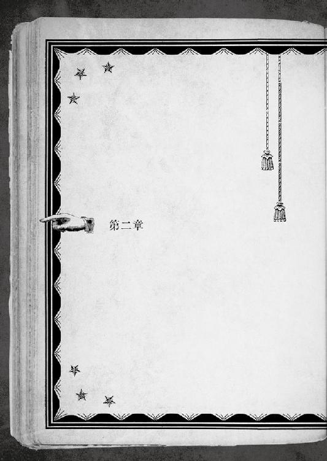
時は夕刻に差し掛かり、どこまでも高かった夏の青空も、茜と紫が織りなす束の間のまだら模様と飛び交うカラスの黒に彩られている。
一條がいるのは、武家屋敷めいた大きな建物の離れの一階だ。宛がわれたのは八畳ほどの広さの和室。庭に面した縁側に、田舎のお婆ちゃんみたいに座って手持ちぶさたな時間を潰していた。
「ふあー」
感嘆めいた声が、風船から抜ける空気のように口から漏れた。こんなお屋敷を外から眺める機会も少なければ、中から見るのも初体験。瓦葺きの屋根も珍しい時代になったのに、この家は昔日の造り込みをそのまま伝えている。
空気を読まない一條も、珍しさに好奇心で目を輝かせた。
安峰、というのがこの大きな屋敷の主の名である。千里家の古い知り合いで、小槌の浜での「仕事」を片付ける間、宿泊一切の世話をして貰えるよう話がついているという。
「普段大雑把なのに、変なところで用意周到だな、姉さん」
屋敷の古びた具合と比べて驚くほど手入れの行き届いた庭に見入りながら屋敷のお手伝いらしき割烹着の女性が出してくれたスダチ茶へと手を伸ばす。
奥志麻では、名産のスダチを何にでも使う。刺身や焼き魚に絞って掛けるのは当たり前。調味料や焼酎にカクテル、美顔パックや石鹸まで。スダチ茶は、お茶に皮を混ぜたもので、口元に運ぶとスッキリとする香りが漂う。お茶独特の苦さも柑橘系の酸っぱさも表に出ておらず、軽い口当たり。味よりも風味を楽しむ、という印象だ。
中々気に入った。続いて、茶菓子として用意された一口サイズのういろうを一つ摘まみ上げた時、跫音もなく現れた叔美が、右隣にドスンとお尻を落とした。
「おかえり。姉さんの様子は？」
「あのオニチク、まだ起きそうにないぞ。ぱーぺきに〝じごうじとく〟だけどな」
碧流は意識を失って、絶賛ぶっ倒れている真っ最中である。
遡ること、四時間前──
碧流との連絡がついたのは、花々梨と名乗る少女から「挑戦」を受け、『タタリ』に巻き込まれようとしていた女の子を助けた直後のこと。正確には、碧流からこちらの様子を問い質す携帯が入った。
「無理だよ......とても一口に説明できない。それと、花々梨という人が」
『では、合流して直接説明しろ』
有無を言わされずに指定された合流地点が、ここだった。
まさかの惨劇は、一條たちが海岸から、半ば山道のような険しい道程をたっぷり三十分近くは歩き、ようやく屋敷に到着した直後に起きた。
哀しいかな、『本』は途中一度も自動的に現れなかった。全ては、避けられない『必然』であったのだろうか。
「迷わずに真っ直ぐ来られたか？ それにしても、早々に『タタリ』らしいものと遭遇できたとは。成果は予想以上だ。やはり私の目に狂いは──」
大きく威圧的な門構えに物怖じし、何度も「ここでいいのかな？」と確かめてからおっかなびっくり乗り込んだ一條を、家人ではなく、いつもの碧流が出迎えた。そして、台詞の途中で石みたいに固まった。
彼女が眸に写しているのは、愛おしい弟ではなく、その背後だ。
「............花々梨、か？」
「元気そうじゃないですか、碧流」
麗しい少女二人が交わす微笑みに、硬い蕾が綻ぶように場の空気が緩む。
「やっぱり、姉さんの友達だったのか。一緒に、って言われたから連れてきた......というよりも、彼女が案内してくれなかったら、道に迷ってた」
「イチジョー、体力なさ過ぎだぞ。ちょぴっと歩いた程度で息ハァハァだし」
「......あれがちょびっとなんだね。君と、ハイキングにだけは絶対行かないことにする」
ここまで歩いてくる途中、一條は何度も音を上げかけたのに、叔美は鼻歌交じりだった。文明世界の外側でワイルドな人生を生きていた野良猫と貧弱な坊やでは、持久力の差は歴然である。
もっとも、叔美はともかく、花々梨まで顔色一つ変えずに歩ききっていたのは、病み上がりの上にハンデ付きだったとはいえ、一応でも「男の子」としてのプライドがいたく傷ついてしまった。
その花々梨は、出迎えの碧流と感動の再会シーンを演じている。
碧流は予期せぬ知己の登場にも意表をつかれた様子はなく、微笑みを浮かべて歩み寄る。花々梨も、深窓の令嬢のような上品な挙措で両手を広げ、旧友を抱擁しようとした。
ミチッ。
最初は、右の回し蹴りだったと思う。
先制したのは碧流で、その打点の高い蹴りをしゃがみ込んで空振りさせた花々梨はダッシュして残る足を両手で刈ろうとしたのだが、実は碧流の最初の蹴りはフェイントで、頭を下げて飛び込んできた相手の無防備な延髄に右の肘を打ち下ろそうとしたのを、花々梨は読み切ってガードを上げ受け止め様に碧流の鼻面へ頭突きをぶち込もうとして──。
何が起こったのか全く状況についていけない一條の目の前へ、困ったヤツだと笑うように、自動的に『本』が現れた──のだが、
「ちょと！ 待って、まだ読んでない!!」
ロクに文面を読み込まない内に、選択視らしいものが著かれるや否や、選んでもいないのに次のＰＧ目指して独りでにページが捲れていった。
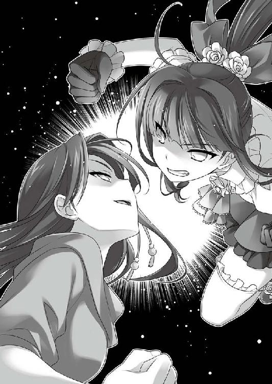
つまり、選択視が選ばれたのだ。
「まさか、タイムアップか？ 選ぶ暇もなかったのに？ 制限時間コンマ数秒で、勝手に選んだことになったとか？ そんなのアリ!?」
碧流と花々梨が、フィニッシュブローで互いの宿敵の顔面を見事に捉える、イイ感じの鈍い音がした。
そこから、三時間。ろくすっぽ事情を説明もせずにぶっ倒れ中の碧流の復活を待って、縁側でお茶を啜っているのである。徒歩二〇分圏内にコンビニの一軒もない田舎のお屋敷で出来ることといえば、他には思いつかない。
「中身を読む暇もないとか......ひっどい選択視だったな。どうせ著いてあったのは、姉さんたちの間に入って止める......とか、そんなのだろうけど」
一條の人生でも、制限時間の最短記録更新だ。
再会の様子から、碧流と花々梨は間違いなく旧知らしいが、一條が期待したような心温まる間柄ではなさそうだ。夫婦喧嘩は犬も食わぬと言う。女の子同士の真っ赤な友情に割って入るのは、己の死刑執行書にサインしに行くようなものに違いない。
「ほっとけよ。死んでないンだから、そのうち起きるって」
叔美は素っ気ない欠伸混じりで一條に用意された茶菓子を掴み、器用に片手で包みを解いて、二つまとめて口に放り込む。残りは三個。
「そうもいかないよ。早く事情を説明してくれないと。いきなり社員旅行なんて福利厚生を言い出した時から、変だとは思ってたけど」
「いつも変だろ、オマエの姉貴」
「そうだけど......いや、そうじゃなくて。この旅行は最初から別の目的があったんだ」
「それって、〝ひみつけっしゃ〟の陰謀ってヤツか？」
「また、妙な言葉を何処からか覚えてきたね。君の場合、冗談になってないけど」
秘密結社ならぬ謎の企業から派遣された「怪人」に付け狙われていたのが、少し前までの叔美の境遇だった。
何やら厄介なことになってきた、と難しい顔で腕を組む。
かつて、一條は約束をした。千里の家業を手伝うつもりになっていると、碧流も承知している。最初から説明すればいいのに、回りくどいやり方で、不意打ちみたいに自分をこの場所へ連れてきた理由の想像がつかない。
「言いにくいことだから？ それはどんな？ 『タタリ』が理由とは思えないし......」
「罠だ、罠。このままだと、おいしくいただかれるぞ」
「姉さんは、その手の後ろ暗いことをするタイプじゃないよ。根が素直だから。理由があるんだろう。信じてる」
一條と碧流の間柄は、単純には割り切れないものだ。それでも、記憶を失くしてからの自分を姉として支えてくれた。例の叔美の「事件」でも、命懸けで一條に力を貸してくれた。どれだけ感謝をしてもし足りない。
碧流と折り合いのよくない叔美は、拗ねたような白い横目で一條を睨んだ。
「いいけど......オマエって、やっぱその内、鍋料理の具材にされちゃうタイプだよな。変なとこで強情で、そのくせチョロい」
「......チョロいって言うな」
多少は自覚があって気にしてるので、口をへの字に曲げて撤回を要求したが無視された。
「それにしても......タイミングが悪い。せめて、あと十日後なら」
せっかく、考え抜いた『初めての夏休み』デビューを、台無しにする事態だけは回避したかった。それに、同じく初体験であろう叔美にも、夏の楽しさを知って貰いたい。
世の中とは、かくも巡り合わせが悪く出来ている。
「仕事だけならまだしも『訳アリ』となると、何をどうすれば本来の道筋に戻れるのか」
「オーナーだからって、ジューギョーインを好き勝手こき使いすぎだ、あの腐れオニチク。そのうち〝そしょー〟してやるから覚えてやがれ」
ギュッと拳を握り締める叔美のらしからぬ単語チョイスに、目を丸くする。
「ちょっと前まで、資本主義ナニそれ美味しいの──みたいな生活してたのに、進化が早すぎないか。そんな言葉、どこで覚えてくるんだ？ やっぱり、おカマダさん？」
「最近常連になった、ニュージーランド人のイーサンが多用してたぞ」
「〝丘の上の学校〟の人だっけ？ 実家の遺産相続で人間の性悪ナリと悟ったから、〝禅〟を求めて来日したハゲた英語講師の。こんな田舎でも国際化が進んでるんだね」
夏休み明けの教室で、いつの間にか茶髪に染めていた学友を眺める気分だった。『補習』という労役義務に勤しんでバイトを休んでいる間にも、世間は変わり続けている。
「アンブロシウスには色ンな客がきやがるからな。与太話聞いてるだけでも、おもしろい。それとあのオッサン、ハゲじゃなくて剃ってるだけだって」
「......ふーん」
微妙に寂しい気分で、少女の快活な横顔を眺める。
一條の知っていた叔美は、眩しいぐらいに輝いていた。
斜に構えているし性根は真っ直ぐだけど口は悪いし人見知りするし人間としては決して誉められたものではないが、『１４』というハンデを背負いながら、独りで俯くことなく生きてきた。格好よかったのだ。
しかし、暖かな都市で暮らす日々では、野生の獣も角が取れて丸くなる。利便性に溺れて、薄汚れた社会の部品になってしまう道を選んだのか。
「与太話に簡単に影響を受けちゃう叔美の将来が、僕はかなり心配だよ」
「こういうのは、『成長』っていうんだぜ、ボゥイ」
澄まし顔の叔美に言い負かされたのを誤魔化すように、無理矢理、話を元へ戻す。
「姉さん、そろそろ起きてきてもいいのに」
「このまま永眠ってのも、世の中が平和になっていいぞ。あ、でもそれだと給料払ってくれないから困るな」
「そんなに困るんですか。別にこのままでいいのでは」
「そうはいかないよ。訊きたいことが多過ぎる。花々梨さんのことだって、蹴りから入るとは思わなかった」
「やっぱ、最初は左ジャブからだよな。牽制で」
「速攻を仕掛けて息の根止めてしまった方が、ノープロブレムなのでは？」
「バトるところから離れなさい、問題だらけだから！ でも姉さん、電話で花々梨さんの名前を出した時は意外そうだったし、今回の『訳アリ』には関係ない、偶然の通りすがりなのか？ 海岸で遭った時はヤケに意味深だったから」
てっきり黒幕かと思っていたのだが。
「どっちにしたって、いきなり襲い掛かったのは、事情があるにしたって酷すぎる。後で言って聞かせないと」
「碧流なら、特に理由のない回し蹴りはアリなンじゃね？」
いたって本気顔の叔美のツッコミに、言い返せない。
姉さんだって、理由ぐらいは......と反論しようと思ったが、どっちにしても遣りかねないと思った時点でアウトだ。口を閉ざしたまま、そっと目を逸らして黙った。
「黙ンなよ、返事しろ、おい」
「いいだろ、静かにしてたい年頃なんだ」
「お兄さんもヤバい人なのでしょうか？」
「僕までの姉さんみたいに言わないように......って、さっきから誰!?」
いなかった筈の左隣に、授業参観の日の教室みたいに澄ました顔で、小さな女の子が腰掛けていた。
「──オマエ、起きてたのか」
「はい、元気です」
数時間前、タタリ（？）から掬い上げた少女である。
拾った状況が状況だけに、おかしな影響が出ているとマズいからと、病院や警察ではなくこの屋敷に連れてくるよう、電話で碧流が指示した。
一條が背負ってきたものの、意識が戻らなかったので、叔美と碧流に与えられた部屋、つまりぶっ倒れた碧流の横──正確には、碧流が横──に寝かされていたのだ。
「もう、歩けるんだね。大丈夫そうでよかったよ」
「憶えています、お兄さん。助けてくださって、ありがとうございます。アカハはもうダメになってしまうところでした」
アカハと名乗った少女は縁側から立ち上がると、大げさに頭を下げてお礼を告げた。タタリの影響が残っているのか、単に起き抜けだからか、ふらふらとして姿勢が覚束ない。
海岸で出逢った時と同じく、一條は束の間少女の顔立ちに見入ってしまった。彼女は叔美よりも小さかった。背丈も小さいが、見るからに年下だ。中学生か、どうかするともっと年下だろう。一條は、そんなコースにストライクゾーンはない。
またちょこんという仕草で、一條の左隣に座る。並んで腰掛けると、思った以上に小さい印象だった。手足のパーツの作りそのものがガラス細工のように繊細なのだ。
初見の時からずーっと、言葉にならない何かが喉の奥に溜まっている気がしてむず痒い。
──大きくなったら、もの凄い美人になりそう。
結局喉から出掛かったのは、そんなとりとめもない考えだった。
「あの......お兄さんの名前を教えてください」
年下の少女に神妙な顔でお願いされて、まだ名乗っていなかったのを思い出した。
「僕は、千里一條。えっと、こっちは、叔美。ここは......まあ、知り合いの家かな。君が海岸で倒れてたから、連れてきて休ませてた。身体は、何ともない？」
「ノープロブレムです。すみません、英語は通じないですね。はい、大丈夫です」
アカハは思い切り真面目な顔で律儀に言い直す。
どう見ても真剣で悪意はないが、もしかすると馬鹿にされているのだろうかと、ほんのちょっぴり悩んでしまった。
──それにしても、落ち着き過ぎじゃないか？
海岸で倒れ、目が覚めれば見知らぬ屋敷に連れ込まれていた。状況だけで一條の手が後ろに回りそうなのに、アカハはまるで世慣れた大人のような泰然とした物腰だ。単に、暢気過ぎるだけかもしれないが。
「ちょっと、叔美......って、何やってるんだ？」
「..................ナニって、別に」
叔美にも意見を訊ねてみようとしたところ、一條に隠れるようにして、小さくなっていた。この数ヶ月間、日夜『アンブロシウス』で働いているおかげか、人見知りは幾分か改善されていたが、アカハは苦手なタイプに直撃している。花々梨のような挑んでくる相手へは平気でぶつかっていくのに、明け透けな善意や好意に不慣れなのだ。
「..................まあ、いいけど」
本当は、よくない。『訳アリ』の碧流はぶっ倒れたまま。正体不明の花々梨も失神中。加えて、この少女。
一條の周りは、五里霧中の迷路のようだ。
なのに。
『本』は、自動的に現れることはない。
普段は頼まなくてもしゃしゃり出てくるクセに、こういう出来れば智恵を借りたい時には現れない。人生というパズルでは、ピッタリ嵌まるピースは、いつだって後から発見されるものなのだ。
「............ええと、アカハはどこから来たのかな？ この辺の人？ それとも観光客か何か？ 家族も心配してるだろうし、早めに連絡した方がいいよ」
アカハは寝起きすぐだからか、今一つ背筋が伸びず、ふらふらと頼りない。
「実は......どこから来たのか、よく憶えていないんです」
「......今、考え込んでなかった？ どう返事をしようとか、そういう感じの間で」
「記憶喪失とか、どうでしょうか。ドラマチックでイケてませんか？」
「それはダメ！ メッチャ、イケてない。全然これっぽっちもイケてません」
己が胸に手を当ててみれば、ああそうなんだーでは流せないし笑えない。
「ソレって、一條もそうだよな？ ちょくちょく転がってるものなのか？」
トンデモな会話に、絶賛警戒中の叔美が一條の小腹を突いて訊ねる。
「あのね、ちゃんと信号待って横断歩道渡るおカマダさんところのポチぐらいは頭使って欲しいな。記憶喪失が、そうポンポン転がってたらオカシくない？」
「ポ、ポチと一緒にするなっ！ アタシの方がおつかいは上手だぞ!! だって、ソイツが......」
「そういうことにしておくと、いい感じに話が済むと思いません？」
「済ませちゃダメだよ、人として！ 家族の人とか、本気で心配してるよ！ 可愛い娘がいなくなったら嘆き悲しむよ！ 夜が明けたら警察沙汰になってるとか、とっても困るんですけど！」
「でも......本当に憶えてないんです。ほら、女は過去を捨てるモノらしいですし」
「捨てちゃいけないものまで捨ててない!?」
察するに、素性を隠したくて誤魔化しているのか。いくら何でも雑過ぎるが。
とはいえ、一條や叔美への害意らしいものは感じない。コミュスキルの低い自分の眼力をどこまでアテにできるかはさておき。
「じー」
「そ、そんなに無垢な眸で見つめられても......」
今までの人生で受けたことのない、真っ直ぐすぎて刺さりそうな視線が、信じろと強引なプレッシャーをかけてくる。
もしもの為にと、アカハを寝かしつけた時に手荷物を確認しておいたが、携帯端末はおろか財布の類すら、一切合切何も所持していなかった。今日日の少女らしからぬ持ち物と振る舞いは、何らかの『訳アリ』なのだろう。
「──まあ、いいか」
「いいんですか？」
一條はあっさりと切り換えた。自分の周りには、灯に虫が集まるように『訳アリ』の人間ばかりがやってくる。叔美がそうだし、姉も、花々梨もだ。
（ま、人間じゃないのもいたな......）
自分がそうであるように、誰しもツッコまれたくない訳の一つや二つはある。
アカハに素性を隠したい事情があるなら、詰め寄ったところで大人しくゲロってくれるとは思えない。意外に強情そうな子だし。年下の女の子相手に、それ以上の強引な真似をするのは願い下げだった。
「ちょれー。イチジョーは、強情なクセに甘っちょろいよな」
また言われた。叔美の言う通り、チョロいのだ。自分でも判っている。もしかしたらアカハにも見透かされているのかもしれない。
普通の夏休みデビューが、光の速度で明後日の方角に遠ざかっていくような気がした。
「そうだね、えっと......倒れたショックで一時的に記憶が飛んだのかもしれない。訳アリ物件には、割と慣れっこだよ。今から動き回るのもアレだし、屋敷の人には説明しておくから、今夜は泊まっていくといいよ」
「......ありがとうございます。優しいですね、お兄さん」
形式的なやり取りを終えると、場の異様さに田舎独特なおもたさの加わった静寂が降りてきて、落ち着かない。
さて、どうしたものか......と思案したところで、ようやくと言っていい慌ただしさで、『本』が自動的に現れた。
２３１─■■■■
日本的な庭園に三人で座っても、会話が微妙に弾まない。さもありなん。要約すると技術不足。コミュニケーションとは、才能ではなく経験とスキルだ。
アカハという少女は、キミをしげしげと見つめている。興味があるのだろうか。このまま、シャイな少年として黙っていてもいいのだろうか。
食べ物で相手の興味を惹いてみるのなら／２１３─■■■■ へ行け
沈黙を守り続けるのなら／３８７─■■■■ へ行け
「もしかすると......『ようやく』だから『要約』？ 寒っ、凍死する！」
──ようやく出たのが、これなのか..................。
出て欲しいと思ってはみたものの、こんなことで出られても、正直困る。
本当に、人生はままならない。
「お兄さん、何ですか？」
「あ、その......そう！ 僕は、ちょっと独り言が多い人なので！」
「つまり、頭の病気だと」
「いや、そんなことは、これっぽっちも言ってない。独り言は病気じゃない。ちょっと友達が少ないだけだから！」
突っ込みながら思案した。こんなことでも「分岐点」だ。おろそかには出来ないし、シチュエーション的には、またしても......という気がする。
餌付けとは、コミュニケーションという分野における有効打なのか。「食べ物の恨み」という言葉が昔から伝わるように、人間心理と食は深遠な相関関係にある......のかもしれない。
少し考えてから、結局食べ損ねていた茶菓子を全て差し出した。
「これ、よかったら食べる？」
「ありがとうございます、お兄さん」
見ているだけで嬉しくなりそうな明け透けな笑顔に、こちらが赤面しそうになる。
すぐさま包み紙から取り出して囓ると、アカハは目を驚きに丸くした。
「......ふんわり甘いです！」
「そういうものだからね」
蒸し和菓子の一種である「ういろう」は、Ｔ県ではポピュラーな和菓子である。あっさりした甘さが特徴で、和三盆を使った高級なものもある。これは、一條も食べたことのある奥志麻市内某店の「奥志麻ういろ」で、ワザワザ取り寄せた物らしい。
小豆餡を練り込んであり、ういろう本来の淡い甘みと、口の中で溶け出す濃い餡の風味がたまらない。手間暇かけた老舗の仕事だ。
気に入ったのか、ハムスターみたいに次々とういろうを囓っていくアカハを横目に、叔美が重い腰を上げようとした。
「......アタシ、もう一回碧流の様子見てくる」
珍しく、おつかい役を自分から言い出した少女を、一條が呼び止めた。
「待って、僕が行くよ。叔美はアカハを見ていて」
「ふーン。ま、いいけどな」
「お兄さん、行ってらっしゃい」
全方位どこから見ても腹に一物ありますという顔の叔美とアカハのピュアスマイルに見送られながら、複雑な気分で古びた板張りの廊下を碧流のところへ向かった。
後のことを叔美に任せ......るのは、喉に引っ掛かった魚の骨を取ろうとして呑み込んだご飯が更に詰まったぐらいに引っ掛かっていたが、選択の余地はないだろう。選択したところで変わらない、とも言うが。
そう、さっき閉じた『本』は、再び押し黙ってしまった。
まるで、気配を殺して何かを窺っているかのように。
「どういうつもりだよ？ ういろうをあげるか、あげないかで人生が分岐するのに、これからやることでは左右されないのか？」
自分の行動がういろう数個分の重さしかないと言われてるみたいで、かなり切ない。
「そうじゃなくて、今はどうにもならない......の方が正解なのか」
何かが起きるから「分岐点」ではなく、此処で人生が切り替わるかもしれないから「人生の分岐点」なのだ。一條が偏差値超高めの大学を受験したとして、何をどうしても結果が「サクラチル」の一択なら、今のように現れないだろう。
「合格したいなら、それまでにちゃんと勉強しておかないと......という耳に痛い話か」
ゲゲボなジュースでも飲んだような顰めっ面。
頭の隅に何かがずーっと詰まっているような気がして、こめかみの辺りを軽く叩いた。そんなことで支えが落ちてきてくれたりはしないのだが。
屋敷は築何十年なのか想像のつかないほど古い造りだ。下手に歩くと大きな音を立ててしまいそうで、悪いことをした訳でもないのに抜き足差し足になる。
碧流の部屋までは、多少距離があった。屋内でこれだけ歩くという経験は、滅多に出来るものではない。
「──そこだ!!」
不意に足を止めて、振り向き様、庭の片隅で薄暗く茂っている竹林の物陰を射抜くようにビシリと指差す。よからぬ邪念を感じたからだ。
「流石は我が弟だ。以心伝心で私の気配がわかるとは」
指した方とは正反対の廊下の角から、教師に女子更衣室の覗きを見咎められた悪ガキみたいに居心地悪そうに碧流が現れた。
「いや、見抜いてないです！ 変な気の使い方しないでよ！ こっちが居心地悪いから！」
穴があったら入って消えてしまいたい気分で、差した指を慌てて背中に隠した。強張った空々しい笑みを浮かべるのが、とても胸に痛い。
「お、起きたんだね、ちょうど良かった！ 姉さんに訊きたいことがあるんだ！」
そして碧流は、切腹したい恥ずかしさの全部を誤魔化すように切り出した一條の前から、粗相を働いてお叱りを受けた野良猫の勢いで回れ右して走り去った。
「えっ......................................................逃げた？」
あまりの事態にたっぷり三〇秒、脳のハードディスクがフリーズしてから。
「ちょっと待って、姉さん!! 僕の話を訊いて!!」
後を追って走り出した。
安峰の屋敷の周囲は、山中と言ってもいいような私有地だ。ほんの二〇分も下れば住宅街なのに、ほとんど手つかずの銀杏の林や竹林が幾つもあった。公道ではないので街灯もなく、夜は本当に真っ暗になる。
「ね、姉さん、は、話、聞かせ......っ」
既に相当に薄暗い林の入口で、一條はやっとのことで碧流に追いついた。走り勝ったのではなく、相手が逃走を諦めたのだ。
無駄に高スペックな碧流は、陸上部員でもないのに長距離走のタイムが学校で上から片手の指に入ってしまう逸材だった。今も病み上がりの山岳トライアルとはいえ、すっかり息が上がっている一條を尻目に、姉は平然としている。
「............わかった、負けを認める。この辺りは崖もあって、日没後に走り回るのは危険なんだ。足を滑らせたら、私はともかく、お前が危ない。もう逃げないから、私の言い分も聞いてくれ」
猟師の罠に掛かりながら隙を窺う狡猾な狐のように、最後まで悪足掻きをするかと思えば、存外あっさりと観念した表情だ。
ただ、顔はそっぽを向くように左を向いたままだったが。
「姉、さん、ど......して、逃げた？」
「............怒られると思った」
「僕が怒りそうな心当たりはあるんだ？」
ようやく呼吸を整えてから追求すると、
「うううう、それは、その......」
低く哀しそうに唸る。全方位に頭の回る碧流だが、こと弟のことに関しては、全く隙だらけだ。
「ちゃんと説明してくれるなら怒らない。だから、こっちを向いて、僕の目を見て話してくれない？」
「............イヤだ、断固として拒否する」
懸命に猫なで声を心掛けて懐柔を計ったのに、妙に頑なだった。
「イヤだ、じゃなくて。横向いてたら話もできないよ。いいからこっちを──」
「やめろ、近寄るな、後悔するぞ！」
そっぽを向いたまま狼狽するという変態的なポージングでジタバタ抵抗する碧流を無理に向き直らせると、
「ぶははははは」
腹を抱えて吹き出してしまった。
碧流の、頑なに隠し通そうとしていた左目には、タヌキのような青痣が出来ていた。
言うまでもなく、花々梨とのクロスカウンターによる友情の証だ。
「おのれ、あのクソ女！ いつか必ず相応しい最後をくれてやる！」
「完全に自業自得だよ。それよりも、事情を説明して」
「これを......見られたくなかったんだ。これを見た時の、一條のショックを考えると」
「別に、ただ笑うだけで......いや、そっちじゃなくて、どうして事前に一言の相談もなく、僕たちを海に連れて来たのか、を」
姉が『目的』を黙っていたのを、本当に怒ってはいなかった。そうしなければならない理由があったのなら、甘んじて受け入れよう。自分に出来ることがあるならやろう。
一條は、本心からそう思っていた。時に周りを見ずに突っ走るのは、碧流の短所でもあり、長所でもある。この程度なら、進んで付き合うぐらいでないと今までのことと、釣り合いが取れない。
記憶を失くして一度は他人も同然になった弟に、碧流は己を省みず、沢山のことをしてくれた。
一條が本当に怒っていないのが伝わったのか、目を合わせた碧流は、今度こそ観念したらしく項垂れた。
「社員旅行と偽って、連れ出したのは悪かった」
「やっぱり偽ってたんだ」
ビクッと身体を竦めて、声が段々小さくなっていく碧流を見かねて、そこはこれ以上追求はするまいと思う。
「海岸で見たのが、捜していた『タタリ』でいいんだね？ アレをどうにかするのが、今回の千里の『仕事』？」
「電話で聞いた通りなら、おそらく『タタリ』だろう。流石、私。やはり見立てに間違いはなかった。お前も叔美も上手くやれた！ わはは」
いきなり態度を変えて、胸を張って高笑いする碧流の自画自賛はさておき。
「全然上手くやれた感はないんだけど......。危険を避けてアカハを助けたので精一杯だよ。アレを『どうにか』しろなんて言われても、見当もつかない......けど、やれって言うのなら、遣ってみる。でも、事前にもっと説明をしてくれても──」
「どうにかするのは、私も同行する。だから問題ないし、初日から『ソレ』を発見できたのなら、更に問題ない。早速、明日にも始末をつけるとしよう」
この期に及んで目が泳いで落ち着きのない姉の態度が、『タタリ』の件が、そもそもの「本題」ではないのだと物語っていた。
「それなら、ズバリ聞くけど、花々梨さんが口を滑らせた......ワザとかもだけど......『名跡の一件』ってなに？」
その一言に、碧流は目を見開いて如実に狼狽した。
「あの女、完全に業務上守秘義務違反だ。訴えてやるっ!!」
さっきの叔美の言い分とほとんど変わりなくて、ある意味微笑ましい。
「叔美と同じようなことを。実は、姉さんたち仲いいの？ それはいいとして......『名跡』が、今回の本題なんだね。社員旅行に託けたり『タタリ』の件を持ち出したのも、その話を誤魔化す為なんだ」
「ふふふ、鋭くなった、弟よ。ここまで成長するとは。もはや姉が語ることはない」
再び駆け出そうとする姉の襟首を捕まえる。
「いい感じの台詞で誤魔化せると思わないように。そろそろちゃんと説明してくれないと、僕も多少はご機嫌ナナメになるかもしれないよ」
この期に及んでの悪足掻きに、怖い顔を作ってみせる。流石に「マズい」と思ったのか、碧流は目を合わせず、如何にも素っ気なく自白し始めた。
「..................千里家の当主の座をお前に譲る」
寝耳に水すぎて、一條は内臓を吐き出しそうになった。
「ナニそれ。意味わかんないよ、姉さん」
真っ当に声が出るまで、一分以上掛かった。おまけに完全に棒読みだった。
沢山の色を一気に混ぜれば限りなく黒に近づくように、複雑すぎる感情で、咄嗟にどんな顔をすべきか判らなかった。
当主の座、が具体的に意味するものだって、正直よく知らない。どれだけ小さく見積もっても、これまで以上に重く重要なものだろう。
それを譲る、だと。
「言葉の通りだ。千里家に纏わる全ての権利、義務、責任と決定権、その一切合切を、だ」
オペラ歌手のように荘厳な身振り手振りで、決定の重大さを演出する碧流だったが、逆効果だ。ここへ来て、ようやくまともな驚きと衝撃が一條の脳に直撃した。
「そんな重要なこと、どうして本人に何の相談もなく決めちゃうんだよ!!」
「それは......その、私だって......寂しかったんだ......」
「浮気した奥さんの言い訳テンプレで誤魔化せる状況じゃないよ!?」
摘まみ食いを怒られた飼い犬のようにシュンとする姉の姿に罪悪感が鎌首をもたげたが、ここで引いたら有耶無耶で逃げられると闘志を奮い立たせた。
あるいは、弱みを見せるのが懐柔の手段なのかもしれない。短い人生経験とはいえ、三輪教諭を見ても、女性が怖い生き物だと思い知っている。
「千里家の先代、私やお前のお祖父さんが死んだ時、家を引き継いだのはお祖母様だ。しかし、千里の血を引かないお祖母様の相続に反対する長老は多かった。外部の人間が家督を得るのは、普通なら有り得ないからな。しかし、他に代わりはいなかったから、後継が成長するまでの名跡預かりという形で納得させた」
淡々と事情を語られる。
祖母のことに触れられた時、忘れていた傷口が痛むように胸が疼いた。
かつては知っていたのかもしれない。だが、今は憶えていないし、自分に関わることを説明されているという実感も湧かない。
「でも、お祖母さんも亡くなった」
「そう、去年の、あの時に、な。で、また誰が継ぐかで揉めた。お祖母様の件まで今更蒸し返す者もいて、面倒事は更に倍率ドンだ」
「今の当主って、姉さんなの？」
「詰まる処、私も『預かり』なんだよ。若いし、ついでに女だ。女は継げないという仕来りはないが、いい顔はされない。お祖母様の時に強引にしたのもあって、横やりも多かった。結局、後で長男に継がせるという『名目』をつけなければならなかった」
「その長男って..................」
自分のことだと言われなくても判るが、祖母の話以上に実感が湧いてこない。
しみじみと、過去と現在の自分が地続きになっていないのを思い知ったからこそ、最初に溢れてきたのは当惑だ。他人のような自分がしでかしたことの後始末を問われれば困ってしまうのと同じくらい、他人のような自分に与えられる筈の責任を、真っ当に引き受けられる気がしなかった。
一條の葛藤が伝わったのか、告白直後に速攻で振られた女学生のように、碧流は黙って落ち込んでいた。
ある意味で、これっぽっちも憶えてない自分は、幸福であったのだろう。
一條と碧流の両親は、あの事故のずっと以前に死んだと聞かされている。だから、碧流は千里という特殊な家系に纏わる重圧の全てを、本当は一條も背負う筈だったものを、今まで独りぼっちで支えなければならなかった筈だ。
先送りで一條に──という約束も、長老たち相手に若い碧流では、他に選択の余地がなかったに違いない。
人生には、進むしかない道もある。
もっと普通の家なら、普通の姉弟なら、気楽だったろうに。
「姉さんにとって、千里家の当主......名跡って、そんなに大事なんだ？」
碧流が千里の名に誇りを抱いているのは、常日頃から一條にも見て取れた。
下手をすれば、笑い飛ばすようにも聞こえかねない不用意な言動に、碧流は怒ることもなくゆっくりとかぶりを振った。
「古い名前だ。今時大した意味もない。でも、どんなものであれ信じている者がいる限り、一定の力を持つ。権威、権利、権能......そう簡単には扱えない」
一條も頷いた。記憶を失くしていても、世の中の仕組みくらいは判る。物事が一度動き出せば、動いていること──それそのものが力を持つ。複雑な利害、怪奇な力関係。車輪はどこかへぶつかるまで、決して止まることはない。
それはそれとして。
「簡単に扱えないものを、簡単に僕に渡そうとしてなかった？」
「......寂しかったんだ」
「もうテンプレの言い訳はいいから」
「......チッ」
「今、舌打ちしなかった!? したよね、姉さん!?」
「それよりも、これからの話だ」
碧流は、会社の命運を左右する重要な決定を下す代表取締役のように、堂々と背を向けた。端的に言うと、一條の追求から目を逸らそうとした。
「強引に話を変えたね。現実は変わらないんだよ」
「そう、現実は変わらない。お前が名跡を引き継ぐ以外には、な。私は所詮『預かり』だ。お前は、これから名跡を得て、堂々と夏休みデビューするんだ」
これまた引っ掛かる単語だった。
夏休みデビュー。
そのことによって、むしろ台無しになってしまう本来の夏休みデビューの、ガラガラと崩れていく断末魔が聞こえたように思う。
「どこで誰がどうやってデビューするんだよ！ こんなの、クラスメイトに告知もできない！」
「告知する友達、いるのか？」
嬉しそうな碧流の声に、今度は一條がビクッと身体を竦める羽目になった。
「..................それは、その」
正直、かなりいなくて、片手が必要か否かすれすれのところだが、それはそれとして。
「それよりも!!」
「いないのか.........そして.........イヤなのか？」
恐る恐るなのは、確かめるのが怖かったのだろう。
「..................しばらく、考えさせて欲しい」
本来なら、即答で引き受ける、と言うべきだった。
自分で出来ることならしたいと誓ったばかりだし、一條は言い切りたかった。
なのに、たっぷり一分半は考えても、どう応えるべきなのか、まとまらない。
掌を返したような自分に呆れてしまう。
敢えて冷静に考えるなら、千里の「仕事」を継ぐ決心をしたのと、名跡なるものまで引き継ぐのでは、意味合いも責任も、その後の人生の重みも全く別だ。展開が矢継ぎ早過ぎて、頭は半分もついていっていないというのが本音だった。
黒板前で悩む生徒を静観し続ける教師のように、『本』は自動的に現れない。
（今だって、出てもおかしくないのに......いや、そう考えるのが間違いか）
ここで選択視を示されたとしても、一條には選びようがない。迷っているのではなく、わからない。何をどうひっくり返しても。『本』が道を告げないのは当然だ。
「いいだろう。そんなに時間はないと思うが。それと、今度は私からだが......」
「何かな、改まって」
「あのアカハという娘、その......ウシオと雰囲気が似ている気がするが──」
方程式に代入すれば見事な解答が出るように、その一言が、一條の喉の奥に引っ掛かっていた支えを、脳裏に立ち篭めていた靄を、一瞬で吹き飛ばした。
「そう、だ！ ｃＳだったんだ。いやでもまさか、そんなのが海岸で倒れてるとか、ギャグ漫画みたいな展開があるわけないし」
「何をブツクサ言っている？」
「姉さん......あの子、ｃＳかもしれない」
そう仮定してみると、自分なりに納得できてしまう。
ｃＳとは、どこかの「悪い企業」が造り出したモノで、人間の形と人間以上の性能と人間にはない奇妙な力を持つ。以前現れた蜘蛛とコウモリのｃＳは、叔美を連れ去ろうと付け狙い、その騒動が基で結局......怪我のことは、もういいだろう。
「ひょっとしたらと思っていたが......念の為に訊ねるが、お前の根拠は？」
「『本』が文字化けを起こした。以前ｃＳが現れた時も同じ現象が。それが原因だと確信しているワケじゃないけど」
ふむ、と碧流は珍しく表情を曇らせて考え込んだ。
「まだお前に教えていなかったが、私は千里の名跡預かりだから、ヤツらに対して多少の知識がある。千里の家では、死すべき者の運命を覆すことで、ヤツらが生み出される......と伝わっている」
「具体的にはどういう......」
「奴らのベースは人間だ。本来死ぬべき人間で、現在世の中に在るべきではないものだ」
「......人間を基に造られた人ではないもの。有り得ないもの。この世界のバグだから、文字化けとして記述される？」
以前にも似たような推測を一條はした。それなりに筋は通っている気がする。
アカハがｃＳかどうか、突き詰めての確証はない。他の現象──タタリの影響でも文字化けは起きるかもしれない。
「だけど......僕は、あの娘がｃＳだと思う」
似ているからだ。外見ではなく、どこか曖昧で指の隙間から零れていく砂みたいな希薄な印象が、以前に出逢ったｃＳたちと。
「仮にｃＳだとすると、何の為にこんなとこ......」
それは極めつけの、最後のピースの一欠片だった。
「──叔美だ！」
後先考えず、碧流をその場に置いたまま、一條は走り出していた。
叔美は、ご機嫌斜めだった。
如何にもお屋敷といった造りの建物の庭に面した廊下を、ぷんぷんと頬を膨らませ、ドタドタと行儀悪く足を鳴らして歩く。
居候してやってる千里家は、一條たちの亡くなった祖母の代に立て替えて今風の建物になったそうなので、叔美の人生で初めて遭遇する本格的な和式建物は勝手が違った。
「たく、ロクでもねーこと考えてやがンのかな？」
お茶にも飽きたので、部屋まで戻ることにした。一條に任されてしまったので、仕方なくアカハも連れて行ったが、部屋では、意識が戻ったのか碧流の布団は空っぽだった。先に様子を見に来ている筈の一條の姿も見えない。
──二人だけで、どっかへ行きやがったのか？
だからどうした、というワケでもない。それなのに、集合場所から置いていかれたようで妙にムカついてしまう自分がいて、叔美は驚いた。
アカハに部屋で待っているように言いつけてから、二人を捜して屋敷を歩き回る。
心当たりとかは......特にない。
「イチジョーのヤツ、何か悩んでたな」
内心が顔に出易い少年ではないが、この数ヶ月間濃い関わり方をしたせいか、その程度なら、ぼんやりと伝わる。
何かスッキリしていない顔だった。他人には見えない『本』が見えるという一條は、叔美とも、他の誰とも違う視点で世の中を俯瞰する。その感覚の琴線に何かが触れた、ということなのか。
ここは、いつもの居場所とまるで違う。ここまでの成り行きも、土地の空気も、屋敷も、花々梨やアカハも、どれも怪しくて見通しが悪くて、ハッキリしないのがムカムカする。夜の山で迷子にでもなったような気分だ。
「──ま、いいか」
そう、ごちてから、結局は一條と同じことを言ってしまったのに気づく。
「たく、アタシも鈍っちまったもンだぜ。イチジョーのこと、チョロいって笑えねーな」
庭先でお辞儀している鹿威しの面白い動きを横目で眺めながら、愚痴に似た色合いの溜息を深呼吸のように大きく吐く。
チョロいだけではなかった。そもそも、思考を他人に割くなんて真似は、ここへ来るまで何年もした記憶がない。
「──って、誰かいやがるのか？」
視線のようなモノを感じたと思った。
母が死んでから野良猫紛いの暮らしを続けていたせいで、人の気配には敏感だ。生き残るコツであり、余計な「被害」を出さない方法でもある。『アンブロシウス』で暮らすようになるまで、彼女は関わった他人に、そのままの意味で『１４』の必然を上書きする巨大で無慈悲な印刷機だった。
振り返ると、廊下の角からのそのそと、さっき貰ってたういろうの残りを囓りながらアカハが出てきた。
「ついてきてたのかよ。ヤバいな。今まで気がつかなかったのは、マジで鈍ってるぞ、オイ。たく......こういうの、噂をすれば......なンだっけ、ハゲ？」
諺を教えた一條が聞いたら、哀しそうに首を横に振ったろう。叔美は日常生活に不便がない程度は日本語の会話をこなせるが、所詮は付け焼き刃だ。
「なにやってンだ、部屋で待ってろっていったろ」
「独りで待っているのは寂しいので、お兄さんを捜していました。この家は広くて、迷います。この食べ物、美味しいです。お兄さん、いい人です」
キラキラとピュアな眸を輝かせていた。一條への想定外の懐きっぷりに、「餌」の偉大さを改めて思い知る。
そういえば、一條が自分に手を出してきた時もキッカケは「クリームパン」だ。
（あれは、確かに美味かったなぁ）
クリームパンの味を想い出すと、どういうワケか、もの凄く胸がムカムカした。当たり散らしてやるべき相手は、悪運強く、この場にはいなかったが。
「まあ、迷うよな、ここは......」
相づちを打ちながら「言い訳」を値踏みし、溜息混じりに肩を落とす。自分より小っこい相手に警戒心を持ち続けられるほど、叔美は尖った少女ではなかった。
人を疑うのは苦手だ。実のところ、これまでの人生で他人にヒドい目に遭わされた経験は数える程しかない。周囲に「死」を振りまくのと引き替えに、叔美にはある種の「幸福」がもたらされ、抜き差しならない窮地に決して踏み込まないことになっている。己の用心深さの賜物だと信じていた世渡りは、蓋を開ければ、自分を取り巻く「幸運のシステム」が作り上げた、紙一重の運の良さだ。
「......あげませんよ」
よたよたと傍までやってきたアカハは、叔美に見つめられているのに気づいて、手元のういろうを後ろ手に隠した。横取りされるとでも思ったのか。
「いらねーから」
こういう場合にするべき会話を思いつかない。
開けっぴろげでアカハと二人っきりで並んでいると、何故かお尻の辺りがむず痒いような、おかしな気分になる。無防備という点では一條だって負けず劣らずだが、自分より背の低いのがいけない。『アンブロシウス』のお客にだって、叔美よりも小さくて年下の相手はいなかった。
人は、過去を記憶し作られていく。記憶の積み重ねが人生だ。
前例は記録されて、問題解決の指針になる。社交性皆無な生き方をしてきた叔美は、自分の言葉にできない曖昧な感情と不可解な相手と向き合うという気まずい状況を、舌先三寸で打倒する方法を知らない。それを必要とする生き方をしてこなかった。
「そうだ......風呂入るか？」
──人と人の関係は、答えの出ない選択問題を延々解き続けるようなものである。
叔美の人生は、これまで他者と断絶するのが唯一の行動指針だった。ある意味気楽だったが、奥志麻に来て全てが転回した。
他人を一顧だにせず、身勝手を振り回せれば楽ができただろう。しかし、叔美は育ちのワリには真っ直ぐで頭の良い少女だったのだ。
「とっても、おっきーです」
アカハは舌足らずというワケでもないのに、時々、妙な気分になりそうな甘く絡んだ声を出す。
屋敷の大きさからしても広すぎる間取りの脱衣所の床には、アカハが脱ぎ散らかした上着や下着が乱雑にバラ撒かれている。振る舞いは礼儀正しいのに、整頓すら出来ないらしい。アンバランスだ。
「この屋敷、昔は宿屋だったらしいぞ。だから、風呂もおっきーンだって」
対人関係に悩んだ叔美は、「人は裸の付き合いで分かり合える」という、おカマダさんがしたり顔で語った有り難い教えに縋り付いた。自分の中に前例がない以上、他人から借りてきたもので遣り繰りするのが手っ取り早い。溺れる者は藁でも罠でも掴むのだ。
裸──ならば、何処で行うのが適切か？
夏とはいえ、廊下で全裸になるのは抵抗がある。自分もそうだが、アカハも脱がさねばならない。既にその行為自体が障害であり壁だ。そして、裸同士の忌憚ない付き合いを経れば、人と人を分かつ高い断絶を越えた理解がやってくる......のかもしれない。
色々と考えあぐねた結果が先の台詞だった。ここの風呂はいつでも入れるのでどうぞご自由に、という屋敷の人の社交辞令をそのまま真に受けた結果だ。
「和風ホテルなのですか、最新モードのジャパン流なんですね」
この地に宿があったのは何十年も前のこと。浜が観光地として注目されるようになると、交通の便の悪さから、客足を海岸近くの新しいホテルに持っていかれた。元々地主の暇潰しに過ぎなかった宿稼業は、早々に畳まれてしまった。
「服は、そっちのカゴにキチンと入れとけ」
「はい」
お姉さんじみて細々と世話を焼く叔美に、アカハは素直過ぎるほど素直に従う。
手に馴染まない道具でも使っていく内に馴れていくように、ぎこちない会話でも重ねれば滑らかになっていく。
下着までおっぴろげに脱いで、クチャクチャにまとめて片付けたアカハの服をキレイに畳み直してやりながら、叔美は自分よりも数年分幼い身体をしげしげと確認した。
脂肪が薄く骨張って尖っているが、少女になりかけた蕾特有の丸っこさを備えていて、愛玩動物的な可愛らしさだ。
「......ふーん」
「なんですか、ジッと見つめて。同性の方から告白されるのは趣味じゃないので困ってしまいます」
「人を......えーと、ヘンタイ、みたいにいうな。アタシは男にも女にも興味ねー」
「それはそれで、やはり、ヘンタイさんなのではないですか？」
日本語は難しくて、微妙なニュアンスが上手く伝えられない。むう、と唸りながら自分もさっさと脱いでしまう。夏なので元々薄着だ。ブラウスを脱いで、パンツを脱いで、最後にブラを外す。
「あの、申し上げにくいのですが、跡がついています」
「碧流のヤツがこの......ブラ、だっけ？ 着けろってうっせーンだけど、キツいンだ」
「失礼ですが、サイズが合ってないのでは」
日本に来るまで、叔美はブラジャーを着けたことがなかった。碧流が一條に裂く愛情の数十分の一程度の熱意で適当に教えて適当に買い与えたせいで、それらに関する叔美の知識はどうにも半端だ。それでも最初は合っていたサイズが窮屈なのは、栄養と生活の安定で体型がパワーアップしたせいである。
「そうなの？ まあ、いいじゃン。着られれば。細かいことは気にすンな」
「気にした方がいいのは、叔美さんの方では......」
自分の肌が、軽く日に焼けて、くっきりと水着の跡がついているのがちょっとおかしい。アカハのビックリするほど白い肌と見比べる。海岸で倒れていたのに少しも日焼けしていない少女は、ハッキリと異常だった。
「その辺は、先に風呂入ってから考えるか」
脱いだせいか開放的になって、叔美はアカハを連れ、大胆に風呂場へ入る。
いわゆる、露天風呂が広がっていた。
自然の景観を切り取った岩風呂の情景に見入って、眸をパチクリさせる。入浴の習慣は日本に来てから身につけたものだ。野外で水浴びするのは慣れっ子だが、よく手入れされた露天風呂には、単なる風景と違い、人の手の入った庭園めいた厳粛さが漂っていた。
叔美の馴染みである千里家の風呂は、古風で古い木製だ。こんな岩風呂は初めてで、おっかなビックリで、湯に足の先をちょっぴり浸す。
「うっ、熱っちいから気をつけろよ」
「アカハ、あっちいのは苦手です。今日も、暑さで倒れてしまいました」
「海岸で、か？ アレは暑さのせいと違うだろ」
「暑さのせいです。超弱いですから。でも、優しいお兄さんに抱っこされて助けられてしまいました。こんなことをされてしまっては、もう仕方ありません」
「......こンなことって何だ？」
遠い目をしているアカハが、遠回しに何かを誤魔化そうとしているのか、それともマジ発言で、彼女の中で歴史が既に書き換わって想い出美化修正完了しているのか、叔美からは定かでなかった。
バシャーンっと湯の流れる音。湯煙の紗幕の向こうに先客の影があった。
「あら、一條さんのお付きの方と、あちらはお客人......ですね」
いつの間に目を覚ましていたのか、花々梨だ。当然裸で、しどけなく水に濡れたほっそりとした彼女を一瞥して、叔美は驚くよりもまず最初に、
「ぎゃははははははは」
「何がおかしいんですか!?」
「オマエの顔だよ。昔飼ってたのにそっくりだから」
左目の周りに、碧流のフィニッシュブローによる丸痣をつけた花々梨が、不機嫌そうに膨れた顔は下膨れたタヌキとよく似ていた。
「奥志麻は、タヌキの名産地と聞いていましたが、こんなところにも」
「た、たた、タヌ......ッッッ」
悪気もないが容赦もないアカハの言葉の暴力に、花々梨は打ちのめされた。一條の前では決して気位を崩さなかった彼女が、湯の中で後ろを向いて、すんすんと鼻を鳴らしていじける。
「案外打たれよえーな。でも、おもしろいから仕方ねーし」
笑いすぎたかと反省しつつ、軽く湯を被って無造作に湯船へ入る。
「アカハ、先に身体を洗うよう、命令......じゃなくて言いつけられています」
アカハの方は、とてとてと隅に陣取って備え付けの石鹸で身体を擦りだした。
若干不穏な単語が混じっていた気がするが、考えるのは後回しにする。
「彼女......目を覚まされたんですね。お元気そうで何よりです。それにしても、いつの間にか、随分と仲良くなられて」
もう立ち直ってやがる。回復力はプラナリヤ並である。
「オマエだって、ぶっ倒れてたのにいつの間にか再生してるな。しぶといヤツ」
「あ、あれは、碧流が悪いんです！ 親愛の挨拶をしようと思ったら──!!」
「碧流のヤツがコンマ五秒遅かったら、テメエがやってただろ」
先に手を出したのは碧流だが、あのコミュニケーションの様子では、そうでなくても花々梨から仕掛けていたのは疑いの余地がない。
「......碧流と知り合いなのか？」
「ちょっとした、です。折り合いはよくありませんけど」
「それは見てればわかる。ま、オマエがここに居るのは......都合いいかな」
花々梨とはほとんど初対面同然だが、上から目線がムカつく碧流と比べると話がし易かった。アカハと「裸の付き合い」をするつもりだったのに、とんだ予定変更だが、遅かれ早かれこっちもやるつもりだったのだから、同じである。
「ケンカでも売ってくるつもりなんですか？ 堪忍してくださいね、泥臭いのは苦手です。わたし、碧流と違って、蝶よ花よと過保護に育てられたので」
隣に並んで肩まで浸かりながら横目を送る叔美に、花々梨はニヤリと悪っぽい顔。言葉とは裏腹に、売られたら買いますよ、と書いてあった。
「場合によりけりだ。オマエ、どこの誰なンだよ。面倒だから吐け」
「......おためごかしもないなんて、もう少し情緒というものを......まあ、いいですけど。聞きたいことならわたしにもありますから。〝マレビト〟に施すのは古くから続く千里の仕事。叔美さん、でしたっけ？ あなたみたいな、どう見ても余所者が一條さんと一緒にいるのは理解できますけれど、わたしのところまで話が届いていないのは少し不自然かも、ですね」
「......そンなの、アタシの知ったこっちゃないぞ」
熱いぐらいの湯加減がちょっぴり冷えた気がした。
叔美の正体を、碧流は他の『ヒトデナシ』には伝えていなかった。危険すぎる。叔美は周囲に不幸を、『１４』の必然をもたらして反作用の幸福を蓄えるシステム。今は押さえ込まれているが、あくまでも一時的に、だ。
アンブロシウスの『力』がいつ及ばなくなるのか？
その時、『１４』の危険に晒されるのは誰なのか？
あの事件後、叔美がどうするかについて、一條や碧流と話し合った。その時、細かい事情については「隠し通す」という結論になったのだ。
叔美の正体が知れ渡れば、危険な時限爆弾を排除しようと余計な考えを巡らせる者が現れる可能性は、けして低くない。
一條が自分を庇ったのはわかる。しかし、碧流も同じく「ここだけのお話」にしてしまう案に賛成したのは、当事者の叔美には意外だった。
今は、ほんの少しだけ判る。千里碧流にとって、自分に科した千里の銘と役割は、それほどまでに重いのだ。叔美という、自分にとっても危険極まりない劇薬でも、名が担う「仕事」として面倒を見る。邪魔をしかねない周囲の「同類」たちを、欺くことさえ厭わない。
根性が座ってるのか？ いや、単にバカなのだろう。とっくにこの世にいない祖母を信じて、端から見れば馬鹿馬鹿しい意地を張っている。
逆さに振っても叔美が好意を抱きようのないオニチクオーナーだが、意地っ張りの度合いだけは、掛け値なしに尊敬してもいいと思う。
「アタシのことよりも、テメーの話しろ」
叔美は流れを無視して、スピードのあるビーンボールを投げた。腹の探り合いや空気を読む真似は、元孤独な流れ者にはできない。
「......説明が欲しいなら、碧流から聞けばいいでしょう」
「勝手に出てきてとやかく抜かしたヤツに、どういうつもりかって問い質してンだ。元々アタシは部外者だから、オマエらの都合とかルールとか知ったこっちゃねー」
何が琴線に触ったのか、花々梨は横を向いてタヌキ顔を誤魔化したまま、愉快そうな視線を叔美に投げて寄越した。
「部外者なら、放っておくのはどうですか？ わたしも、おかしな邪魔が入るかどうか考えないで済むのは楽ですし、説明の手間も省けます」
遠回しに余計な嘴を挟むなと釘を刺されても、はいそうですかとは頷けない。
「オマエが一條の敵なら、ソイツはほっとけねーンだ」
それは、偽りない叔美の本心だ。一條の前では口が裂けても言えないが、叔美にとって、それこそが譲れない一線だった。
欲しくても絶対に得られないと思っていたもの──一所に留まっていられる普通の暮らし──を叔美は手に入れることが出来た。たとえ、時間限定のものだとしても。
最初のキッカケである、手を差し出してきたあのバカに、まだ何もできていない。
そう、借りは返さなければならないだろう。全ては帳尻だ。『幸』と『不幸』が表裏一体であるように。労働と対価が仕事を回していくように。世の中は、帳尻が合うようになっている。傾いたままの天秤を放置しておく不義理を、叔美は我慢できない。
一見無関係なものが歯車のように精緻に組み合わさって動き続けているのだと、ようやく信じられるようになった、この数ヶ月の夢のような泡沫の時間にかけて。
「釣り合いはちゃンと取らないとな。さもないと、罰があるンだろ、この国じゃあ」
驚くよりも呆れたような顔をする花々梨が、ほんの一瞬不機嫌そうに眉を寄せたのを見逃さなかった。その理由までは見当もつかなかったが。
「あらあらあら、なんて甘ったるくて可愛らしい理由です」
「か、勘違いすンなよ！ そーいうンじゃねーからな！ 一宿一飯の恩義があるから......だから！」
「欠伸の出そうな、古くさい切り返し。照れるにしても、もっと捻ってくださいね」
「うっせー、黙れ！ 照れてないぞ、ないからな!!」
正確には、一宿一飯×数ヶ月分の借りだ。
『アンブロシウス』の常連である「部長さん」によると、奥志麻には一夜の恩義で家主に嫁を取らせたタヌキの昔話が残っているという。一晩の対価が嫁ならば、ざっと六〇倍だと、一体どうすればいいのか。暗算の苦手な叔美には、見当もつかない桁数だ。
「はいはい、わかりました。うふふふふ」
からかい混じりのニヤニヤ笑いがムカついた。が、これ以上口を滑らせたら逃げ出せない深い墓穴を掘ってしまう気がして、首を引っ込めた亀よろしく、水面に半分顔を沈めて次の反応を待つ。
「今回の一件を、部外者であるあなたに簡単に説明しますと、碧流はこれまで預かっていた千里の名跡を、一條さんに譲ると言い出したんです。それ自体はずっと以前から決まっていたこと。何も問題ありません。でも、一條さんは療養で一年以上も奥志麻を離れていましたから、瑕疵なく引き継げるのか、危ぶむ者は多い。わたしは、其れを見極める代表として、この地にやってきました」
「それって、〝いちゃもん〟つけるのが仕事か？」
「......少しは空気を読んでください。驚くとか、聞き入るとか」
せっかくタイミングを見計らって放った台詞とドヤ顔を全く一顧だにせずツッコまれた花々梨が、気分を害したように唇を尖らせる。
相手に日本人的な行間読みの慎ましさを要求するのは無理だと判断したのか、ほっそりした白いうなじの汗を頭に乗せていたタオルで優雅に拭きながら、言葉を続けた。
「いちゃもん......文句もつけますが、どちらかといえば審判をするんです。一條さんが名跡を継ぐに相応しいか否か。彼が器でないのなら当然......」
「イチジョーは人間だから、器じゃないぞ」
茶々じゃない真面目な発言の分だけ、やり取りの噛み合わなさに救いがなかった。すぐに花々梨の方が折れて、大げさに肩を落とす。
「......モノのわからないあなたに優しく噛み砕いて言い直すと、一條さんが名跡に相応しくないなら、碧流に何らかの形で責任を問うことになります。勿論、一條さん自身にも」
これまでの叔美は、「世界」は単純極まる三色で構成されていると信じてきた。自分と、運悪く同情して寄ってくるバカと、自分を傷つけようとする敵だ。同情にも、悪意にも、関わらなければいい、という点で対処法は同じだった。
しかし、三つの原色があれば、あらゆる色を作り出せるように、他人と触れられる距離にある世の中は、とてつもなく複雑な迷彩だ。あらゆる感情と敵と味方とが渾然となって、明確に色分けなどできっこない。白でも黒でもない入り交じって濁った灰色のグラデーションが、地平線まで見渡す限り続いている。
「......碧流のヤツはどうなってもいいけど、そのメイ......とか、か？ イチジョーは何も知らなくて、勝手に巻き込まれたンだろ」
記憶がない以上、一條が事情を知っている訳はない。
しかし、一條の記憶がない──という事実は、身近な周囲のほとんどにも、当然他の『ヒトデナシ』たちにも、隠されている。
叔美は聡い少女だ。家同士の力関係や複雑なやり取りやルールは、到底理解できなかったが、一條の状態は隠さなければならないものだと察し、これ以上余計なことは言うまいと心に決めた。
──オニチクオーナーめ、これは一つ貸しだかンな。
「物事には落としどころというものが必要です。今回の問題では、一條さんの意思がどうだったかは、関係がありません」
「スジが通ってないだろ、こンちくしょう！」
一條の意思も責任もないところで、勝手に何かが選択され、道が決められていく。
それが叔美には腹立たしかった。理不尽で、納得いかなくて、噛みついた。だが、その程度では、千里家の名跡の後ろにある形のない大きなものには髪の毛一筋分の疵を入れることも出来ないのだと、花々梨のとりつく島もない怜悧な横顔が語っている。
花々梨が勝ち誇った顔で見得を切ると、意図的に隠していた左の横顔が見えた。
「ぷっ、何度見ても、やっぱタヌキ......ぎゃわ！」
手加減一切なく吹き出す叔美の顔に、大量のお湯がぶちまけられた。
「失礼。顔に泡がついてましたから......きゃわ!!」
慌ててタオルで左側を押さえて隠しながら、しれりとした花々梨の態度。やられて黙って大人しくしているほど、叔美の人間は出来ていない。
「アタシは洗ってねー。よし決めた。テメエは敵認定だ！」
お返しは、古風な桶に並々汲んだ冷水だった。冷たさに可愛らしい悲鳴をあげてしまった花々梨は、コホンと咳払いしてから、悠揚とした余裕の態度で雫の落ちる前髪を払う。そして、キレた。
「死なせてやります」
「アタシは死なねーことになってンだよ」
唐突にゴングの鳴った場外乱闘を余所に、ようやく全身を洗い終えたアカハは、騒動を避け、長閑に肩まで浸かって銘泉を堪能していた。
「日本のお風呂、少しだけど気に入りました」
郷に入っては、と花々梨の真似をしたのか、四つ折りにしたタオルを乗せて湯船に入ったアカハの頭上を、桶や石鹸やその他諸々の弾丸が飛び交った。
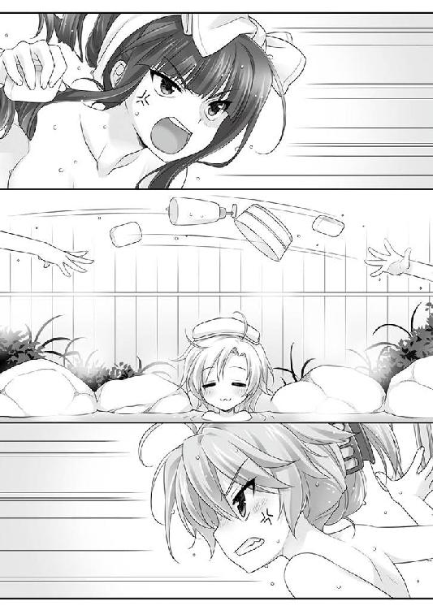
結果的に、勝負は水入りだった。
「お、お風呂場だけに......水入りとは......」
「なに、ワケのわかンねーこと、いって、やがン......」
死闘を繰り広げるという選択肢を選んだ花々梨と叔美は、どちらも決め手に欠け、のぼせてＷノックアウトしたところを、アカハによって二人揃ってゴミの日に一纏めにする粗大ゴミのように脱衣所へ転がされている。以前は宿泊施設だった名残か、やたらと大きな姿見の前で、タオルを巻いた際どい恰好なのに色気皆無のアカハが、マイペースに髪にドライヤーを当てていた。
「たく、ロクでもねーヤツ......」
「......まだ......減らず口を......」
「......オマエじゃねーよ。イチジョーは知ってやがンのかな」
叔美は聞こえないように口の中で呟く。吐き捨てたい気分になったが、そうもいかない。自分よりも小さく幼く見えるアカハが、倒れた女二人を苦もなく運び出した異様な力は、一條の助けた少女の正体を窺わせるのに十分過ぎた。
──まさかな......あんな連中が、他にもいるのかよ。
真っ当な人間とは思えない異常な力。希薄な気配。改めて言われると、思い当たる節がありすぎる。
「さっき、変な顔してたのは、そういうことか。たく、ヤバい橋渡って助けた相手がそれこそロクデナシだなンて、アイツのツキのなさは、アタシを拾うだけはあるよな」
独りお空に向かってブツブツ零しながら、のぼせた身体で壁を支えに立ち上がる。床にだらしなくぐてりと倒れたままの花々梨が、奇行を訝しんで目を細めていたが、どうでもよかった。
まだ確証はなかったが、懸念がビンゴなら、事態は切迫している。
ｃＳの目的は、やはり自分なのか？
数ヶ月前、叔美たちはｃＳを向こうに回して九死に一生を得た。同じ幸運を、叔美以外の者たちは拾うことが出来るのか？
また一條たちを巻き込んでしまわない内に、逃げ出した方が正解ではないのか？
縺れた思考の糸がそこに差し掛かって、叔美は愕然とした。
──今更、出ていけンのか？
誰にも聞こえない自分の胸中の真っ暗闇に、独り佇んで自問する。
今すぐ奥志麻を、『アンブロシウス』を去る選択と対峙してみれば、張り裂けそうなほど胸が痛んだ。また、以前のような生活に、誰とも触れ合わない独りぼっちの道を歩いていくのは寂しすぎる。
──何も知らなければ良かったのに。
なまじ、「そうではない」春の暖かさを味わってしまった分、かつての冬がどれほど厳しかったのかを思い知らされた。
独りに戻りたくないと、咄嗟に考えてしまう自分を弱いと思う。
「あのバカは......どうするンだろう？ いや、決まってるか」
千里一條は振り向かない。過去や人の言い分など戒めにせず、また叔美を助けようとするだろう。
呪われた自分への忌ま忌ましさと、一條の頭の悪さへの苛立ちに、のぼせているのも忘れて腹が立った。怒りで頭に血が上ったせいか、クラリと目が眩んだ。
咄嗟に両手を広げてバランスを取り、危うく持ち直したところで、蹴破るような大音響で乱暴に脱衣所の扉が開け放たれる。
アカハがいよいよ正体を現し、何か仕掛けてきたのか!?
「叔美、大丈夫か!? まだ何も起こってな──」
警戒して硬直する叔美を嘲うかのように、ばばーんと開かれた扉から、息を切らせて一條が飛び込んできた。
そして。
うら若き乙女の絹を裂くような、一拍遅れて一條の憐れな悲鳴が、脱衣場に谺した。
危機的状況の大半は、必然として現れる。
大きな事故が発生する前には、幾つかの中くらいの事故と、無数の小さなミスが隠れており、サインを極小さな内に気づけるか否かが、危険を迂回する為に必要な才能だ。
一條は、サインの数々を拾い上げ、アカハがｃＳだと結論づけた。
ならば目的は叔美に違いないと、慌てて屋敷までとって返し、家の者に今居る場所を聞き出し、そこに駆けつけ、扉を開け部屋に躍り込んだのだが、そこには。
タオルを巻いて鏡の前で髪を整えているアカハと、
脱衣所の真ん中で全裸で大の字ポーズを決めている叔美と、
床の上に倒された雑魚キャラのように全裸で転がっている花々梨の姿があった。
「ごめんなさい。どうかお許し下さい。僕が悪うございました」
庭に面した縁側で、小さくなれるだけなって土下座敢行していた。一條は、サインを読み解く過程でミスし、致命的な失敗をしでかしてしまったのである。
アルカトラズ刑務所の看守のように血も涙もない叔美が、マイナス二〇〇度の眼差しで見下ろしている。とっくに服を着終えた彼女の後ろには、アカハと花々梨と、おまけに一緒に帰ってきた碧流まで揃って、死刑確定の囚人をいつ執行すべきか、と不穏な囁きを交わしていた。何故か、何の被害も被っていない碧流の覇気が一番怖い。どうして？
刑吏の叔美『様』が、近くの座敷に転がっていた新聞紙を丸めた警棒を掌に打ち付ける。間の抜けた音が響き渡る度に、一條は『愛』について深く考えた。
世間とは、不公平だ。落ちた者はより沈み、成功した者は手に入れた力を元手に更に大きく浮上する。プラスにもマイナスにも、掛け金は無限に膨れ上がっていく。だから、低い位置から這い上がるのは茨の道であり、そしてタチの悪い不幸は何処にでも転がっているのだ。誰でも何処でも、些細と思える選択で、人の一生は棒に振られてしまいかねない。
荒れ野のように過酷な世間を生き抜くには、小さな灯火、『愛』と『寛容』こそが大切である。我々は互いに許し合う心を持たねばならない。
「......と思ったりするワケですが、どうでしょうか？」
脱衣所に突貫した件の謝罪と弁明と人生の真理について告解する一條を見下ろす叔美の眼は、どこまでもいっても冷酷非情を形にしたものだった。
「見たろ」
二昔前のパソコンのビープ音で作った合成音声みたいな、酷い棒読みの指摘がキツい。
「み、見てな......いえ、ちょっと......そう、ほんのちょっと、ちょっとだけだから!! ちょっとしか見てないから......もう忘れた、全部忘れました！」
「忘れやがったのか!?」
「どうしてそこに怒るんだよ!? ポイント違ってない!?」
「女の裸と人生と、どっちが重いと思ってやがンだ！」
それはやっぱり人生ですよね、とは思ったが、素直に答えた場合、明日の朝日を拝めなくなりそうなので、ひたすら五体投地で平伏した。
──焦ったのが、全ての過ちだった。
叔美とアカハを二人っきりにした危機的状況に気づいて駆け戻る途中、『本』が自動的に現れたのだ。
２４５─■■■■
既に日が暮れて暗い上に、足場も悪い凸凹道。細心の注意が必要だ。キミは、その暗い道を、レミングめいた全力疾走で走る。
ところで、苦しい時の神頼みという言葉を知っているだろうか。窮地では手助けを願うのが人間の性ってヤツだが、安易な期待ばかりするのはいかがなものか。やはり、自分でやってみてからでないと、神様だってイヤな気分になってしまう。そうだろう？
妙に静かだと思っていたのに、現れたら現れたで文面が悪い。
思わず逸る心で確認した文末の選択視は、「落ち着いて戻る／３３９─■■■■」と「全速力で戻る／６１８─■■■■」の二択。
この時点では、不幸を回避できた筈だ。なのに焦っていた一條は、ゆっくりと文面を検討も咀嚼もせず、叔美たちの居るのがお風呂場なのだと気づかずに突っ走ってしまった。
そして、必然の結果として今へ至る。
平伏のポーズを決めたまま、ちらりと女たちの様子を窺ってみると、平然としているアカハと、さめざめと嘘泣きしながら冷たい視線のナイフを投げつけてくる花々梨、突き刺さる殺意がとても血の繋がった者から放たれているとは思えない碧流。
「ど......どうか許して下さい」
孤立無援の完全包囲。無条件全面降伏で慈悲を乞う以外の選択を失った一條の懇願を、叔美はニヤリと首切り役人のように嗤った。
つるし上げ裁判の後で、肩身の狭い夕食も終わり、一條は廊下に独りポツンと残された。
晴天だから朗々と眩しいばかりの月が出ている。今夜は、熱のない光がクスクスと笑っているような気がして仕方ない。
叔美と花々梨のあられもない所を堪能してしまった罰として、部屋から追い出され、一條は廊下で寝ることになってしまった。碧流も庇ってくれなかった。叔美はともかく、花々梨のナニかを目撃してしまったことに大層ご立腹なのだ。
「......生きてるだけ儲けものかな。一応、叔美も無事だったし」
騒ぎのせいで、姉に花々梨との関係について、問い質す暇がなかった。旧知の間柄で、良好な関係ではないとは予想できるので、取り急ぎ追求する必要はなかったが。
「叔美には、姉さんが上手く伝えてくれるとは思うけど」
アカハに気をつけろと連絡したところで、どうなるものでもないのが、一條たちの置かれた現実だ。
「アカハが本当にｃＳで暴れ出したとしたら──さて、どうやって止める？ 体当たり？ ダメだな、コウモリ男にも踏み潰されて終わったし」
以前、『本』から教えられた「コウモリ男との戦力差」は、まともに立ち向かえる水準ではなかったのを思い出して、ゲッソリした。
女たちも悪鬼ではなかったので、優しくも掛け布団は寄越してくれた。季節も夏。蚊に食われるのは気になるが、普通に眠る分には問題ない。
「寝ずの番でもした方がいいのか。むむ......どうせ頭を酷使するなら、もっと普通の悩みで使いたいよ！ 慎ましい願いの筈なのに......夏休みを謳歌しようという計画は、こうして一歩一歩遠ざかっていくんだね」
集中すべく薄い夏用布団にくるまって目を閉じてみたが、さっき見たなだらかな裸の背中とか、服の上からとはひと味違うくびれた腰とか、白く小ぶりなのに柔らかそうで当分記憶から消えそうにないお尻とかが、目蓋の裏に真夏の太陽の如く強烈に輝いて、消えてくれない。
「お、女の子って、あんなに......違う、そうじゃなくて!!」
「お兄さん、起きていますか？」
「おおう!!!」
吠えた拍子に呼び掛けられて、危うく飛び上がりかけた。噂をすれば影である。気配も跫音もなかったのに、いつの間にか即席寝床の枕元にアカハの姿があった。
「アカハ......その......お風呂では、ゴメン」
この難しい状況をもたらした大元の一つに、どうやって話題を振るべきか、咄嗟のことにパニくって、しどろもどろに詫びだけを口にする。
「とっても恥ずかしかったのです。あんな姿を見られてしまったら、もう、ダメでした。責任を取って貰わないと」
──それって、どんな責任!?
男としての矜持が逃げてはならないと咆哮するが、これはいくら何でも無体な言い分ではないですか裁判長と脳内弁護士が発言する程度には、まだ冷静さが残っていた。
「人生を決めちゃう選択は、もうちょっとよく考えてした方がいいと思うな！」
「アカハ、誰かに助けて貰うのは初体験でした。ロストバージンというヤツですね」
「いや、全然違うと思うけど！」
唐突に、何の根拠もないのに。
彼女の横顔が、とても薄っぺらく見えたのだ。
──アカハの素っ気ない言葉が、どうしようもなく真実ではないのか。
そう思えてしまった。
手を差し伸べられたこともないのだと、切なすぎる告白を淡々と口にする少女がどんな生き方をしてきたのか、彼女の見た目の歳よりも短い人生経験しかない一條には、想像するのも困難だ。
それ以上の言葉に詰まって黙り込むと、首筋にじわりと汗を掻く。
縁側から臨める柔らかい月は、やや中天から傾いていた。白く熱のない夜だが、昼間の夏日の熱が残って蒸し暑い。
「冗談ですよ」
「......うん」
台詞の軽さとは裏腹な、踏み込むのを拒む冷たい拒絶に、身動きもできなくなる。
──アカハがｃＳだとしたら。
狙いは、やはり叔美なのか。一條のハレンチ行為を断罪して部屋に戻る直前、叔美はアカハへ、さりげなくも鋭い目つきを投げつけた。叔美も、何らかの気配を察しているのか。
ひとまずは何事も起こっていない。先の件以来、『本』は自動的に現れてこない。
謎は深まる一方だ。叔美が狙いなら、一條が屋敷に戻る前に、連れ去る機会はあった。ぶっちゃけると、一條たちやこの屋敷の人間が何人いたところで、ｃＳの力押しを阻止するのは至難の業だ。
しかし、一條と碧流が揃っていれば、百に一か二程度なら勝ち目が出るだろう。数多くの助けと幸運を得た上ではあったが、千里の『力』は実際に一度ｃＳを退けた。連中が前回の失敗を教訓にしているのなら、一條たちの不在を突くのが理に適っている。
「こういうのも、初めてでした」
「何が？ 古風な日本風のお風呂？ それとも、今日の夕食の天ぷら？」
いい加減な相づちを打ちながら、アカハの一挙一動を見落とさないように目を凝らす。
「確かに、あのお風呂もあの料理も初めてでした」
「おめでとう。君は一つ大人の階段を登ったね。ここのお風呂も晩ご飯も中々よかった......かもしれないし、そうでないかもしれない」
「お兄さん、どうして、自信なさげなのですか」
「............色々と『訳アリ』なんだ」
食事には花々梨を含めて全員が顔を揃えてしまったので、彼女に火花を散らす姉＆叔美とに挟まれて（実際、一條の席は二人の間だった）胃が痛かったから、ではなかった。
記憶がないから、比較がしにくいのだ。
千里家の食事は碧流が作る。最近では姉の負担が大きいと、一條も叔美も手伝うようにしている。『アンブロシウス』の作業で時間を取られるからか、献立はもっぱら手軽なものばかり。週に一度はカレーが出るのが、千里家の食卓だ。
昔の大店では、若い手代に、最初の半年なり一年は「本物」にしか触らせなかったらしい。何をもって「本物」と呼ぶのか。一言では説明できない概念を身体に覚えさせるのだ。「本物」を審美できれば、自然と「偽物」もわかる道理である。
本物も偽物も区別できる基準を持たない一條には、今日の夕食はとても美味しかった、という程度の味気ない感想しか出てこない。
「さっき、それらしいことを言っていた気もします。アカハも『訳アリ』ですし、人それぞれですね」
明らかに年下のアカハは、時折ヤケに大人びた言葉を口にした。それが浮ついて見えないのが、胸の奥を余計にざわつかせる。
「お風呂に入って、晩ご飯を食べて、みんな団らんで、庭に出て......そういう普通のことが初めてでした」
「いや、ここはとても......」
普通の家に温泉はないし、夕食に懐石もどきが出されたりもしない。だいたい、この家は千里の同類で『ヒトデナシ』だ。世間の基準からすると、「普通」の斜め向こう側にいるだろう。
物思いに耽っているアカハ相手に、それをツッコまない分別はあったが、肘杖に顎を乗せて考え込んでしまった。
「普通......か」
普通とは、何か。
普通なら、『本』は見えないし、人生の分岐点で選択視を迫られたりもしないだろう。
良い悪いではなく、それが「普通」だ。
普通ならしなくていい苦労を背負い込んでしまっているのが、今の一條である。
天秤の両側を十分によく知らなければ、物事の比較はできない。
一條は「普通」を憶えていないから、事あるごとに現れて喧しい『本』と付き合わずに済むのが「普通か？」と漠然と夢想するのが精々だ。
なのに、到底普通じゃないこんな家での、ほんの数時間の一幕を、小さな少女は生まれて初めての「普通」だという。
「......なんだろう、これ。うまく言えない」
モヤモヤする塊が胸に呑み下し損ねたゲゲボなジュースのように残った。
やはり、アカハはｃＳなのだろう。
だとすれば、叔美はどうして、今も無事なのか。
解らないことだらけだが、月に呟くようなアカハの吐露が、自分たちの隙を窺う為の嘘だとは思えなかった。
きっと、この期に及んで、無垢な笑顔を見せてくれる小さな少女が、敵だと信じたくなかったのだ。
「あのさ......その......もしかしてだけど──」
なけなしの勇気を奮って、敢えて引き返せない一線を越えようとしたタイミングで、少女が踵を返して背を向けた。出鼻をくじかれて、出掛かった言葉を呑み込む。
「明日、保護者の人が来るので、アカハは帰ります」
大人びた言い様は無色透明で、感情の色が付いていない。
回り続けるカムとシャフトの軋みに似た呟きに、理由もなく胸を締め付けられる自分を不思議に思う。
「......何か思い出したんだ？」
「はい、湯船に浸かって思い出しました。実は、アカハの方が先に来てしまって、保護者の人が到着してないから何処にも行けなくて海岸にいたら、暑くて倒れてしまったんです。お兄さん、助けてくれて、ありがとうございます。甘いお菓子もおいしかった」
抑揚のない淡々としたお礼も、彼女の偽らざる本心なのだと思いたかった。
一條が出逢ったｃＳは、知識と経験がアンバランスなので、反応は驚くほど素直だったのだ。お世辞にも詳しいとは言えないが、知っている限り、露骨な嘘を吐いた場面は見たことがない。
「明日、朝の内に出て......」
アカハがそう告げるや、『本』が自動的に一條の前に姿を現した。
神託を告げるように、厳かに。
２７９─■■■■
話を終えて、アカハは沈黙する。凍り付いた弾劾のように頑な背中との間には、大きく広い川が流れているのを察した。敢えて、この川を渡ろうというのなら、キミは一体どういった言葉を掛けるべきだろうか。
自分の言葉を考えるには、相手の言葉もよく吟味しなければならない。コミュニケーションは、相手ありきなのだから。
それと、キミは憶えているか？ 自分の部屋に引っ込む前に碧流が言っていたのを。忘れてはいないよな？ タタリの始末についてだ。「昼前に出発する」と碧流は言ってただろ。
つまり、キミは朝方は好きな行動ができる。有限な時間を有効に使うには、予定を立てればいい。さて、どうするかを考えてみよう。
ギリギリまで眠って体力回復を図るなら／１５２─■■■■ へ行け
碧流からタタリのことを詳しく聞こうと思うなら／３３１─■■■■ へ行け
叔美が心配だ。今夜は寝ずの番をしようと思うのであれば、キミの行くべきは／２３７─■■■■だ
明日の朝、アカハを送っていくのであれば／４３９─■■■■ へ行け
ここで選んだ後で気が変わっても、心配は無用だ。明日の朝出発する前に、もう一度選択の機会が与えられるからな。
ひとしきりの文面が記述された後、ＰＧの最後に選択視が著かれている。
「............今回は、サービスいいな」
もう一回機会があると宣告しているのは、それだけ重要な選択だからだろうか。
〈相手の言葉もよく吟味しなければ──〉
アカハは「保護者が来る」と言っていた。送っていくＰＧは、やや高め。多少の危険がある。当然ながら、合流する「保護者」と面と向かってしまう展開になる可能性が高い。
ｃＳの保護者。叔美を狙っている「黒幕」の一人に違いない。前の事件の背後で糸を引いていたのも、その人物であるかもしれない。
「この先は深みに嵌まる分岐点......いや、そう考えるのは違うな」
アカハに聞こえないよう、小声で自問する。常人よりもずっと優れたｃＳの耳になら入ってしまうかもしれないが、まあいい。独り言の多い変なお兄さんと思われたところで、ちょっぴり寂しいだけで平気だ。泣ける。
（これは、僕の準備が出来た、ってことだ）
選択視は、未来を読み取るのではなく、あくまでも「必然」を指し示すだけ。
必然を招く「条件」が揃った時に、選択視は現れる。
これまでの千里一條の「選択」が、この選択視を招き寄せた。
「現れたってことは、今の僕で、先の結果を変えられる」
本当にそう解釈していいのか？ あまりに重い疑問は、敢えて呑み込む。
背を向けたアカハは、月を浴びて青白く染まる。言うべきことは言い終えた筈なのに、名残を惜しんでいるように立ち去らず、佇んでいた。
ほんの二メートルとない、遠すぎる距離。拒絶の壁があって、手を伸ばしても触れられない代わりに、一條はグッと右の拳を握り締めて、気合いを入れ直す。
──どこまで、やれる？
相手と対峙する選択をしたとして、自分や家族を守る為に、叔美を自由にする為に。
手持ちのカードはほとんどないし、相手の手の内もわからないが、決断し、選択できることは、無数ではなくても沢山ある筈だ。
前回のような、成功とも失敗とも判らない曖昧なグレー決着はご免だ。
人生の道は、どんなものでも、次のどこかへ繋がっている。
選択とは、ここにはまだ著かれていない、いつか来るべき未来の瞬間への一歩を踏み出すということだ。
同時に、選び取らなければならない事態の重さに、胃の下辺りが底冷えした。
叔美を狙った相手は「企業」だ。経済という歯車を利益という油で動かす巨大機械。怒りに任せて小っぽけな拳でぶん殴ったところで、膨大な質量と速度は止められない。
それでも、やってやろうと思った。
「......たく、我ながらチョロくて弱っちいクセに高望みし過ぎだ」
ちょっとステータス欄にレア能力が追加されているが、一條は一介の高校生でしかない。
「こんな普通じゃない悩みを山ほど抱え込んで、どうするつもりなんだか」
──散々迷って考えた末に、選択をした。
翌日は、目の覚めるような快晴だった。昨日から引き続いて、季節外れの真夏がぶり返して猛威を振るっている。
「......もう少しか」
噂の保護者と落ち合う場所まで、距離にして徒歩で三〇分。
途中の自販機で買ったドリンク片手に、一條とアカハは周りには民家もロクにない山道に近い国道の端を、目的地目指してトボトボと歩いていた。アカハにも土地勘はないので、一條のスマホでネットから持ってきた地図が頼りだ。
屋敷を出た時には、碧流と叔美は『タタリ』を始末する準備に慌ただしかった。予定通りなら、海岸に向かってもう出発している頃だろう。
今朝方、アカハを送ってから合流するつもりだと伝えると、二人は噛みつきそうな形相で異口同音にピシャリと言い放った。
「「今すぐ口から脳を引きずり出すぞ」」
事あるごとに角突き合う関係なのに、こんな時だけは息ピッタリな女二人のブロックをこっそり抜け出してきた一條だが、後でどんな目に遭わされるかを思うと頬がこける。
二人が怒るのも無理はない。アカハがｃＳで保護者が黒幕なら、カモがネギしょった上にスダチぽん酢持参で鍋に飛び込みに行くようなもの。
その上、相手の素性も目的も判らない今の一條には、「こうしよう」という明確な計画の見通しを立てようもなかった。ことの発端かもしれない「保護者」の顔を一目見てやろう、という思惑はあったが。
ぶちまけてしまえば、年下の女の子を、一人で行かせるのが心配だったのだ。
「我ながら、チョロいな」
今朝から二度、『本』は自動的に現れている。
一度目は出発直前。前夜と同じく、「アカハを送っていく」選択視が再度著かれていたので、それを選び、『本』を閉じて出発した。
二度目は、出発してしばらく歩いた後。「飲み物を買っていくか？」と選択視を示してきた。こちらで「買う／１２４─■■■■」を選んで、自分とアカハの二人分を買うと、アイテム欄に『ドリンク』が記述された。ワザワザ選択視として現れるぐらいだし、何かの役に立つのだろうとその時は喜んでから、『本』を閉じた。
その中身も、既に半分になっている。
「夏ももう終わりなのに、暑すぎ......」
聞き慣れた蝉の声が、まだ五月雨のように喧しい。夏の日差しの中を一歩ごとに体力が汗になって揮発してしまう気がした。
「......田舎の土地はただでさえ交通の便が悪いから、車ないと死ねるね。学生の身分で持ってるワケないけど」
この土地は奥志麻と比べても、二段階は田舎だ。人口二〇万余の奥志麻は、療養で過ごした都会ほどではないが、ギリギリ都市と呼べる規模を有していたと実感する。
「......もう少しですよ、きっと」
気休めのように漏らすアカハの調子は、悪そうだった。顔色の白さは昨夜と同じだし、小さい身体で一條の歩幅に苦もなくついてくるが、動きの端々が精彩を欠いている。
「アカハ、大丈夫？ かなり具合が悪そうだけど、少し休んだ方が」
「大丈夫です、時間もないですし。......暑いのは苦手です。とてもとても弱くて、はふー」
ふらふらと今にも倒れかねない。水分を補給しようにも、アカハの分のドリンクはとっくに空っぽだ。
ふと、脈絡もなく寒気を感じた次の瞬間──
言い忘れを思い出したような軽薄さで、本日三度目、『本』が自動的に現れた。
３９８─■■■■
灼熱が続く。ここはサハラか、それとも鳥取か。どちらでもなく、Ｔ県の片隅だ。陽炎どころか蜃気楼でも見えてきそうな具合だが、キミは音を上げずに歩き続ける。
左手の岩場の向こうには太平洋。広大な景観は、自由な海へと乗り出していきたいと、ロマンチックな夢想を抱かせる力を持っている。男はいつでも夢見がちで、女は現実に生きるなんて言うが、世間では男女平等も叫ばれる。「レディファースト」なんて典雅な行為も、いつかはカビの生えた風習として笑い飛ばされるようになるのだろうか。
炎天下の旅路も、そろそろ終わりだ。目的地まではあと一息。キミの手持ちの地図がデタラメでないのなら。
安心する前に、持ち物をチェックしてみよう。「水筒」か「ドリンク」を持っているだろうか？ あるのなら、体力の消耗を１点に抑えられるぞ。なければ、強行軍で進むしかない。体力を三点失う。これは、キミ以外の者でも同様だ。不幸にも体力が０になってしまった場合、残念だ、キミの冒険は砂漠の夢と消える／１４ へ行け
体力がまだ残されているのなら／４７２─■■■■ へ進め
「......寒気の理由はこれか。いきなり『１４』はないんじゃないか」
現在の体力は二〇点。三点失っても行き倒れはしない。しかし、ここまでの選択で大きなヘマをしでかしていれば、１４行きも有り得たのだ。
「熱射病、舐めてたら怖いな。人生は落とし穴だらけだよ......」
所持品欄を確認すると、半分飲んでしまった「ドリンク」だが、まだアイテムとして記されていた。
「えっと......これ、僕が口付けたヤツだけど、構わなければ......」
少し考えてから、中身半分の五〇〇㎜サイズのドリンクを差し出す。レディファーストだ。
「あうわぁ」
返事も半ばに、アカハは水分に飛びついて、ものの数秒で空にした。
「......ありがとうございます。アカハ、まだ生きてます。あの......思わず全部飲んでしまいました......」
「いいよ。気にしないで」
一條がいい格好している目の前で、『本』のステータス欄が開かれ、体力が「２０／１７」と書き記される。体力三点が失われた。
「リスク計算は得意なんだ。で、それよりも......落ち合う予定の保護者の人？ 家族じゃないんだっけ？」
「はい、上司......じゃなくて、えっと......父親みたいなものではあります」
台詞に混じる不穏当な単語にげんなりの度合いを深めながら、現状の力具合を確かめるように、右手をゆっくりと開いて閉じる。
──千里一條は、何を、何処までやれる？
警戒はしてはいるが、振る舞いはあくまでも大胆であった。
昨夜のも今朝のも、選んだＰＧは４００番台。派手にやらかさなければ、最近では一番親しい友人の『怪我』を呼び込むような退っ引きならない目には陥らない......だろう。４００番台のＰＧを、ある種「平和」と感じてしまうあからさまに異常な人生には、色々と腑に落ちないところがあるが。
「そうか......前に『勝ちを拾った方法』なんて、僕たち以外は知らないし、わかりっこない。見えないんだし」
前回の「事件」の記憶を反芻する。あの場にいたのは、自分たちと二体のｃＳのみだ。片方は海に消え、片方は奥志麻の片隅で隠れ潜んでいる。他に監視役がいたとも思えない。
──僕は、ノーマークってことか？
薄い望みを抱きながら、警戒は怠らない。そして、ステータスを確認して、いつものように閉じた『本』が、まるで一條に反発するかのように自動的に開かれた。
４７２─■■■■
黄。派手な黄！ 前方から、軽快で長い歩幅で歩いてくる男は、実に黄色をしている。目を凝らすまでもなく、目に痛いな。趣味の悪いアロハシャツと短パンは、ここをリゾート地と勘違いしているとしか思えないぞ。キミも何か言ってやれ。
やや赤みのかかったブラウンの髪。どう見てもアラフィフ世代だが、整った顔立ちは少年を思わせる柔らかさ。胸を反らして誇示するように歩く姿は、舞台俳優やモデルのような人目を集める職業を連想させた。自己顕示欲過多なヤバい人という可能性もある。
どちらにせよ、服の趣味は最悪だ。ヤケに長身で、立ち振る舞いはスマートなのに台無しもいいところ。上は色っぽさをアピールするように大きく前をはだけ、下はすらりと伸びた太ももの白さが夏の日差しと対照的だ。
男は優雅に片手を上げる。はにかんだ白磁のような歯並びと、水晶のピアスが陽光を受けてキラリと光る。
「アロハオエー!!」
「おー、待っていたＹＯー！ 暑い中大変だったろう。僕も待っているのが大変だったけどね！ なんたって、見たまえ、実にジャパン的田舎だＹＯ！ 小さくてせせこましい。何もないなら南部の荒野の方がよほど気が利いてるね！」
一目見て、来たのは間違いだったかなー、と一條は回れ右して帰りたくなった。
「来ました。あの方です。あれがアカハの保護者」
「マジで!? アレがそうなの？」
自己顕示欲過多な無関係で通りすがりのデンジャーメンという奇跡を期待したのに、アカハに容赦なく打ち砕かれた。
初対面で年上の男性を「アレ」呼ばわりはどうかと思うが、限度というものがある。居丈高な、あるいは底知れない『悪の黒幕』を思い描いていた。一目見てやろう、成り行き次第では叔美が酷い目に遭ったことに文句の一つも言わなければ気が済まないとやってきたのに。お待ちかねで登場したのはコレなのだ。人生とは、驚異に充ちている。
「軽い、軽すぎる！ 全方位に、吹いたら跳んでしまいそうだよ！」
振り向かないのが信条の一條だが、今回ばかりは「選択」を後悔したくなった。
「お帰りぃ、アーカーハー！ どこへ行ってたんだい？ 空港に迎えに来てくれると思ってたのに」
「はい、プレジデント。実は──」
「まあ、いいか。それよりも、聞いてくれないか。寂しかったんだＹＯ！ キミが居なくて、僕のナイーブハートはとってもチクチクさ！」
「はい、プレジデント」
プレジデントと呼ばれた男とアカハは、安っぽいＴＶドラマの感動シーンのようにヒシと抱き合う。男のオーバーアクションに比べ、アカハの反応が希薄で淡々としているので茶番臭がかなり強い。
人の話を聞かない輩の臭いが露骨にする。一條的タチ悪いランキングで上から三番目だ。
「絶好調の時の久留美が、ちょうどこんな感じだっけか......」
久留美を一緒にするのは、流石に申し訳なかった。
今頃は何をしているのやら。今は旅行中の筈。旅先で、いつものようなハイペースで知らないご老人や子供に世話を焼いているのかもしれない。
今にもスキップし出しそうな男のノリは、なるほど印象は久留美に近いが、決定的に違う。何かが一條の中で引っ掛かる。ずっとアカハから感じているのとは別種の、もっと漠然として名状しがたい感覚だ。
「おやあ......アカハはそんな若い内から、もう男を引っ掛けるようになってしまったのかい。困ったものだねえ、これは育て方を間違った。えーっと、そこの──」
額に手をやって苦悩で頭を振るポーズを取ってから、男が一條に呼び掛ける。
何度見直しても、男の物腰と立ち振る舞いは、黒幕と言うには軽薄だった。容貌も、整ってはいるが重厚さに欠ける。自分を「プレジデント」と呼ばせるセンスもナンセンスだ。自分もそう呼ぶのはあまりに恥ずかしいので、「ミスターＰ」としておく。
ああ、まったく。プレジデントはない。せめてあと二〇年は、世間の荒波に揉まれて重厚さと渋みを身につけてからでなければ。こんな薄っぺらいペーパー野郎には、「ミスターＰ」で十分だ。
「おやおや、これはまた。なんと言えばいいんだろうね。えーっと......」
「千里一條、です」
キミは敢えて名乗ってみせた。敵、それも「黒幕」かもしれない男に、際どい一手だが、悪くはないかもな。相手の反応を参考に、次の手を考えつけば、だが。ミスターＰは、考え込むように眸を空に彷徨わせている。
「千里一條！ 中々素敵な名前じゃないか！」
だが、注意しろ。素知らぬ風を装っているが、最初にキミを見た時、ミスターＰは眉の付け根をピクッと寄せた。何か思い当たる節があったのかもしれない。
「僕の愛しい部下を、ワザワザエスコートしてくれるなんて！ 最近の若者としては、他人を気遣う心が行き届いている！ 何かお礼をしないと！ そうとも、是非に！」
ミスターＰは、無遠慮に一條の手を両手で握って大振りの握手をする。
悪質な美人局のようだ、と思う。美人局というのは、人類史で一番古い職業の次に生まれた由緒正しい仕事で、いわゆる美女を助けていい気になっていると、実は餌だったという、アレだ。これまで実際に見たことはないが。
「お礼なんて、まっぴらです......じゃなくて、どうかお気を使わないでください！ 今日のところは急ぎますので、これで失礼します！」
〈だが、注意しろ。素知らぬ風を装っているが──〉
一條の判断は速い。警告があった以上、予定を切り上げる。
ミスターＰは、こちらを知っているらしい。彼が「黒幕」なら、それも当然のこと。素性がバレているのなら、相手の気分一つで進退窮まる。欲を掻かず、一目確かめるという最低限の達成で満足し、さっさと尻尾を巻くのが得策だ。
ここは早々に立ち去ることにしよう。強欲で破滅した者は、古来から数え切れない。引き際を見誤らないのが、名将の条件の一つだ。
敢えてここで、黒幕かもしれない男へ無謀にもチャレンジできる。その場合、ミスターＰとその仲間であるアカハの二人を相手にしなければならない。戦闘ルールに従ってサイコロを振る前に、まず進むべきは／７７２─■■■■ だ
ここは慎重かつ速攻で別れるのであれば／３７０─■■■■ へ行け
危険を承知で、もう少し会話を試みてみるのなら／５１２─■■■■ へ行け
会話を試みる場合、アカハに何かプレゼントしたことがあるのならば、
『赤いマフラー』......３１１─■■■■
『ういろう』......２３０─■■■■
へ進むことも可能だ
「夏場にマフラーって、何をどうすれば使う展開がくるんだよ!?」
ツッコまずにはおられないが、どこかでどうかして廻り巡っていれば、そういう状況が訪れたのだろう。人生は不思議に充ちている。
幸運にも「速攻で別れる」選択視があった。目の前にニンジンをぶら下げられた馬のように、無条件で食いつくのは踏み留まって、状況を吟味する。
戦闘を挑むのは、アカハの正体がｃＳならば、結果は推して知るべし。
問題は、会話を続ける場合の補足だ。昨日、アカハに『ういろう』を差し出したが、あれは「プレゼント」に入るのか？ そもそも出したのは安峰家の人だし、一條自身は結局食べられなかったし、所持品欄にも記載されなかったあの『ういろう』を、自分のアイテムと定義して成立させていいのか？
一條は悩んだ。『本』が見えたとしても視点が変わるだけで、何が正解かは誰も教えてくれない。ネットで助けを求めても、「グ●れ」というアドバイスに多少の色がつく程度。世間という荒野を渡るのは、詰まるところ自分の両足のみ。
人間には、虎の巣にでも断固として飛び込まなければならない時がある。
──でも、今じゃない......よーな気がする。
そして、選んだ。
「お礼ぐらいはさせて欲しいＹＯ。なぁに時間は取らせない。いいだろ？」
「え、でも、その......」
「ちょっぴりだよ。そこまでは急いでないんだろ、違うかい、一條クン？」
「いや、あの、その」
馴れ馴れしい男を遠ざけようと思ったのに、相手のノリのせいか、焦っているからか、しどろもどろになって拒絶しきれない。
（おーい、どうして、こうなっちゃうんだよ!?）
「──プレジデント。会議の時間が迫っています。ここは急いだ方が」
隣で黙っていたアカハが、淡々とよく出来た秘書のように指摘する。
５１２─■■■■
「おーっと、そうだった！ 私の方に時間がない！ 悪いクセだよ、目の前のことにすぐ気を取られてしまう！ えーっと......キミ、お礼は次の機会にするＹＯ！ それでは幸運を！」
颯爽というのか、ちゃらちゃらというのか、軽薄さそのものの態度で踵を返すと、アカハを置いたまま、さっさと一人で歩いていった。
「それではお兄さん、送ってくれてありがとうございました」
ぺこりとお辞儀してから、アカハはミスターＰの後を追いかける。
「......フォローしてくれた？ 偶然か。かもしれないけど」
男から解放されると、胸をざわつかせていた正体不明の違和感がようやく収まり、ホッと胸を撫で下ろす。いつの間にか握っていた手の中が汗ばんでいた。以前、あの怪奇コウモリ男と向き合った夕暮れのように。
立ち尽くしたまま、少女を見送った。
並んで遠ざかる二つの影は、親子と言っても通じるだろう。もっとも、「普通」の親子がどう寄り添って歩くのか、一條にはよくわからないが。素っ気なく去っていくその背中を、浮き草のようだと思う。水面を流されていく緑の印象が、奇妙に焼き付いて消えてくれない。
アカハがｃＳなのが、酷く理不尽に思えた。
碧流の言う通りなら、アカハは実は死人で、居てはいけないモノかもしれない。
本人がどう考えているのか、確かめたわけでもない。一方的な押しつけがましい感情だが、許せないという気持ちは掛け値なしの本心だ。
「本当にチョロいな、僕は」
今すぐ男に食って掛かって、アカハに手を差し出せればいいのに。
一介の高校生には。そんな真似はできない。臆病だ。今この場で、自分の無力なことを噛み締める。
次の選択を、よりよくする為に。
──そう、幸運を、だ。
小さな影はすぐに見えなくなった。
一人になると、自分の体重が軽くなってしまったような寂しさがやってきた。療養の為に移った都会の学校から奥志麻に戻ってくる時、短い間のクラスメイトとの別れの場面によく似ていた。
「......見送りになんて、来るんじゃなかったかな」
敵かもしれない相手だと頭では判っている。触れ合った時間も数える程なのに、心は思うに任せない。
「それよりも......どうして、５１２に進んでるんだよ？ ３７０を選んだろ。まさか、タイムアップ......じゃないだろうし。お前、妙なズルとかしたんじゃないだろうな」
問い詰めても、『本』は何も言わなかった。
「随分と遅かったな。弟がイケナイ道に嵌まったのではと心配したぞ」
本来の「仕事」をする為に海岸で合流した一條を、碧流は如何にも心配した素振りで出迎えてくれた。見送りという名の弟の裏切りに、前夜同様の弾劾裁判も覚悟していたのに。
「姉さん、ここはどこの並行世界かな」
「意味不明なことを言っていないで、早く準備をしろ。すぐに始めるぞ」
その場には、碧流と叔美に加えて、しれりと花々梨まで顔を揃えている。
今日の午前中にタタリの件を片付けると、昨晩の夕食の際に碧流は息巻いて、花々梨は愉しそうに笑って受けて立っていた。見届け人として、最後まで立ち会う腹らしい。
「......姉さんも叔美も、今朝のことを怒ってないんだ」
どう考えても、『謎』だ。恐る恐る訊ねてみた。
「お前は言い出したら聞かない。今更だ。当たり前のことに一々怒ってどうする」
「そうだそうだ。無駄なコトしたって腹が減るだけ。それより、どうだったンだ？」
「アカハとは、手を振って別れたよ」
直裁に訊ねてくる叔美に、曖昧にはぐらかす。言葉にすると、何故か切なさが込み上げてきて、ゲボボなジュースでも飲んだ気分になった。
今朝、出発する前に花々梨のことを碧流に訊ねたら、「監視役だ」と身も蓋もない返事が返ってきた。いつも通り、言葉が少なく結論が跳びすぎてさっぱり判らない説明だが、気を抜けない相手だというのは伝わった。叔美からも、彼女のここでの役割が、「名跡」の件での一條の資格を判断するのだと教えられた。花々梨の耳があるところで、迂闊な会話はできない。
名跡！ あまりに重すぎる問題の是非を、まだ決断しかねている。間違いなく、この先の一生を左右してしまうだろう。
「──今は後回しだ」
余計な考えは振り払った。目の前の、千里の「仕事」である『タタリ』の処理に集中するべき時だ。ミスをすれば、命に関わりかねないのだから。
「例の、見えないタヌキ、どうにかなンのか？」
「......誰がタヌキですか」
「テメエじゃねーつーンだよ」
何があったのか、昨夜からずっと、叔美と花々梨の間にも険悪な黒雲が漂っていた。一條の周りには、愛や寛容の美徳が不足しがちな女性が多い。
叔美が持ち前の警戒心で、やぶにらみをして周囲をぐるりと睨みつける。
昨日、アカハを助けた岩場は約一〇メートルほどの前方だ。これ以上は近づくな、と碧流が指示する。
「姉さん、僕たちはどうすればいい？ お祓いでもするのかと思ってたんだけど」
仰々しい櫓や道具を持ち出して、怪しげなお祈りでもするのかと思えば、全員着の身着のままで、大げさな用意はない。
自分のイメージの貧困さに眉を顰めたが、碧流はいつも通り無駄に自信満々だ。過信の場合が多分にあるので、無闇に信用すると危険が危ない。
「道具とは、使う者が見えている文化......世界の縮図だ。『加持祈祷』の類は、千里の領分じゃない。千里の仕事は、それに相応しい遣り方と道具を使う」
「千里に相応しい、とか言われても」
「千里は〈八席〉の一つ。それはわたしたちの間でも、古くから特殊な職能を引き継ぐ、特別な名前なんです」
花々梨は育ちが良いのに、他人と同じ目線で話をする。何も知らない一條には、解っているから「あーやってこう」の碧流よりも噛み砕かれていて理解しやすい。
「赤人は『ころす』、蝉丸は『かたる』、千里ならば『しるす』......具体的な方法は、碧流が教えてくれますよ。今では絶えた家が大半ですが、由緒は正しき〈八席〉の一。一條さん、名に恥じないところを見せてくださいね」
「花々梨、お前......いや、いい。フン、そういえば昔からミーハーなところのある女だった。邪魔にならないように後ろへ引っ込んで、一條の活躍を見ていろ」
クスクスと笑い返す彼女が挑戦してきているのだと、一條にもわかった。
「もしかすると......僕の『本』でぶん殴ったら、やっつけられる、とか？」
「何を言ってるのだ、我が弟よ」
露骨に肩を落とされた。見えないもの同士ならかち合うとは、我ながらイケてるアイディアかと思ったが、物事はそう単純ではないらしい。
「だが、あながち見当外れではない。遣り方と道具とは、それ！ 即ち、『タタリを解く』結末を今から作り出す。一條は、そこまで辿り着くこと。叔美......お前の今日の仕事は、しばらく余計な邪魔が入らないよう、周りを見張っていろ。何かあれば大声を出せ。それで事態は円満解決。凄いな、私！」
叔美と一條は、猫騙しを喰らった猫みたいに脳を漂白されて固まった。説明から遣り方から何から何まで、ある意味単純すぎた。
「ちょっと姉さん、いくらなんでも！」
「おい、それはあンまりだろ!?」
一條は自分への丸投げっぷりに、叔美は自分に与えられた役割の意味がわかっていなかったが、とにかく与えられた仕事に辟易して、シュプレヒコールを上げざるを得なかった。
方法があるのではなく、結末を作ることで方法を後づけする。
正しい選択視を選び続ければ、正しい過程を通るから、方法を知らなくても結果的には解決する。理屈は判るが、方法が判らないのに途中の選択視でどうやって正解を選ぶのか。
「目隠ししてオセロで勝て......って言ってるの？」
「あらあら、あちこちから物言いがついていますね。ギブアップした方がいいんじゃないですか？ あなたも、『タタリ』とこうやって向き合うのは初めてでしたよね？」
「なにそれ、姉さんもお初なの!?」
「そうともいう。問題はない。私を信じろ！」
「そうとしか言わないよ。土壇場で何て告白しちゃってるんだよ！」
「ざけんな!! イチジョー、今こそ、〝そしょー〟の時だ!!」
以前の千里家では、碧流の尊敬する祖母が「仕事」を一手に引き受けていたのだろう。後を引き継いだ碧流が、直系なのにあくまでも代理だったのは、それも理由の一つかもしれない。
「さあ、用意はいいか、一條！」
自信だけは充ち満ちている碧流の笑顔が、夏の日差しに眩く輝いていた。
「待って、姉さん！ 今、全力で逃げ出す口実を必死で考えてるから！ あと五分だけ時間を下さい」
「三〇秒で覚悟を決めて支度しろ、やるぞ！」
どこをどう計算しても割り切れなかった。見届け人の花々梨は、お目付役でもある。一條が尻尾を巻けば、名跡を含む一件が全部残さずチャラになってしまうのだろう。
「──出るんだろ。条件は整ったんじゃないか？」
一條の独り言に誘われたように、『本』が自動的に現れた。
「いいタイミングだ。お前の『叡智』を借りるよ」
３３２─■■■■
昨日、アカハを助けた岩場が目の前にある。晴天の下で、白い波に洗われる黒金の城壁のような圧力をキミが感じたのは、気のせいではあるまい。
やはり、轟々と耳鳴りめいた音がする。キミは音の源を前にして、どうするのかを決めなければならない。
人生は幾重にも入り組んだ道だが、どうにも引き返せないところまで離れてしまう道もある。悩むべきは何だ？ これからの自分の生活か、姉の背負ってきた家のことか、あるいは、受けた恩を返すことか。
キミに与えられた時間は残り少ない。よく考えて、選択をするように。
回れ右して全力ダッシュでこの場を離れるなら／１８９─■■■■ へ行け
碧流の指示に従うのであれば／４７８─■■■■ へ行け
実に分かり易い二択。
詳細に検分するまでもない。この場を離れれば、背負わなければならない全てから自由になれる。
決断は重い。石よりも、鉛よりも、時には路地裏で拾った不幸な女の子よりも。
目の前の重さから逃げ出せば、自分の手を汚すことなく人生が組み変わる。それは、ある意味で気楽な結末だ。
しかし、一條にはその気楽さが手に入らない。『本』は、意識して消そうが消すまいが、いつでも目の前に佇んでいる。逃走もまた己が掴み取る選択の一つに他ならないのだと、老いた賢者のように彼は囁く。
脚に根が張ったようだった。舌の根が乾いて、息苦しさに喉を鳴らす。前にしろ後ろにしろ、ほんの一歩踏み出すだけのことに、全身の力を集めてもまだ足りない。
「──最後の機会じゃないですか？」
『本』は見えてない筈なのに、心得ているように花々梨が告げた。
それは不思議なことに、昨日から今までで初めて聞く、まるで古い友人へ手向けるような本当の意味での心遣いだ。
「選択というのは、諦めることですよ。あなたはキチンと選べる人ですか？」
その一言が、迷っている一條の背中を押したのだ。
「僕は、諦めたくないから、選ぶんだ」
選んで諦めろと、花々梨は言う。
それはルールだ。揺るがしがたい条約だ。いつだって、選べる選択視は一つだけ。何かを選べば、別の何かは掌から飛び去っていく。
永遠に掴まえられない青い鳥。人が歩いてきた後ろには、選ばれなかった足跡が瓦礫となって積もっている。
それでも一條は、諦めを是とは頷けない。
方程式を解いた最後の解答が同じだとしても、二つは鏡合わせのように正反対だ。
いつだって投げ捨てたくないから、突きつけられた選択視を選び取ってきた。開かれた『本』から、ＰＧ１４の傍から、行き場のない行き止まりの中から。
だから、今、千里一條の遣るべきことは、ただ一つ。
「姉さん。準備は出来たよ」
ピッタリ三〇秒での返事。迷わなかったといえば嘘になる。むしろ、最後まで女々しく逡巡した。今の一條は、千里家に思い入れはない。それでも、碧流が我が身を省みず、自分を助けてくれたことを憶えている。
──それだけあれば、十分だ。
「後悔したって知らないですよ」
からかうような、とても綺麗な囁きに。
「自分は裏切れないよ」
千里一條で有り続けたいからだと、答えていた。
喪失てしまったからこそ、この手に残ったものは宝石よりも価値がある。ほんの一年という膨大な積み重ねを切り捨ててしまえば、残るのは形が同じだけの抜け殻だ。
此処まで選んできたように、この先へと続く選択を開始しよう。
普段通りに、自分の手で、最後まで諦めないように。
決断の後に、パラパラと自動的に捲れていく『本』と現実を重ね合わせた。
碧流は目を閉じていた。精神をギリギリまで集中しているせいか、額に浮かぶ暑さによるものとは別の汗が浮かんでいる。
「ここに──新たな道を拓く」
「イチジョー、やっちまえ！」
何が起こるのかよく解ってないクセに、ハッパをかけるつもりか、叔美が右手の親指をサムズアップした。それから、自分の「仕事」を思い出して、見張りの為に駆けていく。
何となく肩が軽くなった気がして、離れていく背中に親指を上げて応える。
「──五つ先。今回は..................『多分』抜きだ」
神託めいた碧流の言葉を遠くに聞く。
ここから五つ先、四つの選択視を選んだ向こうに『タタリ』を解決する『結末』が用意されている。
具体的には何もわかっていないのに、これで正しいのだ、という不思議な確信が自分の中の何処かにあった。心が忘れていても、身体は「千里」を覚えているのかもしれない。
──大丈夫、行ける。
触れもしないのに、『本』は自動的に捲れ続ける。やがて、速度が落ちて開いた先に、短い文面と、選択視が一つ。
４７８─■■■■
キミは地雷原を掻き分ける英雄的な兵士であることを、自らに科した。決断を終えた以上、それは覆ることのない決定事項となった。
それでは前に進もう。ここからは、常に気を配り、ひっそりと隠れて咲く花を捜すように五感を張り巡らせて、異変を読み取らねばならない。
まずは、北北東へ進もう／５１７
「なんじゃ、そりゃ！ 選べないとか、反則じゃない!?」
一回休み、みたいな選択視だ。しかし、ものは考え様。選ばなくてもいいなら、五手の内の一手がお得とも言える。
「方角の詳細まで書いてあるのは重要だから、か？ 昨日と同じで、踏み外すと『タタリ』に呑まれる......とか。有り得るな。慎重に行こう」
〈隠れて咲く花を捜すよう──〉
記述の引っ掛かる部分を思案する。
花を探すなら、五感は何を使うだろう。隠れているのだから、目では見えない。植物相手だと耳もアテにならない。
「......花だけに鼻、か？」
いつものように『本』は閉じず、開いたまま。
視界や音はもとより、臭いにも意識を張り巡らせて、振り向かないポジティブハートで、一歩ずつそろそろと正確に北北東へ進む。
空気の臭いが僅かに変化した。集中していなければ、嗅ぎ落としていただろう、微細で奇妙な違和感だ。
二つ目のＰＧ、５１７が開かれる。あと三つ。
５１７─■■■■
岩山の外周に沿ってぐるりと迂回しながら、キミは北北東へ進路を取る。掌は汗塗れ。足元の砂の感触にさえ、敏感に反応できるよう、身体から力を抜いて自然体だえタタタタタタタタタ......制服だというのに、久留美が右腕にするりとしがみついてくる。
季節は夏。街中では、寄り添えば汗ばむほどの気温だというのに、彼女は子犬のようにじゃれてくる。天真爛漫な裏表のない笑顔は、いつだってキミの心を和ませてくれる。
「一條、次はどうしましょうか！」
「久留美は、どこに行きたいタタタタタタタタタ......身体から力を抜いて進まなければならない。緊張する時間が、一秒、また一秒と過ぎていく。
今、自分の立っている場所は、奥志麻の街中だ。
見慣れた駅ビルが、夏の太陽を遮る蜃気楼と化す。
目を疑って見開かれた視界に、灰色のノイズが走る。
ここは海岸だ。久留美はいない。白昼夢は消え失せ、眩い太陽に目が眩みかける。
「今のは......夢？ リアル過ぎるだろ......それに、どうして久留美なんだ？」
幻ではなかった証拠が、『本』に記述されている。錯覚ではなく、『本』に著かれる何かが、一條の身に起きたのだ。
「まさか..................これが、『タタリ』なのか？」
昨夜の内に、ソレが『よくないもの』だと説明は受けたが、本当の意味で、『タタリ』を理解っていなかった。
近づくという禁を犯せば、祟るものは惑わせる。
胸の奥が掻き毟しられるような違和感の臭い。本能が、危険そのものを警告する。
あれが『タタリ』だとして、呑まれたら──どうなるのか。
「ま、考えるまでもなく、ロクな目には遭わないか」
では、進むべき道を決めよう。行くべき方向を選んで、進むように。
北／６２５─■■■■ 北東／５１１─■■■■ 東／７８７─■■■■
東／７３７─■■■■ 東南／７６０─■■■■ 南／８０１─■■■■
著された選択視は、まだ続いていて全部で十二択。臭いのする文面とは無関係に、進むべき十二方位それぞれにＰＧが用意されていた。
あの、『１４』特有の寒々とした気配をビンビン感じる。一つか二つは繋がっているのだろう。危険はどこにでも潜んでいる。自分から近づけば尚更だ。
最初のＰＧで著かれていたように、五感を研ぎ澄ます。隠された花を見つけ出すのは鼻、嗅覚だ。臭いの強い方向を避けるようにして、最もマシだと思える「東南／７６０─■■■■」を選ぶ。
ＰＧの大きさを承知で、直感を信じる。
「......ウホホだか〝ウホ〟だとかいうのが、あるんだっけ？」
いい加減な、ネットで囓った知識だった。
正しくは、禹歩、あるいは反閇と呼ばれる、「歩く」ことそれ自体を一種の魔術とした儀式的ステップ。物事には吉、凶の方位があり、それを避けたり踏み込んだりすることで、運気を御する体系だ。
「判ってきたぞ。タタリは、まんべんなく拡がってるワケじゃないんだ」
漠然と拡がる渦をイメージしていたが、濃い場所と薄い場所がある。選択視を通して、危険な領域を避けながら、どこかを目指しているらしい。
碧流が作った選択視は五つ先で完結する。この『タタリ』の処理には、それほど複雑な手順は必要とされていない。
「......ここは見えなくても迷路だ。壁や罠を踏まないように、ゴール地点を目指せ。ゴールには何かあって、それをどうかすればタタリが解ける......とか、か」
三つ目のパラグラフ、ＰＧ７６０が開かれる。残りは二つ。
７６０─■■■■
キミは東南へと慎重に進んだ。このまま進めば、岩場の裏側に回ってしまう。ゴールに近づいている予感に胸を弾ませながら、夏の砂浜だけに、まさにフライパン上のベーコンの気分を味わった。額に汗が浮かんでいるのは、暑さのせいばかりじゃないだろう。ここは敵地だ。一つ間違えればキミはタタタタタタタタタ......待ち合わせ場所から外れた駅ビルの正面で、キミを見つけた久留美が嬉しそうに駆けてきて、するりと腕を組む。
「一條をやっと見つけました。はぐれてどうしようかと。携帯ぐらい持ってくれればいいのに」
──駅前で、久留美と仲睦まじく腕を組む千里一條。
そんな場面は、記憶する限り一度もなかった。
「......以前の〝僕〟の記憶か？ いや、久留美の容姿はこの間見たのと変わってない......つまり、高校に入学してから......今年の彼女だ」
過去ではないなら未来か。いつか、そうなるのだという啓示か？
そんなものを『タタリ』が見せるだろうか。
未来はいつも闇の中だ。一條の『本』も、まだ訪れていない将来を告げることはないのに。
再び、視界を横切る白いノイズ。
焼けた砂浜の風景が、奥志麻でも賑やかに部類される、奥志麻駅前の景色に変わる。
「好きじゃないんだ、携帯とか、ああいうの」
（いや、僕はスマホを持ってる）
「一條、そういうところは頑固ですよね」
知らない顔で微笑みかける久留美。何故か、胸のどこかをギュッと締め付けられるような苦い味がした。
（そうか、わかった）
違和感の理由に思い当たる。
（僕の知らない、奥志麻の「空気」だ）
今の一條とは、決定的に切り離された何か、だ。
（これは──有り得たかもしれない〝僕〟？）
もしも、違う選択をしていれば。
もしも、小槌の浜に来る選択を選んでいなければ。
数ヶ月前に、路地で丸くなっていた少女にパンを差し出したりしなければ。
一年前の『事故』に遭って、過去を失っていなければ──
俗に、疑惑や異常を指して「臭う」という。言葉としてこうして残っているのは、視覚と違って誤魔化されにくい嗅覚には、異常を察知する力があるということなのか。
少なくとも、この時はそうだった。
有り得たかもしれない「一條」と今の自分とは、見えているものも聞こえているものも違う。連続していない、形は寸分違わなくても同じではないから、違和感が「臭い」として認識された。
（これは......これが、『タタリ』だ）
目には見えないが何か大切なものが持っていかれる、言葉にできない実感。芯の凍るような感覚で、一條は理解する。
碧流の『力』はゴールを造り出す。正しい過程を選び取れば、正しい結末に辿り着く。途中で行き詰まるなら、それは選択した者のミスだ。
（さっきの選択視、ミスった......のか？ あ、マズい──）
白と黒が入り交じる。今と昔が曖昧になる。灰色のグラデーションが、何処までも見渡す限り続いている。
（......何か......大事な事をしている最中だったのに──）
自分は、どうしてここにいるのか？
「一條が誘ってくれるなんて、思わなかったですよ」
「だって、せっかくの夏休みなんだから、普通を満喫しないと」
「時々よくわからないこと、言いますね。それよりも、行くところを決めましょう。一條は何処がいいですか？」
どこかへ行きたかった。
想い描いたのは、普通の、ごくあり来たりな夏休みデビュー。
掴み損ねた季節の選択を、もう一度この手にしたいと願っていた。
では、行きたいところを選ぼう。
夏だから山へ行こうと思うなら／１２３─■■■■ へ行け
夏だから海へ行こうと思うなら／２２７─■■■■ へ行け
久留美が、真夏の太陽みたいに微笑う。
指差す先には、奥志麻駅の路線表示。
切符を買って、汽車に乗り込んで、きっと何処へでもいける。
だから、手を伸ばした一條の目の前に。
それでも揺るがないただ一つの真理のように、黒革の背表紙の厚い『本』が支えもなく浮かんでいた。
（ああ、とっくに選んでたんだな......）
輝く夏休みは遠い。
手を伸ばさなかった。
今更振り向いても、過ぎ去った果実は掴み取れない。
──千里一條は、振り向かない。
その選択は、とっくに「掌の中」から飛び立っている。
だが、しかし。
喪くなってしまうものを諦めたくなかったから、一條はここにいる。
夏だから海へ行こうと思うなら／２２７─■■■■ へ行け
久留美とは遊びに行かない／７３０─■■■■ へ行け
選んだのは、見落としそうなほど後ろにあった「遊びに行かない／７３０─■■■■」。
警報が真っ赤に鳴りだす危険域のＰＧ。
だが、今の一條は、迷うことなく虎穴を選んだ。
そして、独りでにページが捲れていき、次のＰＧが開かれる。
７３０─■■■■
タタタタタタタタタタ......押し黙ってしまったキミに、久留美が首を傾げる。駅前の時計は、ちょうど正午を指し示す。一日で最も明るい時間だが、キミの目に映っているのは、切ないほどに薄暗い灰色だ。
「どうかしましたか、一條？」
「ゴメン、久留美。でも、君と一緒に行くのは、僕じゃないと思う」
切り捨てるような返事をする。冷たいようだが、ここはキミの居るべき〝場所〟ではない。正しい場所を選び取ればタタタタタタタタタ......我に返ると、砂浜を二〇メートル近くも移動していた。あの岩場はキミの後ろだ。迂回して通り抜けてしまったようだ。
ここは海岸。腕にぶら下がっていた久留美はもういない。
目の前には、『本』が浮かんでいる。面倒で口やかましい、千里一條の半身が。
重さの消えた腕を軽く振って、名残を払う。
どうやら、『タタリ』に呑まれかけていたらしい。
「振り向かない」という口癖と裏腹に、惜しんでいた「普通」の夏休みへの追慕と、今頃は白昼夢そのままの時間を過ごしているであろう久留美への自分でも気づかなかった嫉妬が、きっとつけ込まれてしまった原因だった。
「我ながら、チョロい上に人間が小さいな」
歩みを引き止めるのは、いつでも悔いだ。
振り向いて見える景色を、ただ美しいと信じてやれない弱さに祟られて、まだ見ぬ先へと進む気持ちさえ萎えてしまう。
絵に描いたような高校生の青春時代を演じていたあちら側は、どれだけ平穏だろうかと夢想してみたが、一條が立っている夏休みは、やはりこちら側だった。
どんなに理想と懸け離れていても、此処は一條が選択してきた結果。
だから、千里一條は振り向かない。
無様だった自分を一つ笑い飛ばし、それから前を向き直る。
まだ全てが終わったわけじゃない。ここは四つ目のＰＧだ。正しい選択が出来ていたのなら、最後への手掛かりが必ずある。
さっきまで、轟々と唸っていた耳鳴りは聞こえなくなっている。台風の目が真空であるように、中心に辿り着いたせいだろうか。
足元の砂浜には、七〇センチ四方程度の木製の何かがある。よく確かめてみると、どうやら額縁らしい。何かの絵画だ。
『僕の夏休み計画』だなんて夢物語を諦め、恐るべき迷宮を踏破することに成功したキミは、今更迷うことなく進む。古人曰く、九にて半ばだ。足の掛かっている綱から最後の一歩で踏み外さないよう、最後まで細心の注意を払って最良の選択をせよ。
中心に埋まっている、この絵を拾う／６２６─■■■■ へ行け
敢えて、この場では何もしない／８１０─■■■■ へ行け
泣いても笑っても、これがこの「仕事」での最後の選択。
九にて半ば。『本』の教えを心に刻んで、最後の一歩だからこそ沈着に冷静に、指差し確認を忘れない。
「右よし、左よし、空よし、海よし──」
このまま一気に最後まで駆け抜けてもよかったが、念には念と逃走経路を確認した。間抜けでもチョロくても、二度も三度も死にかければ、多少の学習はするのだ。
やることを全て終えて、６２６を選択した。事態の中心に辿り着いたのだから、このまま何もしないのは選べない。
６２６─■■■■
半ば砂に埋もれた、色褪せた絵画は油絵らしい。かつてどんな絵が描かれていたのかは、今とのなっては判別できなかった。
「これが、『タタリ』の中心？」
液体は融点で凍る。水なら零度だが、ごくゆっくりと凍らせると、液体のまま融点以下の温度になる場合がある。これを過冷却という。この状態で僅かな刺激、ほんの小さな振動や小さな鉄片などを加えると、一瞬の内に凍結してしまうのだ。
それと同じように、いわば過冷却に似た状態にあった何かに、ほんの小さな力が加わった時、『タタリ』になるのだろうか。
「──ま、よくわからないけど」
キミは絵を丁寧に掘り返して、砂を払う。心なしか、周囲に充ちていた重苦しい重圧が幾分軽くなった気がした。
さあ、今度は、真っ直ぐに姉のところまで歩いて戻ろう。
碧流は、一條の一挙一動を注視していた。露骨に安堵したような顔の姉に、ここまでの選択が成功だったと確信して、ようやく胸を撫で下ろす。
花々梨はというと、意外にも嬉しそうだった。思い違い、かもしれないが。
真っ直ぐに歩いて戻る。
不快で後ろ髪を引くような違和感の臭いは、もうしない。
「うむ。立派にやってのけたな。流石、私の弟。名跡を継ぐ資格は十分だ」
「ええ、一人で『タタリ』の始末も出来ない役立たずの碧流よりも、よほど立派に千里の跡取りだと思います」
思惑通りでご満悦だった碧流の背中から、花々梨が言葉の暴力で力一杯殴りつける。
「溺死体になりたいらしいな。ちょうどよかった、目の前に海がある」
「おやおや、わたしとしては珍しく、碧流の意見に全面的に賛成しているんですよ。文句でもあると？ 一條さんに名跡を譲りたくないと？」
二人の微笑ましいやり取りに、一條は真夏なのに汗が引いて涼しかった。
この『絵』を自分で持っていることにするなら／７６５─■■■■ へ行け
専門家の碧流に渡すのであれば／５６５─■■■■ へ行け
ご機嫌取りに花々梨へプレゼントするなら／８８４─■■■■ へ行け
──プレゼントすると８００番台なのか。
酷い選択視を見た。人生の落とし穴は、何処にでも有りすぎる。勿論、この期に及んで炎の中にダイビングはしない。
「それよりも......姉さん、これを」
右手の額縁を軽く上げて凱旋を祝い、問題を引き起こしていたブツを姉に手渡す。
「確かに預かった。これは私が処置しよう。なに、問題もなく──」
受け取った絵画を碧流が雑に振り回す。姉は、いつでもものの扱いがぞんざいなのだ。ものがモノだけに、見ていて心臓がドキドキする。
兎にも角にも、起きて顔を洗うように、寝る前に歯を磨くように、一條は開いたままの本を閉じる。
一端は閉じられた『本』が、再び目の前に開かれた。
「まさか!? まだ、終わってないのか？ いや、これは......」
５６５─■■■■
妙な音が聞こえてこないか？ さっきまでの轟々とした耳鳴りとは違う、ハイでロックなボリューム。豪雨が地面を叩きつけるような、悪辣で耳を覆うドラムロール。
キミは素早く音源を確認する。碧流たちのずっと後方に、黒い雲のようなものが立ち篭めているではないか。音は、そこから発されている。
脊髄反射で、その黒い雲に向かって素早く動き出す／７０１─■■■■ へ行け
物事に焦りは禁物だ。まずは事態を確認してか
『本』の記述が目に飛び込むや、耳元に押し寄せる悪意の塊のような音の正体と数秒先に襲来する異変を、一條は誰よりも早く理解した。
だからこそ、碧流とすぐ隣に立っていた花々梨の腰に飛びつき、軽い身体を抱きかかえて、岩場の端目指して走り出していた。
追い詰められたせいか、普段では考えられない爆発的な力だ。
すぐ後ろに迫る音の正体は──無数の羽音。
一條たちを絡め取ろうとする黒い霧は、ミツバチ、アシナガバチ、スズメバチ......様々な種類の、数え切れない蜂の大群だった。赤く輝くような敵意は、巻き込まれればひとたまりもないとお子ちゃまでも理解できる。
蜂は社会性の強い昆虫だ。複数の種類の蜂が一塊になって狂乱するのは、普通では考えられない。まして、それが縄張りを荒らした訳でもない人間を襲うとは！
「蜂の学校で同窓会でもあったのか!? まさか、『タタリ』の続きか、これ!?」
碧流が雑に扱った、それこそ『罰』とでもいうのか。
７０１─■■■■
思うよりも素早く動けたキミは、碧流と花々梨を抱えて岩場の上を走り抜ける。
考える前に感じ取った感性が、キミばかりか二人も救った。状況を変えるのは、手や足ばかりとは限らない。
事前に逃走経路を確認しておいたおかげで、一條は行動に迷わなかった。
しかし、見張りに立っていた叔美とは、距離が離れすぎている。
岩場の上にも、猟犬のように迫ってくる黒い雲。しかし、逃走劇もここまでだ。
残念ながら、岩場が尽きる。その先は──海だ。
さて、キミたちはどうすべきか？
勇敢にも、振り向いて黒雲に立ち向かうのであれば／８７７─■■■■ へ行け
準備を整えて、海へ飛び込むのであれば／６１２─■■■■ へ行け
選択には迷う余地もない。
叔美はといえば、一人離れた海岸で逃げ場を失っていた。蜂の群れの一部が、巨人の手のように覆い被さろうとする。
心臓が止まりそうな恐怖を呑み込んで、自身も二人の少女を抱えたまま、岩場から海の中へ飛び込む。
地面を踏み切る一秒前に、遣らなければならないことがあった。
「──叔美、飛び込め!!」
手が届かない代わりに、血が出そうな声で叫ぶ。そうして、一條は力の限り跳躍した。
激しい水音と爆発じみた水飛沫。すぐに、三人分の頭が水中から浮かび上がる。
「ちょっと、どこ触ってるんですか、そこはダメ!!」
「一條、こんな雌板を触ると手が腐る！ 私のを触らせてやる！」
「そういう状況じゃないから、状況確認してくださいお願いします頼みます!!」
岩場周辺の海は水深がややある。流れが速く、ともすれば沖まで流されそうな波の狭間に必死で浮かびながら、置いてけぼりを食らった叔美の行方を目で追った。一條たちと同じく、海岸から水中に飛び込んだのを見て、安堵の息を吐く。
「一條さん、冷静ですね！ それに、あんなに早く気づいて」
少し呆れたような花々梨に、本人ではなく碧流が鼻を鳴らした。
「当たり前だ。私の弟だぞ」
「碧流には聞いていませんから、引っ込んでいてください」
「溺死では甘かったなようだな。魚の餌にするには肉が足りないが、磨り潰してから海に撒いてやろう」
「スマートといってください。あなたみたいにブクブク膨れていないだけです」
一條にとっては敵よりもはた迷惑な味方だが、対決は先送りだ。
反射的に閉じた『本』は、すぐにまた現れる。まだ、ここは危機の途中だ。
６１２─■■■■
「こんな時まで揉み合ってないで！ 奴らが来る!!」
今、飛び込んできたばかりの岩場の上空が黒い。ゾッとする毒の雲は、巨大な魔神の手のように四方へ触手を伸ばし、獲物を探す。その一本はキミの方へと向かってくる。
急いで次の一手を選ばないと、手遅れになってしまうぞ!!
このまま沖まで脱出するのなら／６５２─■■■■ へ行け
危険だが引き
「潜って！ 岸から離れるんだ！」
即座に掴み合いを中断し、碧流と花々梨は海の中に潜った。ヒグマだろうとひとたまりない蜂の群れだが、水面の下までは手が出ない。突然の危機的状況なのに、的確に行動する少女たちに舌を巻く。感心している暇はなかったが。
二人とは逆に、潜水して岩場へ近づくコースを取った。
「一條さん、岸に近づいてはダメです!! 一度沖へ──」
何度か潜水と浮上を繰り返して、一條の姿が近くにないと気づいた花々梨が、後方から叫んでいた。
「岸の近くに叔美が残ってるから、連れてきます!!」
「やめなさい！ 彼女なら、この程度の状況、自分で何とかします！」
「お前が遭難するぞ！ 叔美はそこまで阿呆じゃない」
あんなにいがみ合っていた碧流まで、花々梨に賛成した。この状況を、「この程度」と言い切ってしまえる二人には、実際に出来るのだろう。叔美も、やってのけるかもしれない。彼女は何年も独りで生き抜いてきた。一條よりもずっと逞しい。
今の状況で引き返すのは、十三階段を喜び勇んで駆け上る趣味の変わり者だけだ。だがしかし、一條は再び水面下を潜って岸に接近する。
「無茶です!!」
再浮上する。物事の道理を理解しない一條の頭の悪さに、花々梨がハッキリと怒っているのが伝わった。
「──友達だから、ほっとけないよ」
頭で考えるよりも先に言い切っていた。答えが形になる前に、とっくに「危険だが引き返す／７４４─■■■■」を選んでいた自分に驚く。
無茶でも何でも、ずっと独りになるしかなかった少女を、一人のままで置いていくような真似はできなかった。
千里一條は、碧流や花々梨とは違う。人生のドラマを持っていない、『本』が読めるだけの薄っぺらな高校生だ。本当は引き返すのが怖くて逃げ出したくなるが、叔美の手を取ると自分で決めて選んだ。
（最後まで、責任は持たなくっちゃな）
千里一條は振り向かない。
振り向かないとは、決めたことをやり通すことだ。
「碧流、あなたも止めてください！」
「一條が選んだ。なので、もう何を言っても無駄だ。......無理はするなよ」
一條は強情だ。それを誰よりも知っているのは、結局のところ碧流だ。
「大丈夫だよ、姉さん！」
岩場を回り込むように、息が続く限り潜水して泳ぎ進んだ。
『本』は水中でも難なく読める。持ち主の感覚よりも鋭く外界の情報を整理してくれる。おかげで、一條は危険な瞬間を避けて浮上し、再び潜った。
──叔美、無事でいろ!!
７４４─■■■■
潜水と浮上を繰り返し、キミは命知らずにも海岸へ近づくコースを取る。夏の眩さを遮る暗雲は、上空から隙を狙っているだろう。
岸沿いに広がっている蜂の一部は、海の上に蟠っていた。海の上だというのに、花でも咲いているというのだろうか。
「そんなワケ、あるか！」
イヤな予感に胸が締め付けられる。水を掻く腕に力を込めた。服を着たままなので、体力の消耗が激しいが構わない。
果たして、海の上に花はあった。花は花でも、暴れている叔美だ。その無事な姿を見て、一條の頬が綻んだ。
叔美は、襲い掛かってくる虫どもを払い除けようと水飛沫を上げている。水の中に逃げればいいのに、生来の向こう気が災いしたのか。
叔美はキミが近づくのにも気づかず、暴風みたいに腕を振り回している。慌て者め。虫ケラ如きがそんなに怖いのか。人生のここ一番では、深呼吸をして落ち着くことだ。彼女には、キミがそれを教えてやらねばなるまい。
「暴れてないで、潜れ!!」
返事はない。それが当然なのだと、理由に気がついて焦った。
「げぼっ......がば」
蜂に抵抗しているのではなく、逃げようとしているのでもなく、溺れている。
叔美は泳げなかったのだ。
「この状況でそのオチは意外すぎるだろ！ 今行くから、ジッとしてるんだ」
叫んだところで、命懸けのダンスに夢中の叔美に、聞き届ける余裕は確実にない。小さな頭が何度も水中に浮き沈みする。このままでは、彼女はまもなく力尽きるだろう。
そして、キミたちへと黒い雲が急降下する。
碧流たちの手を借りようと、引き返すなら／４９７─■■■■ へ行け
無駄を承知で、蜂の大群に立ち向かってみるのなら／８８９─■■■■ へ行け
この場に留まって、遣るべきことをなすのなら／８５１─■■■■ へ行け
選択視を一目見て、悪寒が走った。いる。『１４』が近くに潜んでいる。
「──選択視が著かれてるなら、〝条件〟は揃ってる筈だ！」
危険は高くても、他の道は選べなかった。
「叔美、ジッとしてろって!!」
水泳の授業で救助の講習をすることもあるらしいが、受けた記憶がないので、当てずっぽうだ。
頭上で、毒虫たちが羽音の行進曲を奏でる。演奏に合わせて足掻く叔美を、後ろから抱える。藁でも掴むみたいにしがみつかれて、一條は身動きが取れなくなった。
「......しゅく......っ！」
沈む。
視界が海に染まる。暗くてよく見えない、歪んだ世界。
ほんの数メートル下にある音のない水底に、背筋が凍る。無我夢中で水を掻いて、再浮上するまでの三〇秒は生きた心地がしない。
「......っ、生きてるか!?」
水面に顔を出す。呼吸ができるのが、こんなに嬉しいとは思わなかった。潮が速いからか、頭上を塞いでいた蜂の群れとは二〇メートル以上離れている。
「い、イチジョ......」
ようやく我に返った叔美は、呆然としていた。思ったほど水を飲んでいなかったらしく、呼吸はハッキリしている。
「暴れないで、僕に掴まってろ。落ち着いて深呼吸して、手足を動かすんだ。力を抜いた方が水に浮きやすい」
「きて、くれたンだ......助かった......ありがと」
「珍しく素直だね、君にしては......」
「うみ......とか、はじめて、で......」
「いいから。黙ってろ」
驚いたことに、減らず口も返ってこなかった。よほどの窮地だったのだろう。
『１４』に付きまとわれていた叔美は、引き替えに危機を免れる『幸運』を手にしていた。しかし、『１４』を檻に閉じ込めている今、果たして『幸運』は叔美の味方だろうか。
全ては裏と表だ。不幸も幸福も、互いを切り離しては成り立たない。
「......これも世の中の理ってヤツか」
蜂の雲はしばらく海上を周回していたが、こちらを見失ったのか飛び去った。
無理無茶の連続で、流石に体力の限界だ。叔美より先に自分が水死体になりかねない。
──これ以上何も起こりませんように。
次のＰＧに目を通し、祈る心地で一條が閉じた『本』は、今度こそ開かれなかった。
気がつくと、九月一日になっていた。
といっても叔美は、夏休み前の一條のようにベッドでゴロゴロしていたわけではなく、性悪の雇用主にこき使われる毎日だ。労働に身をやつすと、時間がめまぐるしい。日進月歩。気張っていないと本当にあっという間に過ぎていく。
元世界を股にかける自由人には、八月と九月の違いは平均気温の差でしかないが、一條や碧流にとっては、「新学期」なるものが開始される受難の季節であるらしい。小槌の浜の一件を無事に解決したのに、連中には悩みの種が尽きない。
二人を学校へ送り出してから、自身の「仕事」である『アンブロシウス』の開店準備を一通り済ませ、叔美は『ＤＣ』へ繰り出した。
パフェの専門店である『ＤＣ』は、奥志麻駅からほど近い路地にある、地元では知る人ぞ知る名店だ。手作りのジェラートを、ふんだんに惜しみなく投入された数多くのデザートは実に複雑な味わいで、足を運んだ客の舌を虜にする。
入るのも初めての店の、雑居ビルの隙間に挟まったような小さな入口を抜けて、指定通りの二階席で待つ。
ほどなく、彼女を呼び出した張本人が、始業式を終えてやってきた。
「ンなトコに呼び出して、ナンだよ？ 緊張するだろ」
「相談したいことがあったんだ」
向かいの席に座ったのは、朝別れた一條だった。学校へ行く前に、ワザワザ手書きの地図まで用意して、時間とこの店の席を指定してきたのだ。
微妙な覇気のなさに、落ちてるものでも拾い食いしたのかと首を傾げる。思い返すと海から帰ってきて以来、一條はずっと景気の悪い顔をしていた。
誰かに呼び出されて相談を受けるなんて、これまでの叔美の人生はなかった。自分が選ばれたという事実に座り心地が悪くて、それとなく探りを入れる。
「えーっと、前に言ってた『夏休みデビュー計画』とやらが賞味期限になって落ち込んでるのか？ それとも、別れ際の花々梨によからぬことでも吹き込まれたのか？」
花々梨は、再会を約束して立ち去った。恐ろしいことに、彼女は一條の『資格』とやらをある程度認めていた節がある。この〝ヘタレ〟のドコがいいんだか。
宙ぶらりんの千里の「名跡」をどうするのか。近い内に、一條は何らかの選択を迫られるに違いない。叔美の知ったことではなかったが。
「過ぎたことは、まあ、いいんだよ。いや、場合によるか」
「アタシに相談しろって......『本』とやらが言いやがったのか？」
「それは......名指しじゃなかったけど、選択の余地がなかったというか......」
一條のハッキリしない言い分によると、碧流とおカマダさんとその他諸々との三択で、思案した結果、自分に白羽の矢が立ったらしい。
（アタシは、その他諸々かよ）
十把一絡げにされてしまうと、何やら釈然としない。
そこへ、注文の品がやってきた。赤い靴風の器に盛られた「ＤＣスペシャルジャンボちょこパフェ（四人用、四千円）」。スタートからトップギアの猛攻に、一條が浮かべていた作り笑顔を引き攣らせた。ここは、誘った方の「奢り」という約束である。
「叔美さん、トバしすぎじゃないですか!?」
「ンなこったぁない。これぐらい、〝そうていない〟だろ？」
「また、おカマダさんのアドバイスか......」
パフェは一皿でテーブルを占領する。隣に一條の持ってるスマホでも並べると、一週間は悪夢に魘されかねない。敷き詰められたジェラートは無数の火口のよう、生クリームの積乱雲、乱れ散る稲妻の如く花開くバナナやチェリー、マロンなどのデコレートの数々。果たしてこれは食物か？ もっと忌まわしいものではないのか。哲学的命題だ。
このスペシャルジャンボパフェには、一五分で完食するとタダになる冒涜的チャレンジコースも用意されている。「タダ」という単語に、叔美は激しく心を動かされたが、「奢り」の時ぐらいはゆっくりと味わって食べたいので選ばなかった。
開店以来十数年間に渡って過酷な挑戦を勝ち抜いた代々の食闘士の名前が、壁の目立つ位置を飾っている。歴代一位は伝説的な三皿完食を果たした、皆元某という人物。正体は、ストマック・モンスターに違いあるまい。
「あれ、やっぱりおかしいと思うんだ」
叔美の食いっぷりを十二分に堪能してから、一條は切り出した。
「......もぐ......うぐ......やっぱ、ちょっと量が......で、アレ？」
「小槌の浜の、あの襲ってきた......」
「あの蜂か？ アレは『タタリ』のせいだって、碧流も言ってたぞ」
一種の防衛反応。『タタリ』が自分を解体しようとする相手に抵抗したのだろう、という碧流の説明は、それなりに筋が通っている。
しかし、一條は納得がいかず、あれ以来ずーっと頭を悩ませていたらしい。
「『本』の現れ方が、普段と違ってた。その、連続して『本』が出たんじゃなくて......いったん閉じて。そしてまた......叔美に説明しても、わからないと思うけど......」
「じゃあ、説明すンなよ、食うので忙しいンだから」
「そこは聞けよ。聞かないのに奢られるつもりか、君は。だから......分かり易く説明すると『連チャン』じゃなくて『単発』×２みたいな......」
「......アレは『タタリ』の一件とは別？」
意味はわかったが、ざっくりし過ぎで、叔美も素直には同意できない。
だが一條には、叔美には見えない『本』が見えているらしい。見えるものの異なる少年が「違う」と断言するのなら、言葉にはできなくても何かを感じたのでは、とも思う。
（つーか......アタシもチョロくなったよな）
つまり、この少年を信用してしまっているのだ。甘ちゃんで、ヘタレで、取り柄らしい取り柄なんてない『他人』なのに。
「言いたいことはこのジャンボパフェぐらいあるけど、まあいい。二つだ」
「ええっ、まだ食べるの？ もう予算が......」
「アホ！ これも苦戦してンだぞ。もう一個なンて食えるか。オマエの話に、二つ引っ掛かるトコがあるンだ。アレが『別口』だとして」
「相談したいのはソコなんだ。叔美は、誰の仕業だと思う？」
「わかンねーのかよ」
「わかってれば、相談しないよ」
どこから見ても人畜無害でしかない少年の返事に、叔美はどうにもご機嫌斜めなのが丸分かりの顰めっ面を作った。
「............ウソつき」
スプーンで生クリームを掬いながら、ぽつりと漏らす。
「何か言った？」
「別に。アレが誰かの仕業なら......一番考えられるのは、ｃＳだろ。だから──」
「アカハは違う！」
口の中の生クリームを噴き出しかけた。叔美の推測を遮って、一條がビックリするような大声を出したからだ。店内の疎らな客や従業員の関心が集まってくる。
「彼女は、犯人じゃない」
刺さる視線に肩身が狭そうな一條は、小さくなってそっと座り直す。
「いいけど......根拠は？」
「信じてるんだ」
呆れた。そんなものは根拠でも理由でもない。
ここへきて、叔美にも確信できた。だから、自分が相談相手に選ばれたのだ。
「オマエ、マジでチョロいな」
突き放すように、叔美は一條を睨みつける。せめて、それぐらいはしなければ、自分でもバカみたいだが、だらしなく頬が緩んでしまいそうだったから。
誰にでも判りきった解答を、諦めようとしない悪足掻き。
この少年らしい、馬鹿っチョロい強情さが、嬉しくて仕方ない。
何度も何度も死ぬような目に遭って、夏休みとやらが台無しになって、無用の苦労を今も足枷みたいに引き摺る羽目になっているというのに。
路地裏で自分にクリームパンを差し出した時と、ちっとも変わっていない。
他の件なら、そのまま笑い飛ばして済んだ。
しかし、今回は叔美も黙って見逃してやれない。
「そんなチョロいことばっか言ってると、その内、蜂の毒に当てられて死ンじまうぞ。それなら、アイツは何であそこにいたんだ？」
ｃＳは猟犬だ。飼われて獲物を追っていく。首輪のついた生き物が出歩くのは、主人の命令以外にはあるまい。
「そんなの、根拠にならないだろ。アカハは、一緒に居た叔美を狙わなかったんだし」
その程度の道理で一條が素直に屈服しないのも、最初からご承知だ。
「無駄話するシュミねーから、話を変えてやる。アレを誰かが寄越したとして、狙いは何だと思う？ やっぱり──」
「いや、狙いが叔美なら、とっくにどうにかなってないとおかしい。それは他の誰かでも同じで......だから僕は、アカハがやったんじゃないと......」
「もういいよ......オマエの話はチョロすぎる」
アカハの正体がｃＳだろうと目星をつけた時から、叔美は半ば覚悟はしていた。また「企業」が、自分の『力』を付け狙いだしたのか、と。ｃＳみたいな化け物を二匹も使って攫おうとした連中だ。一度や二度の失敗で簡単に諦めるとは思えない。
叔美にも考えつくその程度の「結論」には、一條だって辿り着けるだろう。
なのに、この少年の相談は「対策」ではなく、「犯人捜し」だ。しかも、本気でさえないのが、いよいよ呆れてしまう。
「しゃーない......これ、分けてやる」
「なんだよ......いつも自分の分は死守するのに気持ち悪いな。やっぱり一人じゃ無理な量だった？ 明日は血の雨とか降らなきゃいいけど」
一條は警戒していたが、ソフトクリームの部分をスプーンで掬って差し出すと、「あーん」と口を開けてパクリといった。
何故か、従業員たちがむず痒そうな顔で目を逸らしていた。
「それと、もう一つ」
「え......『犯人』と『狙い』で二つ、質問は終わったんじゃないの？」
「犯人はきま......まぁ、それはいい。あのな、イチジョー......どうしてここなンだ？」
「何を言ってるのですか、叔美さん。意味がさっぱり......」
「『アンブロシウス』じゃ、何でダメなんだ？」
言葉に詰まってから、石でも吐くように一條は告白した。
「それは......姉さんに、聞かせたくなかったんだ」
その時──
一條が脈絡もなく驚いた顔をした。
「えっ、『本』？ そんな......まだ相談は終わってないのに」
「これ以上話すことなンざ、何もねーつの。それよりも......『本』だと？ それって、大事なことなンだろ。何て書いてあるンだ？」
一條の視線が何もない宙を、そこに本があるかのように行き来する。叔美には見えていない何かを読み取っているのだろう。
「まさか、これって......」
そして、一條の表情が凍り付いて固まった。
古くは、十月を神無月とも呼ぶ。
全国の神が出雲大社に集まって来年のことを話し合う為、各地の神様はいなくなる。神が無になるので神無月......というのは、中世以降に広められた民間伝承で、由緒も根拠も曖昧な代物である。
そんな、いい加減な言い伝えでも、大勢が関わると真実の力を持ってしまう。
毎年十月、神が居ない間に目を盗むようにして、各地の『ヒトデナシ』が奥志麻を訪れて集会を開く。いい度胸と言うべきか、鬼の居ぬ間の洗濯と称すべきか。
集会の名を、「真知廻」という。
「まったく、年寄りの話は長すぎる」
愚痴を零しながら、碧流は入り組んだ裏通りを、落ち着かない早歩きで抜けていく。
干物と見分けの付かない年寄役たちの家を訪ねて回った、その帰り道だった。
「真知廻」の準備は、奥志麻中の『ヒトデナシ』が手伝う仕来りだ。おかげで、毎年夏の終わりから十月の頭までは余分な仕事が入り込み、『アンブロシウス』にとって一年で最も忙しい時期の一つになる。
制服なのは、始業式から直行したからではなく、礼装（これも腹立たしい仕来りだ）しなければならなかったからだ。
「いかん、完全に計算ミスだな、本格的に手が足りない......去年はまだ、お祖母様がいてくださったが......」
今年は、例年に輪を掛けて遣ることが多い。碧流は、「真知廻」の幹事役に手を挙げてしまっていた。店の仕事に加えて、集会に備えての名簿作り、長老たちとの話し合い、様々な手配や連絡等々。いくら碧流でも、独りでは回すのは不可能な仕事量である。
「十月には恒例の『マチ☆ダイスキ』もある。今回は『アンブロシウス』も協賛することにしたが、夜間だけの開店では旨味が少ない......」
諸事情を鑑みて、十月に行われる地域密着型イベントの期間まで、一一時から一四時までの昼間の三時間、開店することにした。仕事量は更に倍ドンである。
といっても、平日の昼間、学生には学校がある。しわ寄せが行くのは、主に叔美だ。
「一條ならともかく、アレなら......まぁいいか......」
しかしながら人を動かすにも指示は必要で、それは碧流にしかできない。今日も、始業式から走って帰るなり、叔美用のマニュアルを作成したその足で、地元の年寄役を訪ねて回る羽目になった。
「花々梨の腐れ割り箸め、新学期で忙しくなってから返事を寄越すとは。私に迷惑を掛ける為だけに生まれてきたような雌だ」
小槌の浜でいがみ合って別れた花々梨は、碧流にとっては許し難いことに、弟に色目を使っていた。今すぐ×ねばいいのに。
花々梨のどうせ色ボケピンクに違いない報告を聞いて、お偉い干物もどきの長老たちがどんな会合を持ったかは、碧流の知ったことではない。
小槌の浜の『タタリ』解決から、ちょうど一週間目の昨夜。一條の「名跡」引き継ぎを承認する、という返事がきた。
長老たちは、明確な言葉で伝える不作法はしない。古くさい仕来りに則り、遠回しで曖昧な言い様でそれとなく察することを要求してくるのだ。
今日、地元の年寄衆を慌ただしく訪ね回らなければならなかったのは、その通達の説明と、正式な引き継ぎはもうしばらく待って欲しいという弁明の為。これも仕来りの一部で、若い碧流にしてみれば錆び付いて非合理で腹立たしい限りだが、今時血統や銘に拘る『ヒトデナシ』は、根っこから非合理な代物であると半ば諦めきっていた。
「面倒ばかりの老害どもめ。後は若い者同士に任せて、早く今生から席を外せ」
人気のない裏通りとはいえ、独りブツクサとごちる碧流は、なまじ息を呑む美少女だけにヤバい香りが濃密だった。擦れ違う人もいないのは、せめてもの幸運だろう。
『アンブロシウス』までもう少しというところで、肩を怒らせた荒っぽい大股の歩みが、不意の空虚に囚われたように立ち止まる。
「......一條は、引き受けてくれるだろうか」
ぽつりと、漏らしてしまった。面倒な幹事役を引き受けたのも、元を正せば、一條を「お披露目」するつもりだったからだ。
帰郷した一條が名跡を継ぎ、見事に幹事役を成功させる。以前の大怪我の件で不安がっている地元の年寄りどもも、一目置くことだろう。
その計画だったのだが──
名跡を継ぐか否か。一條は、まだ返事をしてくれない。
長老たちを見習って、それとなく訊ねもしたが、解答ははぐらかされた。
「仕方ない。降って湧いた話だったろうし、軽々しく返事もできない問題だ」
それもあって、真知廻のことを、一條に伝えられないでいる。ワザと隠しているつもりはないのだが。
「面倒が増えるばかりで片付かん。アレが、花々梨へのトバッチリなら楽でいいが」
碧流の胸の内は、外れない知恵の輪みたいに目茶苦茶に入り組んでしまっていた。
尊敬する祖母から受け継いだ仕事を、正統な人間に受け継いで欲しい。一方で、忘れてしまったのなら、古いルールや面倒事に縛られず、自由に生きて欲しくもある。
どちらも本心だから、碧流にも、どうすれば縺れてしまった結び目が解けるのか、よくわからない。
「もう、そんなに猶予はないぞ」
正式な引き継ぎを、理由を付けて先延ばしにするのも、そろそろ限界だろう。近い内に是非を問われる瞬間がやってくる。
その時、一條が否と答えれば、『千里』という銘は、只では済まない。
「はあ......」
一條や叔美には断じて見せない大きく深い憂鬱を吐き出して、再び帰路に──
つけなかった。
影が、頭上から落ちていた。
其れは、行く手の路上ではなく、傍らの民家の屋根にいた。
蹲る人型の蜂を、何となくイメージする。
この国には、蜂の怪は数少ない。元来、怪とは、理解できない「何か」を一纏めにするのに貼り付けられるラベルであり、蜂と人間の関わりは古いからだ。既に平安時代の書物で、蜂飼大臣なる役職が登場するという。
人に飼われる、蜂。其れは異質でも異端でもなく、ごく普通の姿だ。
肌が痛い。大気が、針のように突き刺さってくる。何の変哲もない街の一角が、突然、人の立ち入ってはならない禁忌の森に変じたようだ。
頭上の影が、ほんの少し重心を前に移し、前傾する。
次の瞬間には、碧流の目の前にいた。誓って瞬き一つしなかった。確かに見ていた筈なのに、一体いつ屋根から飛び降りたのか。
「お前は──確か......アカハ、だったな」
人形を思わせる整った容姿と、薄い気配を忘れる筈がない。
「はい、アカハです」
碧流を憶えているのに、「その節はお世話になりました」の一言もない。それがｃＳだからなのか、言う必要がない相手だからかは、判断はつかない。
チリチリと肌の表面を無数の針が撫でるような感覚。殺意というよりも、単に無色透明な意志、と呼ぶ方が適切だ。
碧流は知っていた。
ｃＳには歓喜もなければ、憎悪もない。彼女らは道具なのだから。
「なんてことない。どこから飛んできた火の粉かと思ったが、私だったか。花々梨の方なら、腹を抱えて笑ってやったのに、惜しいな」
壁に向かってボールを投げるような手応えのない会話をしながら、碧流は慎重かつ冷静に辺りの状況を判断する。
──『アンブロシウス』まで、走って逃げ込めるか？／不可。
──戦って勝ち目はあるか？／ほとんど不可。奇跡に期待。
──大声を出して人目を集められるか？／まず不可。下手に動けば即座に襲われる。
イイ感じに万策尽きているのが判ると、かえって腹が据わった。無駄に足掻くのは性に合わないし、無様を晒すぐらいなら死んだ方がマシだ。
「ヤる気なら顔も見せずに殺れたろう。顔バレとはどういう気紛れだ？」
「千里碧流、さん」
返事をしたのではなさそうだった。相変わらず寝ボケているような曖昧な表情のまま、短く、端的に、身勝手に。
「──死んでください」
小さな身体が、弾丸のように飛び出す。
持ち合わせの全財産、五千円札で代金を払うなり、一條はお釣りも受け取らずに『ＤＣ』を飛び出した。すぐ後から、叔美が追いかけてくる。
「イキナリ走り出すなんて！ イチジョー、猫の●でもあったのか!?」
「そんなので走り出すワケないだろ！ 緊急事態だ!!」
自動的に現れたＰＧには、「虫の報せのようなもの」という記述に続き、「叔美ともう少し相談する／４５７─■■■■」、「ここは急いで家に帰る／７７９─■■■■」の二択が著かれていた。
７７９─■■■■
走る。走る。走る。
勘がいい方を自負するキミは、入り組んだ街路を全速力で擦り抜けながら、『アンブロシウス』を目指す。ここから店までは、走るにはそこそこ微妙な距離だ。オツリを受け取っていれば、タクシーという選択もあったのだが......。
それにしても、最近、またしても走り通しだ。正直、病み上がりの身体には堪える。
選択は、迷わなかった。
ＰＧが、家に戻らなければ安全だ、と教えている。つまり、今この時間「家にいると」危険が生じるかもしれないのだ。
（家には姉さんが......ッ）
走りながらスマホで姉の携帯を呼び出すが、また電源を切っているのか、電子音声のお姉さんがクールに囀るだけで繋がらない。
〈急いで家に──〉
「急がないと間に合わないかもしれないのか!? 家まで最短コースは、」
付近の地図を思い描いて吟味をしようとした一條を、叔美があっさりと追い抜く。
「店までだな!? こっちだ。アタシについてこい！」
走り負けて凹んでいる暇などなかった。
敢えて言う必要もないが、人生にやり直しは利かない。
後悔しないよう、よく考えて決めるんだ。
叔美に近道を案内して貰う場合は／８２２─■■■■ へ行け
ここは自分の力を信じるんだ／３８３─■■■■ へ行け
躊躇は一瞬。素直に叔美に従う。
街の経路のコース取りは、巧みに他者を避ける人生を送ってきた彼女の方が、ずっと優れているだろう。
選択後、ページは独りでに捲れて、次のＰＧを目指す。
「何があったンだ!?」
「家に戻ると危ないんだ!!」
端的な解答に、叔美は速度こそ落とさなかったが、露骨に表情を歪めた。
「危ないのに、どうして戻るンだよ!?」
「家には、姉さんが。放っておけない。それに──」
老朽化した家が崩れるような危機なら、もっと早くに『本』は現れただろう。今だけ家から出ていればいい、とでもいうような選択視が示しているのは、おそらく、ずっと一條が引っ掛かっていたものへの解答だ。
８２２─■■■■
先頭を叔美に委ねて、家■■急ぐ。何度も行き来した通い■■■往来が、今に限ってヤケに遠く感じ■しまう。
解答というなら、次のＰＧに紛れ込む、文字化けもまさにそうだろう。
一條は、示された事実に絶句するが、それこそ凹んでいる暇はない。
（とにかく──間に合え──）
呼吸が何度も切れかける。走り続けた視界が、赤と白に明滅する。
『タタリ』のもたらす白昼夢のように、焼かれる視界に『少女』の姿が過ぎる。
──小さな儚げな少女。
──両手の中にすっぽり入りそうな細く華奢な身体をしていた。
（そんな..................あるわけない!!）
どこか遠くで、『本』が皮肉がちに唇を吊り上げて笑っている。
一條では思いつきっこない入り組んだ路地や金網の隙間や塀の上を、古強者の野良猫みたいに先導する叔美を追って、擦り傷だらけになりながら走り続けた。
短く長い旅路の終わ■だ。辺りは、もうすっかり見慣れた裏通り。あと少しで『アンブロシウス』に到着するだろう。
何事もなければ、と一言加えなけれ■ならない。残りの距離を前に、人気のない路地で言い争っている者がいた。
「......顔も見せずに殺れたろうに。顔バレとはどういう気紛れだ？」
おや、聞いたことのある声のよう■ぞ。
──よかった。碧流は無事か！
危険が待ち構えていたのは、家ではなく、その途上だ。コース取りを間違って選んでいれば、行き違って手遅れだっただろう。こういう時こそ、心の底から『本』の存在に感謝する。
だが、その感謝とは裏腹に、心中は安堵だけではなかった。不安が幾つも交錯する。
ここはまだ「途上」だ。ほんの数秒先の運命は判らない。何者にも未来は読み取れまい。
『本』は、ここで一條が何も出来なければ、何一つ掬い上げられないだろうと、訪れる「必然」だけを間接的に教えてくれている。
だから、力を振り絞って、先に走っている叔美を抜き返した。
「千里碧流、さん」
聞こえるのは声だけだ。言い争う者■ちの顔は、この位置からは確か■られない。しかし、この場に駆けつ■たからには、遣るべき事は一つだ。迷って■る時間はないぞ。
相手の方に飛■掛かるのであれば／６５４─■■■■ へ行け
碧流に襲い掛かるのであれば／８６６─■■■■ へ行け
──声が聞こえれば、解答には十分だ。
小柄な影は、地上を横切る流星のように疾走する。
遣るべきことを迷わない分だけ、一條の飛び込む方が薄皮一枚早かった。
相手の突進を、ダメ元で身を捻って避けようとした碧流のくびれた腰を、見事なまでのタックルで押し倒す。我ながら、親の仇をとるような見事な出来だ。
予想もしない方向から力を加えられた碧流は、転んで顔から地面に突っ込んだ。
「ぶぎゃ」
田舎の田んぼ道お馴染みの雨上がりアマガエルの轢死体よろしく、地面にべちゃっとへばりついて動かなくなった姉の頭の在った位置を、陽炎じみた高速の風が駆け抜ける。
「あ.........あの、姉さん......大丈夫......かな？」
この場合、無事で良かった、と感涙に咽ぶべきだろうか。それともヤってしまったと反省すべきか。
一條は、ほんのちょっぴりだけ、死を覚悟した。
碧流は顔と鼻を押さえて蹲っていたが、この状況では好都合だ。庇うように前に立って、相手を正面から睨みつける。
「──お兄さん」
アカハが、少し呆れたように一條に言った。
──本当は、最初から判っていた筈だ。
──『本』も、真実を告げていた。
──それでも、信じたくはなかった。
それは、間違いなく、アカハだ。
頭の中が真っ白になった。それでも眼球は、動揺と無関係に周囲の状況を見定める。この一年で身体が覚え込んだ反応だ。飛び出してくるかと思った叔美は、隠れているのか気配もなくて、安堵に胸を撫で下ろした。
（そのまま動くなよ。叔美まで怪我でもしたら、こっちが困る......）
『本』のように唐突に現れたアカハは、微塵の躊躇も、後悔も、逡巡も、一切見せない。
ほっそりとした、けれどしなやかな躰がゆらりと動き、次の瞬間尋常じゃない迅さに変化する。
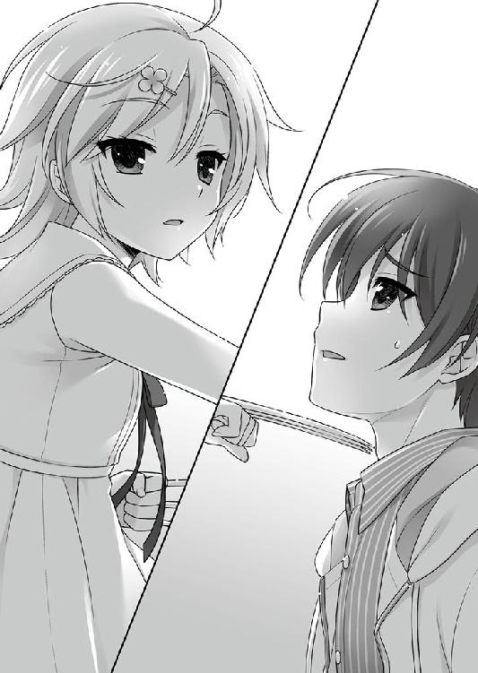
『本』と現実を同時に確認する処理よりも速く、アカハの指先が一條の喉元に掛かっていた。
「............止めてくれてありがとう。死ぬかと思った」
「死にます、本当に」
「死にたくないよ。これは、本当に」
「じゃあ、そこをどいて家に帰ってください。これは、アカハの『仕事』なんです」
「それはできない......」
ほとんど脅迫同然の忠告をされても、一條は震えながら首を横に振った。
「お兄さん、逃げてもいいです。そっちは『仕事』じゃないですから」
なのに、あと一押しで喉を貫く爪の前に立ちはだかっていた。
「悪いけど、そうもいかないんだ。今月はお店が忙しくって、オーナーがいないともの凄く困る。帰る時は、姉さんも一緒だ」
強がったところで、アカハには筒抜けだったろう。人間の感情が動くと脳の化学物質が作用する。人間を凌ぐｃＳの嗅覚は、恐怖の臭いを容易く感知できる。
「......どいてくれないなら、お兄さんも一緒にやらないといけません」
だから、アカハが遣るべきことは一つだ。
選択の余地はない、筈なのに。
アカハは、ほんの数ミリ指先を押し込むだけの行為に待ったを掛ける。
「その人は、お兄さんの何ですか」
「──家族だよ」
一緒に過ごした時間も、積み重ねてきたやり取りも、ほとんど消えてしまったけれど、それでも一條が選ぶとすれば、やはりその言葉だった。
アカハの瞳が、
「命が惜しくないのか？」
そう告げていた。
一條は行動で応えた。惜しいから、諦めずに考え続けた。
しかし──
この状況を何とかできるか否か。
そこに不確定という一縷の希望は持ち込めない。『本』に「選択視が未だに記されない」からだ。今の段階で選択をしても意味はないのだと、明白に告げている。
（まだ条件が揃ってない、だけだ......）
だが、それは、ここが「途中」だという意味でもある。
最後に待っているのが、明るい未来か、『１４』か。
いずれであれ。その瞬間には、選択視が著かれて教えてくれる。
即座に命を落としたりしないと解っているから、ほんの少しだけ大胆に振る舞える。
いずれ来る一瞬の為に、できる限りを思考する。
そこへ。
「叔美ちゃん、どっちなのかしらん！」
「こっちにいる！ コソ泥かも！ きゃぁ～怖い!!」
人気の無かった街路が途端に騒がしくなる。
姿を消していた叔美が率いてきたのは、おカマダさんとそのカラオケスナック『蒲田』に勤める「レディース」たちだ。
バットやすりこぎやオタマを手に手に駆けつけた、青白い髭剃り跡とスネ毛ボウボウの厳ついレディースたちが、今日に限っては天使の軍団に見えた。
「......あの人たちも、家族ですか？」
「え......それは流石にっ......ていうか、それだけは止めて下さいお願いします！」
血の涙を流しそうな慟哭は、あっさりスルーされた。
「......目立ってはダメと言われていますので、次にします」
余韻もなく踵を返して、髪がなびいたと思った瞬間には、アカハは民家の上に跳躍して姿を消した。華奢な印象からは想像もできないほどの敏捷さだ。小槌の浜で別れた時と何も変わらなかった面影が、残像のように一條の視野に残った。
「一條、生きてるンだな!?」
「おい、大丈夫か、一條！」
叔美と碧流が、すぐ近くで同時に叫ぶ。緊張が途切れたせいか膝が抜けて落ちかけたが、姉が支えてくれていた。
先ほどまで顔色一つ変えなかった碧流が、慌てふためいているのに驚く。
「......下手に動けなかった。ヤツがお前に襲い掛かるかもしれなかったから。それにしても......いつも言ってるだろう、無茶をするなと」
「アタシのおかげで、アカハがいっちまったンだから、感謝しろよ」
事情を知らないレディースたちは、消えたアカハの居た辺りを指差して、ああでもないこうでもないと騒いでいた。今回は、厳つすぎる彼女たちに窮地を救われた。やはり、人は石垣、窮地を救うご近所付き合いだ。
「叔美、お前が余計なことを吹き込んだのか？ せっかく一條には秘密にしてたのに、これでは台無しじゃないか！」
「──待って、姉さん」
叔美に食って掛かろうとした碧流を、一條が引き攣った顔で呼び止める。
「秘密にしてたって......何それ？ 名跡の件で懲りたと思ったのに、まだ隠し事を？」
「あ、いや、その、それは......」
「......アタシは知らねーからな」
家に帰ってから、座敷に正座させて、お説教した。
小さく薄暗く、清潔なのに奇妙な猥雑さのある部屋だ。
奥志麻の都心から外れた公道沿いにある、ホテルの一室。リビングのスペースの大半を占める、けばけばしい原色で自己主張激しい丸ベッドを、アロハシャツのミスターＰがだらしなく寝そべって占領していた。
「ああ、そうさ、素敵すぎて困っちゃうね！ 何年経っても変わり映えのしない土地、人の疎らな街並み、どこにでもある山と海！ いつまでも田舎くさくて飽き飽きしちゃうＹＯ。僕は都会が似合う男だからね！」
スマホ片手に、見事な英語を捲し立てる。通話先は上役なのに、馴れ馴れしさに遠慮がない。何が可笑しいのか、時々ひゃははははと笑い転げた。
男には、おかしな性癖が幾つもあった。
この手のファッションホテルに泊まっているのも、その一つ。まともな人間は一人で利用したりしない、いかがわしい施設なのを意にも介さない。
ミスターＰの表向きの肩書きは、民間警備会社の代表取締役。もっとまともな宿泊施設を幾らでも使える身分である。それなのに、独特の経済観念や倹約の信念ではなく、ただひたすら無頓着なのだ。
『相変わらずだな、君という男は』
馴れているのか、通話相手の重厚な声には、不作法で気分を害した様子もなかった。幾度となく親切という名の忠告で無駄骨を折り、遂に諦めてしまっただけかもしれないが。
『ＣＨＩＳＡＴＯ Ｓｅｃｕｒｉｔｙ Ｓｅｒｖｉｃｅ』──
自らをプレジデントと称する男は、略して『ＣＳＳ』と呼ばれる、米国籍の小さな会社で代表を務めている。といっても、彼は会社の為に１セントも出資していない。
ＣＳＳは、とあるグループに所属していた。
彼の会社は、金融、エネルギー、食品、製薬、メディア、エトセトラ......巨大な複合産業体で構成された彼らが、このホテルとはまた別の種類の「いかがわしい」仕事を担わせる為に作ったのだ。
彼らは、自分たちの都合の良いものだけを与え、自分たちに都合の良いものだけを奪い続ける為だけに存在した。
始まりには善意があったのかもしれないが、世の中の多くがそうであるように、一端動き出すと最初の動機はキレイサッパリ忘れ去られてしまう。
車輪のように、回り続けることそのものがリアルなパワーを生み出す。資本は膨れ上がり、知識と経験は蓄えられ、倫理と良心は不法投棄される。太古の恐竜の如く、際限なく成長する怪物は、自分を維持する為に、更に膨大な血と金と労働を浪費する。
怪物の食卓に料理を捧げる為に、昔からＣＳＳのような看板は、数え切れないほど立て掛けられては廃棄されてきた。ミスターＰのような人間も、数え切れないほどいた。
『──それで、〝蜂〟を行かせたのかね？』
「そーのとおーりだＹＯ！ 僕の、大事な娘を、ね!!」
何十代目か、あるいは何百代目かもしれない由緒正しい「仕事」を受け継いだ男は、オモチャを自慢する子供みたいに、スマホを握ったまま、ダブルサイズよりも広いベッドを右に左に転げ回る。
『なるほど、確かに君のアレは優秀だ。ｃＳ、と言ったかな』
ｃＳは、ミスターＰがプレゼンした便利な「道具」だ。
ＣＳＳのような会社では、特に役立つ。人間以上の力と人間にはない能力を持ち、買い物からゴミ掃除まで、何でも言いつけ通りにこなす、忠実で恐るべき歯車。まだまだ試作なので問題は非常に多いが、ミスターＰにとっては些細な事なので、気にもしていない。
『──しかし、前回の一件では、しくじったのではなかったかね？』
抑えた声には少なくない皮肉と苛立ちが含まれていたが、核シェルター並に頑丈な男の面の皮には、引っ掻き傷一つ入らなかった。
「なーにを過ぎたことに拘ってるんだい？ 人間、振り向いちゃダメダメ！ 前を向いて進まなくちゃ！」
『......君の場合、少しは後ろを向け、という気もするな』
「いやあ、誉められると困るＹＯ！」
あははは、とミスターＰは屈託なく笑い、相手からは何もかも諦めたような溜息が届く。
『それよりも、計画はどうなっている？ 君が、いつもの調子で、お偉方を煙に巻いて説き伏せたんだ。そろそろ成果は出たかね？』
「もっちろん！ 順調だＹＯ！ 知ってるだろ？ 僕は、いつ如何なる時も順調なのさ」
『まったく......恐ろしい男だな、君は。よくもまあ、毎度平気な顔でいられると思うね。前回も、私だって寒気がする代物に手を出した。あんな、死神も同然の──』
「ノンノン！ 僕は優しい男だよ！ あんなモノを放置しておくと、迷惑千万だろう？ 回収して、キチンと箱に入れてしまっておく。世の為人の為！ 素晴らしい奉仕精神！ これこそ、大人の仕事だね！ 表彰して欲しいぐらいだＹＯ！」
ピシャリと両手を合わせて、箱を閉じるジェスチャーをした。
ハイになって更に本題から逸れていこうとする男を、通話相手は抑えた声で宥め賺す。
『いいから、報告をしろ。どうなっている？ 週末には、前妻と娘の養育費の件で会わなければならないんだ。これ以上、私の胃に負担を掛けないで貰いたい』
「離婚したんだから、『元』嫁じゃないか？」
『余計なことにだけ、拘るな！ それよりも！ 本当に順調なんだろうな!?』
「まかせておきたまえ！」
『浮き世の泡も、君にとっては気楽な遊びか。期待しているよ』
これ以上は無駄と悟ったのか、相手が通話を一方的に切った。
「気の短い男だねえ」
自分が怒らせたとは、露ほども思わない。音が失せ、静かになった室内が寂しくなり、傍にあったテレビのリモコンへひょいと手を伸ばした。
手に取る寸前で、来訪者に気がついた。
確かに男しか居なかった部屋の中に、いつの間にか小さな影が、主人に声を掛けて貰えるのを待つ飼い犬みたいにひっそりと立っていた。
「Ｏｈ！ 戻ったね、アカハ！ 待ってたＹＯ！ やっぱり一人じゃ寂しくてね!! ところで、成功したかな？」
アカハは姿勢を崩さず、問われたことにだけ答える。
「失敗です」
「オーノー!! 僕の自慢の娘が、二度も失敗しただって!!」
頭を抱えて大げさに仰け反りすぎてバランスを崩し、ベッドの上にバタリと倒れた。そのまましばらく呻きながらゴロゴロ転がっていたが、すぐに飽きて仰向けに寝転がる。
アカハが「千里碧流」を狙ったのは、二度目だ。
全ては、この男が仕組んだ──と言えるかどうかは怪しい。
かの「グループ」は、いつものようにミスターＰのプレゼンを受けて、判断をし、会議をし、上申をし、また会議をし、決定を下し、決済をし、いつもの如く実務を任せた。
巨大な組織の内部意思は、複雑極まりない迷路だが、目指すところは簡潔だ。
利益の為に、成長の為に、拡大の為に、よりよき未来の為に。
その何もかもが、ミスターＰにはどうでもよかった。
彼は杜撰で、いい加減な男だった。目的はあっても予定はない。計画は立てたが、最初から穴だらけ。その日その時を愉しむ為に、行き当たりばったりに、世間も他者も企業も振り回していくのが、ミスターＰという男のはた迷惑な生き方なのだ。
二度に渡って碧流を狙ったのにも、彼なりの「目的」はあったが、おおよそ思いつきに近い。思いつきで襲われたのだと碧流が知ったら、果たしてどう思うだろう。
「標的を捕捉しましたが、人が集まってしまったので断念しました。その後、『アンブロシウス』に逃げ込まれました」
「そりゃ、仕方がないね。マーリンの泉は、以前の主のせいで、何重にも守られていて手が出せないＹＯ！」
立ち直りが早いのか、瞳をキラキラさせながら、猥雑ベッドの上に演説でもするようにひょこりと立った。見た目の軽さと相まって、どこをどう取ってもイカレていた。
恐ろしいことに、何度も失敗したというのに、男は自分の成功をこれっぽっちも疑っていない。必ず成功すると確信している。
「なぁに、気にすることはない。失敗というのはね、即ち過程なのさ。人類は空を飛び、月に辿り着き、火星にも土星にも外宇宙の小惑星にだって手を伸ばす。物事には順番があるんだよ。空も飛べないのに火星には辿り着けない。なんて、分かり易い！ つまりだ、諦めないで前進している限り、いつかはどんな夢だって叶うんだ！ いいかい、アカハ？ まだ成功に辿り着けないなら、もう少し前に進めばいいんだＹＯ！」
「イエス、プレジデント」
淀みのないアカハの返事に、ミスターＰは満足そうに頷いた。
「じゃあ、早速次へ行ってみようか。早い方がいいな。明日、よろしくね！」
好き勝手喋った後、電池の切れた子供のように、ミスターＰは無邪気に眠ってしまった。
ようやく静かになった部屋で、アカハは独り起きたまま、ソファの上で丸くなる。
次こそ、与えられた仕事を完遂しなければならない。
それがｃＳの存在意義であり、迷うことなど一ミクロンもない。
「アカハは、最も新しいｃＳです」
なのに──
少年の顔を想い出してしまった。
どうして、爪を止めてしまったのか？
どうして、顔を見せたりせずに、さっさと標的を始末しなかったのか？
理屈に合わない。胸のどこかで、油の切れた歯車が軋んでいる。
余計な真似をしなければ、一つの矛盾もなく解ける公式のように、仕事は完璧に終わっていただろう。
指先をほんの数センチ動かすだけ──のことが、できなかったのだ。
貰ったういろうは、とっくに全部食べてしまった。アカハにとって、プレジデント以外の人間から何かを貰う、という経験は初めてのことだった。
命を、名前を、存在理由を、仕事を、アカハの全てを与えてくれたプレジデントと、行きずりの自分を掬ってくれた少年。
二人がどう違うのか？ アカハには、上手く言葉にできない。
グルグルと同じところを回り続ける思考の回転木馬。答えの出そうにない問いを、それ以上考えるのは止めてしまった。
失敗の理由を問い詰められなかったことに、ホッと胸を撫で下ろしたが、元々プレジデントはあらゆることに無頓着で、心配はほぼ杞憂だった。
「──明日こそは、殺します」
言い聞かせるように、そう呟いた。
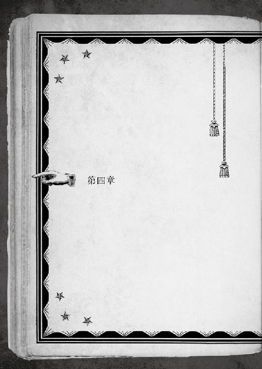
山の斜面のような、急な石段だった。と言うよりも、実際に山の斜面なのだ。
Ｔ県奥志麻市は、中央に座す美山をドーナツ状に取り囲む造りなので、此処のように表通りからすぐの場所にも、都市のエアポケットめいた風景が出現する。
例えばそれは奥志麻都心部の片隅、もう少し正確に言えば奥志麻駅から山の方向へ進み、古い寺や墓地の密集した一角を抜けたその奥の奥。
滝之尾山、と呼ばれている、美山の東嶺にあたる低い山だ。
「石段の入口にあったのが三日神社。かつてこの辺りを領していた大名も参拝したという由緒正しい社だ。境内の近くには、金竜泉という湧き水も出ている。その昔、恐るべき鬼がこの国に現れた。山に棲む金色の三首竜がそれを退治したものの、自らも傷ついて横たえた身が滝になったと伝えられている」
先頭を行く碧流は、闊達に石階段を上っていく。一條と叔美がそれに続いた。
石段は急な登りなのに簡素な造りで、手摺りもない。普段からおいそれと人の踏み込まない辺りに響くのは、彼らの声と跫音を除けば小さな滝の水音だけだ。
「読めないよ、そんな漢字の名前。おまけに、金色の竜とか......昔話のクセに、やたらとハイカラだ」
一條は、今登ってきた場所を見下ろした。山へ踏み込んでいるせいか、木々が鬱蒼と茂り、さっき通り過ぎたばかりの神社の大きな鳥居も見えなくなっている。
「鬼は、キジと芋虫を引き連れて襲い掛かったそうだが......」
「芋虫!? そこは、せめて犬じゃないの？」
「昔話の設定に文句を言うな」
無駄口を叩いていると、石段の終わりが見え始めた。
当然ながら、奥志麻昔話を聞かされる為に、こんな場所までやって来たのではない。
「本当に、こんな所にあるの、その......」
「〝ヒミツヘーキ〟だっけ？ また、オニチクが思いつきで喋ってんじゃねーの？」
一條が恥ずかしくて言い淀んだ言葉を、後ろに続く叔美が容赦なく口にする。叔美は素直な少女だった。
「あるのではない。いるのだ!!」
碧流特有の、一見意味がありそうなドヤ顔が、二人の不安を弥が上にも掻き立てた。
アカハ襲来のすぐ後だ。いつ何時また来るともしれないｃＳの驚異をどうするべきか、千里家では緊急家族会議が招集された。が、三人と一冊が揃ってあーでもないこーでもないと角突き合わせたものの、文殊の知恵どころかロクな案は出てこなかった。
無理もない。相手はｃＳ。まともな人間に対抗する術があるだろうか。一條たちが「まとも」であるかどうかはさておくとして。
しかし、ないでは済まないのが現実だ。数ヶ月前のように、ポケットの中から万に一つの幸運を取り出してみせねばならない。
不毛なだけの時間が過ぎた。一條も叔美も手品師や錬金術師ではなかった。話し合いが八つ当たりのし合いになるまで、あと半歩で足りた。
行き詰まり掛けた最後に、意外な解答を持ち出したのは、当事者の碧流だった。
「ちっ......こうなれば、秘密兵器を使うしかないな」
「「ひ・み・つ・へ・い・き？」」
一方はあからさまにイヤそうに、一方は好奇心で瞳を輝かせながら、日常生活ではあまり必要としない奇天烈ワードを繰り返した。
思い立ったが吉日と、翌日、朝早くから、満全の笑みを浮かべる碧流に連れ出された。
「それにしても、数ヶ月前にも死にかけて、今回また、か......。普通の夏休みどころか、普通の人生も遠くなったな......」
自由人の叔美はともかく、一條は新学期早々、またしても学校を休む羽目になってしまったのが心苦しい。クラスで隣の席の真田に、ノートを貸して貰う話をつけていた。「お姉ちゃんを紹介してくれ」という台詞を、そのまま伝えるのと引き替えで。
──..................何度も警告したからな。
条件の変更を善意で申し入れたが、頑として譲らなかった。紹介した後にどんな結末が待っているのか、密かな涙を禁じ得ない。人間は、外見に惑わされる生き物だ。
「誰が思いつきだ、私の深謀遠慮が解らないようだな、居候」
「アタシは〝イソウロウ〟じゃなくて働いてんだよ、めっちゃブラックな店で」
物思いに耽っている間に、経済の暴力を振りかざす姉とおカマダ仕込みの付け焼き刃で迎え撃つ叔美が、危険なロケーションで揉めだした。
ほとんど崖のように切り立った急斜面の石段は、踏み外せば命に関わりかねない。
「待って待って、二人とも！ こんな場所で揉み合ったら落ちるから!!」
「......すまない、一條。昨日から、私も気が立っているようだ。ま、そこの無駄飯喰らいが落ちたら落ちたで、月々の食費が安上がりになって万々歳だが」
「つーか、よくわからねーけど、狙われてンのは、そこのオニチクだろ。パック詰めにして届けてやったら、チビも満足して襲ってこなくなるぞ！」
「くくく、そうか、あの小娘を潰す手がもう一つあったな。次にあのｃＳが襲ってきたら、お前が首輪外して突っ込むというのはどうだ！ 名案だな、私!!」
自重と限度を知らない二人が、互いの傷口を抉り合いながら、パピヨン・ドッグとベローシファカ・モンキーのように揉み合う。
「姉さん、僕はアカハを助けたいんだ」
溜息を吐きながら、昨夜も繰り返した思いの丈をもう一度告白する。
「姉さんは守る。でも、それで前みたいに──」
叔美を連れ去ろうとしたコウモリ男ことヨブスは、元相棒に胸を貫かれて海の藻屑と化した。おそらく......生きてはいないだろう。元相方も少し後に姿を消した。
敵だったから、仕方がなかったのかもしれない。
選択視の選び方一つ違っていれば、立場は逆になっていたかもしれない。
『選択』の結果、残った事実は、一條の中で今も黒く燻っている。
「──あの小娘は、お前に『助けてくれ』とか巫山戯たことを抜かしたのか？」
「そうじゃない。でも......」
「弟よ、お前は優しい。それは、一條の二七の美点の一つだ。が、助けを求めてもいない相手を助けようとするのは、ただの押しつけだ」
じゃれ合いながら、ぞんざいに投げつけられた言葉が鋭利に突き刺さる。
無意識に目を逸らしていた自分の傲慢さを突きつけられて、何も言い返せなかった。善意を装っている分、確信している身勝手よりも、きっとタチが悪い。
アカハを、何から助けたいのか？
突き詰めてそれを言葉にすることも出来なかった。
それでも──別れ際、親子連れのようなのに独りぼっちの影が遠ざかっていく姿を見た時。
このままにはしたくないと思った。誰一人、アカハ自身だって欲してないかもしれない手を、差し出そうと決めたのだ。
「ついでに言えば、私が両手を挙げて降参しても、あの小娘は止まらないぞ」
「......道理を説くなら、ナイフじゃなくて持つ手の方にしろ？」
「違う。手を伸ばすだけで何もかも手に入る時に、ワザワザ獲物と話し合って妥協する猟師はいない」
それは、「普通」という上っ面を剥いだ世の中の、嘘偽りない姿でもある。
力であれ、立場であれ、裏付けがなければ、選ぶのではなく選ばされるしかない。
「お前は、世の中を渡るしたたかさが足りていない。勝ち方というものを教えてやろう。最初に、徹底的に、二度と歯向かう気がなくなるまでに、叩きのめすこと」
「アタシも、それに関してはオニチクに賛成......だけど、テメーは非情さしかねえンだよ。ちったあ〝ジューギョーイン〟への優しさを身につけろ!!」
「私の女神の如き優しさは、一條への在庫分だけで品切れだ!!」
狭い階段でじゃれる二人が、とてつもなく危なっかしい。
「とにかく、小金とはいえ投資していたのは、こんな事態もあろうかと想定してのこと。目には目を、毒には毒を。明日には、あのチビの始末をつけて、万々歳だ」
「いや、だから......姉さん、僕の意見、聞いてる？」
勿論、碧流は聞いていなかった。
「私を信じろ。強引に、大胆に、確実に──カタをつけてやる」
一條たちが揉み合いながら石段を登り切ると、そこは意外にも開けた土地だった。
「ここには、滅多に人は来ない。近所の熱心なお年寄りが、たまに参拝しにくる程度だ」
碧流の説明そのまま、下の神社と比べても閑散としている。
本当に、こんな場所に、姉の言うような代物があるのか？
首を傾げるよりも先に、一條の呼吸が止まった。何の前触れもなく唐突に、『本』が自動的に目の前に現れたからだ。
３４９─■■■■
キミが辿り着いたのは、山と言っても浅い場所だというのに、奥地にでも迷い込んでしまったような陰気で枯れた空気の強い場所だ。ここには、美山から流れてくる滝の水源と、納屋か倉庫のような幾つかの建物、鳥居付きの小さな祠がある。
その祠には、賽銭箱とお供え物がされていた。こんな場所にもお参りする、奇特な人間がいるらしい。他には、これといって目立つものはない。
足元は、アスファルトではなく剥き出しの土。キミは爪先で引っ掻いて確認してみるが、やはり只の地面、見たまま野ざらしの荒れ地だろう。
ここで出来ることは、そう多くはなさそうだ。
カルガモの子供のように碧流の後ろについていくのなら／５６７─■■■■ へ行け
苦しい時ぐらい神に頼もうと社にお参りしていくのなら／４１１─■■■■ へ行け
──まさか、もう来たのか!?
感情では拒んでも、反射的に身体は動き、誰よりも早く身構えた。
唇を噛み締める一條に、耳に痛い静寂だけが響く。どこか遠くで、小馬鹿にするようなカラスの声が谺する。
「.....................えーと」
落ち着いて、改めてＰＧを熟読熟考する。内容や示された選択視から察するに、せっぱ詰まった事態ではなさそうだ。
「違うのか......驚かせるなって」
肩の力を抜きながらボヤく一條の様子を、叔美は逃さずチェックしていた。
「また出たンだな？」
「叔美は大雑把なのに、結構目聡いね」
それが、彼女の生き方なのだろう。
「おう、ほめろほめろ」
日本語不十分な叔美は鼻高々だが、ちっとも誉めてはいない。
優しさと心遣いで沈黙を選びながら、五感の全てで周囲へ警戒を張り巡らせる。これもまた生き方。『本』が自動的に現れて、一條に何かを告げようとする時の行動も、すっかり身体に馴染んでしまっていた。
ここへ連れてきた張本人はというと、こちらの声は聞こえているのだろうが、会話には混じってこない。キョロキョロと周囲の木々や山々に視線を走らせ、何かに集中していた。どうやら、秘密兵器とやらが見つからないらしい。
元々姉の話は勢い任せで胡散臭かったが、これで「秘密兵器」とやらが全く役に立たないと、一條たちは目出度く万策尽きて、再び不毛な会議を再開しなければならなくなる。
──最近、こういうことが多いな......。
ちょっとした段差から落ちただけで一機失ってしまう困難レベルの高い人生に、言い尽くせない悲哀を感じてしまった。
「もっと普通がいいのに......。この選択視も悲しいよな」
下山後の無駄骨折りの心配よりも、今この場での『選択』だ。端的に言えば、神頼みするか否かの二択で人生が分岐しますよ、と結構酷い。
叔美と出逢う前の自分なら、歎きの一つも入れただろう。しかし、人間は経験で成長する。過酷なイベントの積み重ねは、一條を諦観にも似た覚悟で、逞しく図太くした。朝食を食べる食べないで、命に関わることもある。そんな身も蓋もなさこそ人生だ。
一條は、正月を祝い、盆には墓参りをし、クリスマスにはお目出度い気分になる、過去を失っていても人並みな人間だ。苦しい時には祈っても、決して信心深くはない。自分にしか見えない『本』が在るように、神様も見えないだけで何処かにいるのかもしれないが、祈ったぐらいでこの先の自分の人生がマシになるとは思えなかった。
それはそれとして。
「姉さん、ちょっとお参りしていこう」
「珍しいな。神頼みか？ ふむ、物は試しと言うしな。悪くないアイディアかもしれん」
一條以上に神頼みには縁のない碧流は、どういう風の吹き回しか、ノリノリだ。
「また『本』なのか？ 何か面倒なアレじゃねーのか？」
叔美は、知恵の輪にチャレンジするような顰めっ面で確認する。
「今回は、なるべく安全そうな方を選んだよ」
決断を終えると、ページは独りでに捲れていく。
二人を連れて鳥居を潜り、小さな祠に近づいて、丁寧に手を合わ──
４１１─■■■■
そう、いつの時代いつの世も、困った時は神頼み。これは万国共通の鉄則だ。
キミが小さな祠の前に立ち、神に縋ろうとしたその瞬間──数え切れ■■屈強な兵どもを血祭りにあげてきたブービートラップの如く、何かが足に絡みつき、キミは鳥居から宙づ■■された。
「な、なんだこれーーーー」
どうやら、罠だ。キミは見事に引っ掛かっ■しまったらしい。
「「いちじょー!!」」
のこのことキミの後■をついて来た叔美と碧流の二人も、キミとお揃■で逆さ吊りになる。キミの選択のせいで被害は拡大しているぞ。これは後が怖いな。
もっとも、後のことは、この場を潜り■けてからだが。
「おいこら、安全じゃねーのか!? 〝そしょー〟すンぞ！」
神頼みがハズレとはどういう了見か、と空中で叔美が喚くのもロクに耳には入らない。
見間違えることのない文字化けで黒く潰れた『本』の記述が、逃げ場のない最悪の状況で、最悪の結論を告げていた。
足に絡みついた糸を解く■は、困難だ。暴れたところで落ちないという点では、しっかりしている。キミは、以前にも同じような目に遭ったことはなかったか。
「あれ？ これって──」
一條が習性化した動作で『本』を閉じると、待つほどもなく、山の斜面から何かが現れた。これが『罠』である以上、仕掛けた者がいる。カサカサと網に掛かった憐れな虫ケラどもに舌舐めずりするように近づいてくるのは、身長一六〇センチほどの女だ。
予想通りというべきか、よりにもよってとするべきか、一條の見知った顔だった。
「..................ウシオ、さん？」
「アナタたちがどうして罠に掛かってるの？ 私の晩ご飯をちょくちょく盗ってたのはアナタたちだったのね？ そこの小っこいのなら如何にもやりそうだものね」
水源があるから身綺麗なものの、どう見ても野宿生活満喫中という外見の顔見知りな美少女に、一條は流石にバツが悪くて、そっと目を逸らした。
「ンだと、もう、そンなことやってねーぞ!!」
ミノムシ状態で暴れる叔美と対照的に、碧流はヤケに落ち着き払ってた。宙づりだが。
「見ろ、これが私の秘密兵器だ」
「......ああ、なるほどね」
おおよそ予想がついてしまった身も蓋もない結論を、碧流が満天下に詳らかにした。
罠を仕掛けていたのは、かつて叔美を狙った蜘蛛のｃＳ、ウシオの成れの果てだ。
道具として造られるｃＳは、不良品と判れば処分される。先だっての任務に失敗したウシオには、企業へ帰還して廃棄か、残留して逃亡の日々かの選択が迫られた。
無理に生き続ける理由はなかったが、仕事中に（よりにもよって相棒に裏切られて）後ろから胸をぶち抜かれ、大層痛くて苦しい目に遭った。重傷でこれだと、死ぬのは輪を掛けて大変そうだと、戻るのがイヤになったのだ。
野良ｃＳを選択したものの、ウシオにとって、いわゆる「普通」の社会生活は艱難辛苦に充ちていた。超人であっても国籍も戸籍も持たない彼女が、見ず知らずの異国に裸一貫で放り出されれば、行き着く先は犯罪者か巡回食料回収者と相場は決まっている。
四体目のｃＳであるウシオは、自分のことをあまりを深く考えたことはない。過去の記憶に振り回されたヤツもいたが、彼女に人間だった頃の記憶はなかったので気楽だった。
何もかもが過去形だ。
死に行く者を留めることで造られるｃＳは、その始まりから道具である。
一体一種。個々に全く異なる力を与えられ、性能では人間を軽く凌ぎながら、生きてはいないから夢を見ることはない。死んではいないから止まることもない。
彼らをハリウッド映画でも有名なゾンビの一種だと嘲笑した関係者もいた。顔色の悪いオートマティック死体と違って、生命活動は行われるのが困りものだ。食事もすれば眠りもする。なので、いつまでも無頓着ではおられない。
空きっ腹を抱えて奥志麻に棲み着くことになった家無き子が辿り着いたのは、この三日神社の背後にある滝之尾山の祠だった。
小高い丘の上にある祠には、石段を登らなくては辿り着けず、ある時期を除いて人目にもつきにくい。水場にも不自由せず、近くには墓地もあり、ウシオにとって良物件だったのだ。
やってきた騒がしい連中が見知った顔だと判って、ウシオは露骨に嫌そうな表情を浮かべたが、姿を隠すのはやめた。彼女たちが、信心深い参拝者でないのは一目瞭然だ。
「何か用？ 私の方には別にないわ」
「えっと、それは......」
「待て。この女には私が話そう」
申し訳なさそうに、ここまで来た経緯を説明しようとした一條を制して、碧流が大きな顔をする。
「......話そう、じゃねーよ。オマエ以外、誰がわかンだよ」
そもそも「目的」があって、一條たちをここまで連れてきたのは碧流だ。
「その前に、私たちを降ろせ。逆さのままだと話しづらい。だいたい、どうしてこんな罠を仕掛けている!? 見ず知らずのお年寄りが引っ掛かったらどうするつもりだ」
「ここは滅多に人が来ないから大丈夫。それより、私の貴重な『食料』を、時々ギッてく不届き者がいるのよ。これは、ソイツら用の罠。それはさておき、話を聞いてからでないと糸は解かない。アナタたちの話なんて、どうせロクでもないのに決まってるから」
「......野良猫でもいるンじゃねーのか」
「奥志麻の山中には、タヌキも出るらしいよ」
「いンのか！ イチジョー、アタシも昔は飼ってたぞ」
感心する叔美の反応が面白くて、つい、久留美から強引に聞かされた生半可の知識を披露する。逆さ吊りのままで。
「昔から縁が深いらしくてね。奥志麻で唯一無二の賑やかさを誇る奥志麻駅周辺でも、雑居ビルや住宅街の隙間に、付近の風景から浮いた古びた祠が幾つも残されてるんだって。都心部だけに限っても十数ヵ所。『アンブロシウス』の近くにもあるよ。それは、かつてこの土地を席巻し、二派に分かれて血で血を洗う抗争を繰り広げたというフェアリー・タヌキたちを奉った祠なんだとか」
「フェアリー・タヌキって、なンだ？」
「......さあ」
生半可なので、ツッコまれると弱い。一條たちが現実から目を背けている間にも、碧流たちは対峙していた。
「私から受けた数々の恩を忘れたか！ 死にかけの貴様に手当をしてやったのも私。行く当てのないところで食事を恵んでやったのも私。金銭的支援もしてやったのも私。隠れ家を紹介してやったのも、誰在ろう私だ！」
「確かに、命を救われたし、多少の援助も受けたけど、それは先に手助けした分でイーブンの筈」
全方位にガードを固めているウシオの態度に、一條は素直に感じ入った。碧流と深く関わり合えば合うほど、こういう感じになるんだよね、と。
──真田、お前ももうすぐ理解できるよ......きっと......。
「おい！ なンでもいいから、頭に血が上る前に何とかしろ！」
逆さの従業員にせっつかれて、碧流は、利害と怒りを秤に掛けた。
つまり、叔美はともかく一條も酷い目に遭っている。やむ得ない、と露骨に顔に書いたまま、本題を切り出す。
「いいか、よく聞け。昨日、貴様の妹が襲ってきて、我々は大変迷惑した。役立たずの貴様に小金をくれて遣ったのは──こんな日の為だ。早速、役に立って貰うぞ」
「全然わかンねーだろ」
もっともなツッコミに、碧流は口をへの字に曲げた。
「......時給減らすぞ」
「アタシは嘘いってねーだろ!!?」
「真実がいつの世も正義とは、決まっていないのだ。特に大人になって社会に出ると」
「姉さん、それよりも説明を。マジで、もう少し分かり易く」
「それでは、ごきげんよう......」
内輪揉めを尻目に、ウシオはさっさと寝床に逃げ込もうとした。
「いや、待って、ウシオさん！ 逃げないで！ その前に、そろそろ降ろして下さい、お願いします！」
見えない糸で吊されていた身体が、ふっつりと支えを失ったように落下する。
叔美は、猫みたいな軽い身のこなしで身体を捻って、見事に両手足から落ちる。隣の碧流も足から着地したが、一條はしっかり顔から落ちた。
「死ぬ、今死ぬ、先に死ぬ！ 僕の顔がとても痛いです!!」
「顔打ったぐらいじゃ死なねーって」
ううう、と涙目で唸りながら、一條は立ち上がった。正直、人気のない場所でコントをしてる時間が惜しい。
「頼みがあって、ここに来ました」
「それなら断った」
本当ににべもなく背中を向かれた。
「あのー、せめて話ぐらい聞いてみようかなーとか、思いません？」
「思わない」
「ふふん、甘いな」
と、腕を組んで上から目線で唇を吊り上げたのは碧流だ。
「甘いというと、姉さん」
「交渉の遣り方だ。こういう時には、こうするんだ──お前に首輪と鎖をくれてやる。犬になって、あの化け物蜂を始末しろ」
あんまりだ、という顔の一條を余所に、あにはからんやウシオが足を止めた。
「話だけ......聞いてあげる」
いつもながらトバしすぎで他人には分かり難い碧流の話を、一條がフォローしながら一通りの事情説明が終わるまで、ウシオは一言も挟まず、ぺたりと座り込んで聞いていた。
完全に巻き込まれたというのに、意外と真摯なのか。
「新作のｃＳね。私の知らないヤツよ。そいつがアナタを狙った、と」
言うまでもなく、アカハを指してのことだ。
「そこの居候ではなく私を狙ったのは少々疑問だが、碧流としてならともかく、千里家の名跡としては、狙われる理由の一〇や二〇の心当たりはある！」
凄いだろう、と言いたげに胸を反らした碧流に、一條が笑顔を引き攣らせる。
「............あの、姉さん、今ヒドい告白されたんだけど。もしかして、そんなヤバいものを譲ろうとかしてた？」
「あ、いや、そうだが、じゃない！ そうではなく......ち、違うんだ！」
身も世もなく取り乱す姉の姿に、名跡の相続について、まだ返事はしてなかったのが、ファインプレーだったのではと思わずにはおられない。
「ヒデーな、オニチク」
「う、うるさい！ それよりも......そう、私は、今回の犯人にも心当たりがある!!」
「それは？」
「決まっている、花々梨だ。あのアマ、目障りな私を始末しようと、金で刺客を雇ったに違いない。いずれ、しかるべき報いを与えてやる」
一條は、そろそろどうでもよくなってきたが、碧流は大真面目だ。
「でも、海でアイツも一緒に襲われてたぞ」
野良猫っぽい印象とは裏腹に、叔美は碧流と違う意味で真面目に取り組んでいた。
「自分が犯人であることを隠蔽する為の工作......という線で辻褄を合わせてみるのはどうだろう？ 取りあえず、犯人が決まればスッキリするしな。どう思う？」
「冤罪だよそれ!!」
自分の命が掛かっているのに、碧流はマイペース過ぎる。チタンワイヤー並のふてぶてしさは、頼りがいがあると言えなくもない。
「で、本題に戻ってもらっていいかしら？」
肘杖を突いた両手に顎をちょこんと乗せたウシオは、確実に他人事だというのに、取り組み方の真面目さでは一番だ。
「是非もないです、はい！」
「それで......私に何をしろというの？」
「毒には毒、ｃＳにはｃＳだ。お前の命は私が買おう。こういう時にこそ動かずして、役に立たずはいつ働く。諸共玉砕スピリットでも、私は一向に構わん」
「......僕は、スゴく構うんじゃないか思うけど、どうかな？」
普通でない窮地では無駄に頼れる姉の最大欠点は、相手の心を思いやるという精神に決定的に欠けていることだ。一年余りの長いとはいえない付き合いでも、一條はイヤと言うほど理解できていた。
人間を動かすのは、「利」だ。ウシオにとって、この案件を引き受けるメリットは、ほとんど皆無だろう。勝てば多少の報酬は得られるとしても、リスクとは到底釣り合わない。まして、善意の手助けを期待できる間柄を構築できているとも思えなかった。
「──わかった。引き受ける」
「「そうだろうそうだろ......ええっ!?」」
迷った様子もないウシオの返事に、一條と叔美が思わずハモる。碧流の、一方的な依頼のどこに、承諾する理由があったのか？ 何かの詐欺的手法ではあるまいか。
「ほら見ろ！ 私の人徳のなせる業だ」
姉は、確実に「ほら」の使い方を間違っていた。筋違いの解釈は聞き飛ばしながら、一條はウシオに詰め寄った。彼女の力があれば状況は打開できるだろう。喉から手が出るほど欲しい蜘蛛の糸を、しかし素直には喜べない。
筋が通っていないからだ。路地で行き倒れている見ず知らずの相手に無償でクリームパンを差し出すような怖いモノ知らずは、鏡を覗けばいなくもないが、それが世間の〝普通〟から大きくズレているという程度の自己認識は、一條にもある。
「......こっちから頼んでおいてなんだけど、間違いなくヤバい羽目になる。怪我なんてモノじゃなく、命懸けの危ない橋を渡るんだよ」
望む通りを選び取るには、「力」が必要だ。条件を満たせない選択視が現れないように、無力な手を伸ばしても、選ぶのではなく状況に『選択』させられる。
だからこそ──
一條がアカハを助けたくても、戦いそのものは避けられない。
今の状況は、ウシオとアカハを取引するということだ。世の中のどこにでも、在り来たりな取引の形。労働の対価のように、通貨のように。一つの命の代わりを別の命で購うなら、きっと釣り合いは取れるだろう。
「──そんなのは、納得できない」
突然湧き上がった激しい憤りに、一番途惑ったのは誰よりも一條自身だ。
燻っていたモノに火が点いたような感情の激発を、白い仮面じみた淡いウシオの表情と、透き通った瞳が他人事のように映している。
アカハと同じｃＳなのに、これまで彼女に、こんな感情を抱いたことはなかった。
「私はやりたいようにやる。アナタは関係ない」
「よくぞ言った。そうでなくてはな。では、今後の指示をする」
意を得たりと、碧流が自分と山を下りるよう命じ、ウシオはのそのそと準備をする。
一條は、突き放されたようで固まった。
「ちょっとだけ......わかるかな......」
「味方してくれる気になった理由が？」
自分の感情を持て余す少年に、叔美は瞬きもせずウシオを見つめたまま頷く。
「何もしないまま寝てるだけじゃあ、つまンないよ。死ンでるみたいなもンだ」
それが、かつての叔美自身を指しているのだと、一條には理解ってしまった。
奥志麻に来るまで、彼女はずっと独りだった。何者にも傷つけられない幸運と引き替えの「死」を振りまく、『１４』に憑かれた少女。
それは、どんなものからも「自由」だったということだ。人の間で悩むことも、日々の労働に身を粉にする必要もない、自分一人を生かし続ける以外の束縛からも解き放たれていた日々を、死んでいるのと同じだったと叔美は言い換える。
「あんま、うまく言えないけどな」
照れ隠しなのか、少女は歯を見せてニカリと笑う。
「叔美も、色々考えてるんだね」
「誉めンなよ......照れるぞ」
例えば、学校もなく一日中寝てられる生活が気楽でも、何かを越えなければ価値も喜びも見出せないのだと、拙く言葉に出来てしまう叔美がとても眩しかった。
「でも、彼女はｃＳだよ!?」
「ｃＳでも、欲しいンじゃねーの？ 何だっけ......そうだ、〝ヤリガイ〟ってヤツが」
「だから............なのかな？」
「ま、他人がナニ考えてるかなんて、結局わかンねーけど」
ようやく、ウシオの選択を受け入れられたような気がした。
この先にあるだろう『結果』へ、自分の覚悟を決めるように、拳を握り締める。
そして──最終確認のように、改めて自動的に『本』が現れた。
５１３─■■■■
敢えて言おう、彼の者は「武器」であると!!
この場面において、キミは真剣に考える必要性が生まれてしまった。武器が闘争を呼ぶのか、闘争が武器を生み出すのか。必要は発明の母か、卵よりも鶏が先なのか。
古代の賢者たちは、相反する言葉を幾つも残している。キミが偉大な先人の迷った答えを出せるとは思えないが、たまには頭を使うのも脳の老化を防ぐ為にはいいだろう。
武器をその手にするのであれば／６２７─■■■■ へ行け
何故人は無益な争いを繰り返すのかを思考するなら／４８９─■■■■ へ行け
また妙なことを著いだしたと呆れてから、選択視を選んで『本』を閉じる。
「ウシオさん」
さっきとは違う、確かな力を込めて少女の名前を呼び掛ける。ウシオは何も変わりなく、ｃＳ特有の希薄な存在感を纏ったまま振り返った。
「力を貸してくれて、ありがとうございます」
一條が差し出した右手を、ウシオは意味不明そうに見る。
「別に。今回も、私の都合に過ぎないから」
「でも、一つだけ言っておきたいことがあります。僕は、アカハ......新しいｃＳの女の子を、死なせるつもりはありませんから」
ウシオが選んだのなら、それがどんな道であろうとも口は出せない。
一條も同じ失敗を繰り返さないように、最善を尽くして『選ぶ』だけだ。
「一條！ お前はまだそんな甘っちょろいことを!!」
「アタシはオマエの言ってること、わからなくはないけど......でも、碧流に賛成するぞ。甘っちょろいこと言ってて、どうにかなるのかよ？」
「──どうにかしなくちゃいけないなら、やってみせるよ」
一條は、迷わなかった。
碧流は、困ったような顔で溜息を吐いた。
叔美は、どこか嬉しそうに肩を竦めた。
ウシオは、どうでも良さそうに、しかし、コイツはやっぱり頭のネジが足りていないに違いないと思っているのが丸分かりだった。
「どっちでもいいけど、どっちかに決めて、雇い主を。私は誰に従えばいいの？」
「わかった、一條。お前のやりたいようにやれ」
雇い主の決定は速やかに下された。
「ところで、この手は何？」
浮いたままの右手を指差されて、一條は苦笑した。
「握手ぐらい......していいですよね、今回は仲間だから」
不思議そうに首を捻ってから、ウシオは雑に手を取ってちょっぴりだけ握る。
「まあ、今回だけだから」
この結末に、叔美は納得いかない表情を浮かべる。
「アタシは別にいいけど......碧流の命が懸かってンだぞ？」
「私の命をどう使おうと、私の勝手だ。強情な弟を止めても無駄だから、一緒にやって勝ち目を増やす。筋が通っているだろう」
通らない筋を無理押しにするのは、如何にも碧流らしい。
「ありがとう、姉さん」
そして、一條たちは山を下りる。
行きは三人でも狭かった空が、帰りの四人では開けて見えた。
帰路の足は軽く、危なっかしく駆け下りる。
先頭の叔美の足が一番下の段を踏む寸前──
一條の目の前へ、いよいよと言わんばかりに重々しく、『本』が自動的に現れた。
「随分遅かったですね。結構待ちました」
６９９─■■■■
境内にある手水の庵で、残暑の日差しを避け■いる少女が誰なのか、今更言う必要もないだろう。以前、といってもほんの一日前に別れたばかりの彼女は、今度こそ本物の敵意という覚悟を引っ提げて、キミの前に現れた。
「随分遅かった■すね。結構待ちました」
アカハはほんの心持ち前屈みになる。カチカチと顎を鳴らす人型の蜂をイメージした。
「──アカハ」
「はい、アカハです」
咄嗟に数歩後ろへ下がった一條へ投げる視線は、昨日よりもずっと素っ気ない。
「アレが、新型？ ふうん。こんなチビなら、大したことないわ」
「そういうの、〝ふらぐ〟とかいうンじゃねえの？」
世間知らずの叔美が、生半可に不吉なことをいうが、本人に自覚はない。
雇われた義理か、ウシオが皆を庇うように、律儀に先頭へ踏み出した。アカハはそちらではなく、狙いである碧流を真っ直ぐに見つめる。
大気が音もなく固まるようなヒリついた気配に、一條は軽く当てられる。火薬庫と同じで、いつ何時爆発してもおかしくない状況だ。
「いずれ来ると思ったが、早速とはな。暇な小娘だ」
碧流が、挑み掛かるように鼻を鳴らした。
「嫌なことはさっさと片付けるに限ります。朝、家に行ったら誰もいなくて。勝手に出て行かないでください。ここを捜すのが大変で困りました」
「私は、行きたいところへ行き、やりたいようにやる。誰にも指図は許さない。しかし、上で襲った方が人がくる心配もなかったろうに。どうして、待っていた？」
「山に登ると汗をかいてしまいそうなので。暑いのは苦手です」
アカハは、前にも同じようなことを言っていた。
「それでは、今すぐ終わらせてしまいますね」
放たれる冷ややかな声に、今度こそ間違いなく呼吸が止まる。
まずは体勢を整えるのが先決と考えるなら／７１４─■■■■ へ行け
今すぐここで決着をつけようと覚悟を決めるのであれば／５５２─■■■■ へ行け
「ああ、終わりにしようよ、アカハ」
返事の代わりに、怪蜂は軽やかなステップを踏む。
地を滑るような前進は、情熱ではなく歯車とゼンマイで動くクルミ割り人形のそれ。
人間はｃＳに追いつけない。そもそも大本の速度が違っている。生き物として別種の相手と戦いと呼べる舞台に立つには、同等級のカードを用意しなければならない。姉の秘密兵器──と称される手立ては、ギリギリで間に合った。
叔美と碧流は、速やかに後ろに下がった。向こう気の強い叔美にとって、この場で正しく「何も出来ない」事実は、歯噛みするほど悔しいに違いない。黙って引き下がるのは、それ以上に足手まといにはなりたくないからだ。
状況は人の願いや祈りを無視してやってくる。どんな現実だろうと、与えられたなら突破しなければ先へ進めない。
静かな神社の境内が、人に非らざる者同士の血塗られた戦いの場──などと笑ってしまうほど〝普通〟ではない最悪が、一條たちの現実だった。
この先の『選択』は、アカハを傷つけることになるかもしれない。
それでも──
もう、一條は引き下がらない。
「ウシオさん。時間を稼いで」
「まさかこんなのが相手だったとはね。チョロいチョロい」
ｃＳだからか、ウシオは微塵も怖れないし、動揺もしない。悠然と表現してもいい背中を一條は頼もしく思うが、もう一人の相棒は沈黙したままだ。刻々と現状を著き綴るだけの『本』は、選択視で選択を迫ってこなかった。
つまり、この時点では、一條が如何に首を突っ込んだところで、事の成り行きは変わらない、という暗黙の示唆である。
──ひとまず、ウシオさんに任せるしかない。
ウシオが予定通りに拮抗してくれれば、介入すべき隙は必ず生じる。
だから、一分一秒を争う状況下、一條は逸る気持ちを押し留めて、動ける方へ動いた。
「姉さん、頼みがあるんだ」
「判っている。だが、どうする？」
一條の意図を読み取って、碧流が小さく頷く。
一條が他人には見えない『本』を読めるように、碧流には他者の人生に新たな『結末』を書き込む事が出来る。以前もｃＳを追い返すのに一役買った凄い『力』だが、負荷の大きさは何度も使える代物ではない。そして、書き込む『結果』が有り得ないものであるほど、辿り着くのに必要な『選択』の回数も多くなる。
端的に言えば、一條が「選択」して、成功させる難易度が上がってしまう。
「......どうするか、か」
どんな『結末』を確定させるのが、望む『未来』へ続く選択視になり得るのか？
何もかもを見逃さないように現実と『本』を見比べながら注視した。
アカハとウシオは、無表情に同じ速度で近づいていく。距離が見る見る内に詰まり、間にある空気が押し潰されていく。見ているだけで胃に穴が開きそうだ。
「よくわからないです、センパイ」
「〝センパイ〟、誰それ？ そんなヤツいるの？」
「目の前にいるアンタです。センパイは四番なので、五番のアカハのセンパイです。プレジデントから教わりました」
「ああ、プレジデント。いたわね、そういうの。思い出すこともなかったし、名前も聞かないってのには、とても清々してたけど。へー、アナタ、五番目なんだ」
「はい！ 五番なので、アカハは四番よりも強いです。ＭＺ７●０とＭＺ１５●０くらい差があるって言えば、わかりますよね」
いやその喩えはチンプンカンプンだよ、と一條は後ろからツッコんだ。
「それはナニ？ もしかして、私に忠告してる？」
「忠告じゃなくて警告です、センパイ。どうして、お兄さんたちの味方をするんですか？ 帰還命令無視して消息を断ってたと思ったら、こんなトコに隠れてて、挙げ句にアカハの邪魔をするなんて。全部がイミフです。奥志麻の水が脳に悪かったとかですか。ｃＳなのに」
「同じ台詞、前に言った憶えがある」
いなくなった元相棒と同じ穴のタヌキになってしまったのだと、野良ｃＳはつまらなそうに呟いた。
「お水はともかく、食べ物はもう少しマシなのを食べたい」
「プレジデントは、いなくなった相手を追いかけるのは面倒くさい人なので、アカハの邪魔をしないでどこかの台所の隅をコソコソしてれば、好きなモノを食べられますよ」
「それも気楽ね。私も面倒なのは懲り懲りだし。前回なんて、超痛かった。金輪際、あんな目に遭うのは願い下げ」
あと三歩で、ウシオの手が届く。四歩目で、アカハもだ。危険な距離に踏み込んでも、無防備に近づくチキンレースを続ける二人に背筋が凍る。
「じゃあ、台所の隅か冷蔵庫の裏に、さっさと行ってください」
「でも、今の方が、生きてる気がするわ」
ｃＳの性能では有り得ないことに、アカハがつんのめった。本人的に突拍子もないことを言われて、素直すぎるアカハはパニくったのだ。
「生きてないｃＳが、何のお話ですか？」
「生きてなくても動ける以上、一日中何もしないで寝転がってると、お腹は膨れても違うところに隙間が空いてく気がする。まあ、ここにいると、お腹もそんなには膨れないんだけど」
「だから、何の話ですか」
「簡単な話。ｃＳには、命令が必要なの。命令が、指示が、目標が、実行が、叱責が、成功が、失敗が──廃棄との紙一重の『何か』が必要なのよ」
そして、ウシオが告げた言葉は、悲しいぐらいにアカハには届かない。
「そういうの、〝シャチク〟とか言うらしいです。そんなに命令スキーなら、紐育に戻ればいいじゃないですか」
「従う命令ぐらい、自分で選びたいでしょ」
ウシオが加速する。次の一歩で、一條の視線を振り切る程の速度へ。
身を沈めて前傾しながら滑るように残りの距離を詰め、会話の隙に張り巡らせていた糸を同時に六本。己の後継機たるアカハの前後左右上下を塞ごうと──するよりも、目標の瞬発力が上を行った。
投網のような糸の隙間へと、身をねじ込むような低い跳躍。ウシオが糸をコントロールする腕を振り切る前に、アカハはその懐へ潜り込む。
注視していたキミにもよく見えなかった。戦慄せざる得ない。あのアカハが、これほどのスペックを隠していたのかと。昨日の襲撃の冴えすらも、まるで本気ではなかったのだ。
「イチジョーッ!!」
ほんの一瞬。一條が『本』に気を遣っていた最悪のタイミングで、飛んできた砲弾みたいなものが、前髪を千切って持っていった。
叔美が咄嗟に腕を引いてくれなければ、前髪以外も持っていかれていただろう。
漫画みたいな轟音を立てて神社の塀にぶつかり、後で言い訳が面倒になりそうなクレーター跡を付けたのは、流れ弾で落ちてきたミサイルではなく、吹き飛ばされたウシオだ。
二つの武器が切り結ぶように、ｃＳとｃＳのシルエットが重なった瞬間、アカハは右フックと左のアッパーとサマーソルトキックを順番に決めたのだ。
この間、僅か一秒にも満たない。素晴らしい、敵ながらアッパレとは思わないか？
「思えるか！ 最悪に計算違いだよ！」
「馬鹿な！ あっけなさ過ぎる！ 話が違うぞ!!」
「......そんな話、した憶えがない」
モンスターペアレントも真っ青の碧流のクレームにも淡々と返し、ウシオは壁の穴からのっそりと這い出てくる。
「うん、やっぱりダメか」
「やっぱりってことは、もしかして予想の内ですか！ まだ奥の手がある!?」
明確な差に組み伏せられても、ウシオの表情は少しも陰らない。
「新型強い。新しいのは正義。旧型は勝てない」
あっさり言われたので、一條は「へー、そうですか」と聞き流し掛けたが、すぐに正気へ戻った。
「今更!? せめて、計画通りに時間を稼いでくださいよ!!」
境内に降りてくる前に、基本的な段取りを決めてあったのは、せめてもの救いだ。一條と碧流が揃っている限り、僅かでも状況を一発逆転できる可能がある。碧流の『力』を使う時間を稼げれば、だが。
「でも、無駄な抵抗はしない方が......」
「そんなことはない！」
ある意味ｃＳらしいロジカルな結論に、思わず声を荒げた。
「その、ごめんなさい、大声出して......でも、最後までやってみないと、抵抗が無駄とは限らないですよ」
千里一條は、何度もそうしてきたのだから。
ウシオの無表情は相変わらずで、思うところを少しも窺わせなかった。
「わかった。命令に従う。でも──」
一條を指差した。正しくは、一條の肩越しに別の相手を。
「もう......いいですよね？」
アカハが走る。キミに、ではなく「標的」に、だ。ｃＳが従うべき、命令に従って。
この現状下でキミに出来ることは幾つかあるが、それほど時間は与えられてい
選択視が著かれるよりも早く、一條は叫んだ。
「姉さん、そっちへ!!」
ｃＳはゲームの駒と同じだ。チェスがキングを詰む為のゲームであるように、ｃＳは目的の為に消費される。
アカハは、「標的」以外は無視して、碧流を目指した。
ｃＳは、ある条件を満たした「死体」を使って、各種生物をモチーフに造られる。
アカハは「蜂」の特性をモデルにしたｃＳで、複数の化合物を体内で生成し、多種の蜂を制御下に置くことが可能だ。小槌の浜で蜂の大軍を狂乱させたように。
同じ手段は、今は使えない。精密なコントロールができないので、都市部では目立つ上に被害が拡大する。「企業」の命令から外れてしまう。
直接接触での排除を選択したアカハは、ギュインと爪を伸ばした。緩く湾曲したナイフよりも鋭利な武器は、スズメバチの針と同様に毒を持つ。掠っただけでも致死性が高い。
「姉さん、そっちへ!!」
──余分な思考を切り捨てる。
碧流を捉えた。同時に、狙い澄ましたタイミングで足元と上から、ウシオの糸が弧を描いて放たれた。性能差があっても、真っ直ぐ標的を狙うという行動を読まれているから狙いは正確だ。
（面倒なことは早く終わらせる！）
立ち止まっての回避ではなく、加速と跳躍で強引に糸を振り切る。
標的と交差する一瞬、右腕を横に凪ぐ。視覚は、唯一自分を阻止できるウシオに集中した。碧流を見る必要も感じない。
手応えはあったから、着地して振り向いたアカハは、次の言葉を失った。
「──叔美!!」
一條の悲鳴を伴奏に、切り裂かれた叔美が斜めに傾いでいく。
「居候の無駄飯喰らい!!」
この期に及んで酷い呼び方もあったものだが、碧流は倒れる叔美を駆け寄って受け止めた。右腕を切り裂いた傷は、出血からして浅いのに、叔美は傷口を押さえて転げ回る。
「いたいいたいたいたいたいたいたいたいたい」
６８３─■■■■
走っても間に合わないとキミが叫んだのは、無意味ではなかったらしい。叔美が碧流を庇おうと動いていたからだ。
碧流はどうやら無事だが、アカハの爪で右の二の腕を切り裂かれてしまった叔美の様子がただ事ではない。よほどの激痛が走っているのだろうか。傷口を押さえた手の下は、痣のような奇妙な色に変わっていた。
速度ではアカハより確実に遅い叔美が割って入れた理由は、始動の早さだ。『本』が見えなくても、一條の反応を見落とさず、『本』の語ることを間接的に読み取ってみせた。
ｃＳであるアカハが先に邪魔者を排除する余分よりも、目標を一直線に狙う素直さを選ぶ方に賭けて、声が聞こえるより先に、悲痛な表情の少年が碧流を見た時点で飛び出したのだ。
「姉さん、これは普通の傷じゃない！」
先のＰＧでは、咄嗟に「姉に警告する」ような選択視を選んでしまったのだろう。自動的に捲れた『本』は次のＰＧに進んでいたが、内容は只ならぬものだ。
碧流は手際よく、叔美の腕の傷口より上の位置をハンカチで縛り、傷口の血を吸い出して応急手当をする。
「おい、身体がうまくうごかねーンだけど......アタシ、どうなってンだよ......」
「おそらくだが、毒だ。毒の種類が解らないから、これで手当になるかどうか。ダメなら、病院でも間に合わない。判りやすく言えば、死ぬ」
「............テメー、ここまできて優しさ皆無だな」
「優しいだろう、寿命だとハッキリ宣告してやった。余計な首を突っ込んでくるからだ」
「──姉さんの言ってることは、本当なのか、アカハ？」
爪を伸ばした怪物の姿をしたアカハは、棒立ちだった。今にもダメ押しが出来たのに、襲い掛かってくる様子もない。一條たちのやり取りを、手を出さずに待っていたのだ。
「そうです、お兄さん。アカハの体内で化合したものです」
返る答えは、普段のアカハと同じで淡々と冷たい。
「毒使いは、その用途から解毒薬も持っているのが定番だが、お前はどうだ？」
叔美を支えたまま、碧流が凶敵を睨みつけた。
「持ってますよ。間違って、味方をヤってしまうといけないので」
アカハが意識しているかはともかく、これで一條には戦略的撤退の選択はなくなった。
どうあってもこの場で決着をつけ、叔美を助ける。
一つでも困難な目標を、二つまとめて達成できる条件を整えなければならない。
「叔美、無茶な真似を......」
だが、叔美がいてくれなければ、ここで倒れているのは間違いなく碧流だったろう。
まるで、シーソーに乗せられているようだ。左右が同時に持ち上がることは決してない。人生では、片方しか選べない選択を、数限りなく迫られる。
「従業員がオーナーを守るのは当然だが、自分がヤられていては世話はないな。そういう場合は華麗に回避してみせろ」
碧流の無茶振りにも、痛みに耐えながら不屈に笑うように、叔美はぎこちなく口の端を持ち上げる。
「もしかして......と思ってたンだけどな。やっぱダメか。海の時も、そうだったしな」
それは、一條の推測を裏付ける。蜂に襲われて海に飛び込んだ叔美は、溺れて死にかけた。『１４』の力を抑えたから、『１４』による恩恵も得られない。選び取れるのは、片方だけというのが普通なのだ。
「スゲーいてー......でも......」
なのに、生命の危機をかつてなく間近に感じながら、少女はハッキリと喜んでいた。
「アタシ、今まで痛い目に遭ったこと、なかったから。これ......いいな。自分で、やったことなんだから。痛いのも、バカみたいなのも、当たり前だよな」
一條には、叔美の歓喜が痛いほどよくわかった。ずっと『１４』に呪われ、そして守られてきた叔美にとって、これは、生まれて初めての痛みだ。
何かを殴れば、自分の拳にも痛みは伝わる。心が痛いという比喩ではなく、物理的な作用と反作用として。選択の因果は巡る。それが当たり前であり、『普通』の事なのだと叔美は言う。
それで、一條は吹っ切れた。
「姉さん、『どうする？』の件だけど──叔美が助かるようにして欲しい」
「それで、いいんだな？」
碧流の『力』で叔美を確実に助けられる『結末』を願えば、この場で他の『結末』を願うのは不可能になる。
（──選択というのは、諦めることですよ）
夏の海での花々梨の台詞が、リフレインされる。
どれだけ言葉を取り繕っても、何かを選択する時、それ以外は切り捨てられる。曲がり角で、右と左を同時に進む方法はない。
『──私はここに、正しい終わりを書き加える』
数ヶ月前に見たのと同じ光景を再び目にした。
真っ直ぐに伸ばされた碧流の指先が、一條の目の前で開かれている『本』に見えない文字を書き加える。創られた新たな『結末』に辿り着けば、奇跡は起こる。
「でも、『過程』は、決まってるワケじゃないんだ」
今は一秒でも時間が惜しい。だから、叔美とアカハを天秤に掛ける自分の傲慢と身勝手を迷わない。
悔いと迷いは祟る。人を迷わせ、堂々巡りをさせる。
「花々梨さんの言ってることは正しい。だからって、簡単に諦めると思うな」
世の中は、全て「選択」で出来ている。数多の選択から一つを選ぶ繰り返しが、自分たちの生きている場所だと、痛いほどに知っている。
『本』が見える以外には一介の高校生でしかない一條には、虻と蜂を一度に捕まえる真似はできない。それでも、諦めずに最後まで泥臭く足掻き続ける。それが、千里一條であるということだ。
「一條............今のヤツから三つ先だぞ、多分......」
「また、多分？ それより、そんなに近くなんだ」
意外な程の近さを、姉と吟味している時間はなかった。
「そろそろ行きます。お兄さんには怪我はさせませんから、動かないでいてくれるとすぐに終わります」
解毒剤をチップにして取引を持ち掛けてくる狡猾さを、素直すぎるｃＳであるアカハが持ち合わせていないのは、地獄に仏だ。
──よしんばそうなっても、一條は迷わない。
「いいから、早く掛かってこい。時間がない」
追い詰められている筈の碧流の挑発に、アカハが弾丸のように打ち出される。一條が身を楯にしようにも反応の追いつかない速度を、上からの糸が遮った。
「スペック差は判ったクセにしつこいです、センパイ」
「お仕事だもの」
アカハは最短で目標遂行を目指した。接近戦では対抗できないと学習したウシオは、空に張り巡らせた糸の足場から見下ろす。
これで、アカハは簡単に近づいてこれなくなった。ウシオの糸に絡まれたら、逃げ出すのは厄介だろう。先行機の分、実戦に投入されていたウシオは、個々の性能の特質と条件を見極めて利用するだけの積み重ねがあるらしい。
姉によって『結果』は創られた。一條は、そこを目指すべく、ＰＧの最後に著かれた幾つかの選択視に目を通し、一つ目を選択する。
「姉さん、逃げて」
「私は断じて逃げない！ ......が、戦略的撤退はしよう」
「どっちでもいいから。叔美を連れて、できる限り、アカハから離れて欲しい」
「ナニ、アレを連れて逃げるのか？ 幾ら才能に満ち溢れた私でも、お荷物を抱えた状態でヤツから逃げ切るのは無理だぞ」
アカハの狙いは碧流だ。目的を果たせば立ち去ってしまうかもしれない。そうなれば、叔美は救われなくなってしまう。
「イチジョー............」
毒が回ってきたのか、叔美は力なく呟くのもやっとだ。
「姉さん、行け！」
それ以上食い下がることはせず、碧流は動けない叔美を背負って、神社の入口の鳥居から外へ逃げ出る。アカハは動けない。一方的なウシオの糸攻撃を避けながら追跡するのは、容易い作業ではなかった。
「こういうの、目障りって言うんですね、センパイ」
「居候、走るぞ。迷惑を掛けたくないなら、自分で私に掴まってろ......は無理そうだな。ちっ、面倒すぎる」
「テメー......もうちょっと気を遣え......」
碧流は、もうまともに口を開く体力もない少女を背負ったまま、神社の鳥居を抜けた。
小柄な叔美とはいえ、人間一人分の重りをつけて苦もなく走るのは、相当の健脚だ。
「──あれは、一條か!?」
二人の頭上をアカハが飛び越えていく。
刺客は碧流を狙おうとするが、ウシオの糸に阻まれて果たせない。
僅かに遅れて、一條を抱えたウシオが見えない糸の上を滑るように走っていった。
「一條の言ったことを、額面通り受け取ってこのまま逃げてもいいものか？ ふむ」
「......なんか、ヨケーなこと考えてねーか......？」
「失敬な。私が考えているのは、何時如何なる時も必要なことだぞ。......やはり、肝心なのは、秘密兵器がどこまでヤツを抑えられるか、だな」
一條はウシオの左手に抱えられていた。
傍にいなければ、機会がきても「選択」ができない。危険を承知で頼んだのだ。
ウシオは縦横に這った糸の道を、ジェットコースターじみた速度で駆け抜けていく。景色が流れる。天地が入れ替わり、元に戻る。船酔いの一〇倍は酷い目だ。
キミは、とっくに自分の位置がどこなのかもわからない。地上から見上げていた時のウシオは、軽々と軽快に飛び回って見えたが、実際に遣ってみると酷い様だ。見た目に騙されてはいけない、という教訓を得た。
──さっきの姉さんたちを逃がすという選択が間違っていないとして。
目指す『結末』まであと二つだ。近すぎて、本当にこれでいいのかと心配になるが、姉の『力』を信じるしかない。
「前回は五つで、今回は三つ......アカハの方が強いのに『結果』が近いのは、状況を確実に動かせる『条件』が、案外身近にあるんじゃないのか？」
それは、ウシオを上回るｃＳにとっての、致命的な何かの筈だ。
『結果』とは偶然の未来ではなく、必然の積み重ね。だから、条件を示すヒントはきっと何処かにある。
空中を振り回されても平然と目の前に浮かんでいる『本』は、まだ次の選択視を示そうとはしないから、さっき選択した行動方針のまま、続けた。
「戦わなくていいから、アカハの邪魔をしてください！」
壁を駆け上がり、屋根を飛び渡り、人間には不可能な動きとコース取りで、アカハは逃げた碧流たちを最短の直線で追う。数秒毎に、弾丸じみた軌道は大きくズレた。一條を右手に抱えたまま、ウシオが上空から併走して糸を放つからだ。
「本当に邪魔ですね。困ります」
ずっと感情を表に出さなかったがアカハが、怒りに似た瞳で見上げていた。
「邪魔をしてるのだから、仕方がない」
アカハは時折振り向いてこっちを確認するが、速度は落ちない。
スペックでは劣っても、張り巡らせた糸で一直線に進むウシオは、アカハにも振り切られない。まともな勝負を避けて、跳躍しても届かない距離からの進路妨害に徹した。
状況はまず拮抗といってよかったが、一條たちには致命的に決め手がない。
「邪魔はできる。けど、勝ち目は薄い」
「わかってます。でも、あいつ、持久力はない筈なんです」
「どうして？」
「前に、暑さでバテてました」
一條でも平気な距離を歩いただけで顎を出していたし、さっきだって、階段を登る程度のことを嫌がっていた。眼下のアカハは縦横に飛び回っているのだから、その程度のことは辛抱が可能なのだろう。
だが、嫌なものは嫌なのだ。
コンパクトなボディでありながら、アカハはウシオを凌ぐスペックを持つ。軽車両にＦ１のエンジンを載せているようなもの。一見高性能に見えても、そのアンバランスさのしわ寄せは、必ず出てくるのではないのか。
（見た目に騙されるな）
問題は、時間だ。叔美は果たして何時まで持つのか。制限時間は切られている。
（持久戦を続ける選択は──ない）
焦りではなく、一條は予測した。碧流は「叔美が助かる」と書き込んだ。あと二つの選択視は、叔美の限界より前に必ず訪れる。
アカハの速度が少し弱まった気がしたものの、その目はこちらを正確に捉えている。疲労し始めたなら狙い通りだが、果たして本当にそうだろうか？
このまま距離を取り続けるようにウシオに指示するのなら／６５５─■■■■ へ行け
勝負所だと高度を下げて近づくよう命令するなら／８１２─■■■■ へ行け
どちらかが、『１４』に通じる道だとわかった。どれほど慎重に挑んでも、人間は『１４』を振り切れない。すぐ傍に『１４』があるとしても──
二つ目の選択も、迷わなかった。
迷わない選択が出たことに瞬き一つ分の時間感謝してから、寸前で高度を下げるようウシオに頼むのを踏み留まる。これまで『本』と付き合ってきた経験が、目の前に吊されたニンジンへ安易に飛びつくのを躊躇させた。
──簡単すぎないか？
あと二つで叔美を助けられる。次が最後の選択だとすれば、二番目に「高度を下げる／８１２─■■■■」を選ぶのは、ほとんど必然だ。しかし、闇雲に選ぶだけでは、その先に繋がらない。
次の三つ目で、願う『結果』に繋げる為に、何を選択すべきなのか。
「何を──」
一條は答えを捜して、数十メートル下方にいるアカハを見据える。
──初めてでした。
ういろうを手渡した、優しさとも言えない小さなものを、初めてだと喜んだ彼女の「普通」でない姿が我慢できなかったのだ。
自分も「普通」ではないのに、一條はそんな姿を見過ごせない。
（自分で、やったことなんだから。痛いのも、バカみたいなのも、当たり前だよな）
苦痛の中でも、自分で選んだからと笑える少女の鮮やかさが眩しかった。
彼女のように悔いも迷いも笑い飛ばしてしまえるようになりたいと、強く思う。
（我を忘れて、バカみたい）
ウシオが言った言葉。かつての相棒に。その胸には紅の色。
同じ場面を繰り返すつもりはない。
（さよなら、お兄さん）
別れ際の場面。遠ざかる二つの影。親子のようで、全く違う。
素っ気なく去っていくその背中は、浮き草のようだった。
あの時、アカハがｃＳなのが、酷く理不尽に思えた。
──ああ、そうか。
自分でも気づいていなかった答えに、ようやく行き当たる。
だからこそ、ウシオではなく、叔美ではなく、アカハだった。
その手で選べる強さではなく、選ばないままに生きていく以外を知らない姿が、見ていられないほど悲しかったのだ。
「一か、ハチか、か」
確証はなくても、これ以上先延ばしには出来ない。この先で問われるのは、理屈以上に一條とウシオの覚悟だ。
「ウシオさん、終わらせる。高度をさ......」
最後まで言わせずに、ウシオは高度を下げる。
同時に、ビリヤードのように乱反射しながら、アカハが宙を跳ね上がった。
アカハの速度が落ちたのは、ブラフではなく真実だ。何故か暑さに弱い五番目たるアカハは、戦闘での稼働時間が非常に短い。熱の溜まった身体で性能は発揮できないが、その状態でもウシオに比べれば十分な力がある。
ここまでの移動で、先行機が足場に張り巡らせた糸を見定めて、逃がさないように敵が高度を下げるまで待ち構えた。蜘蛛のお株を奪い、糸の足場を飛び石のように蹴り渡って、弾丸と化す。
相手の武器を利用して高度を下げた邪魔者へと接近する。
（完全に動けなくなる前に、仕事を片付ける）
長期戦になれば不利なのは自覚していた。故に、短期決戦の一発勝負。
邪魔者を排除すれば、他にアカハを阻止できるものはいない。
上昇するアカハと、降下するウシオ。
真正面から交差する一瞬に、それを見た。
ウシオの腕の中に一條がいた。ウシオを倒せば、どうなるかは明らかだ。
（その人は、お兄さんの何ですか）
（──家族だよ）
死ぬのは怖くなかったのかと、昨日からずっと考えているのに、答えは出ない。
熱の溜まった状態では抑えるべき出力を逆に上げて、一直線にウシオ目指して跳んだのは、面倒事を一秒でも早く終わらせてしまいたかったからだ。
（──これ、食べる？）
差し出された手のことを、不思議と今も憶えていた。
──余分な思考を切り捨てる。
何もかも考えるのを止めて、与えられた目的を果たすだけの歯車になる。
それが、ｃＳの避けようのない欠陥だと、これまで誰も気がつかなかった。
道具として造られながら、彼女たちは人間としての機能を十全に備えている。
稼働する時間の積み重ねが、武器であるモノに、本来不要なモノを加えてしまう。
例えば、標的がモノではないと気づいてしまうとか、障害物に余計な感情を抱いてしまうとか。
死んでいるのに死んでいない彼女たちは、どこまでも中途半端だ。
機械が思考を切り捨てなければいけない時点で、とっくにダメになっていることに、誰よりもアカハ自身が目を逸らしていた。
「さよなら、お兄さん」
腫れぼったい薄目で見上げれば、残暑の空を時折ｃＳたちが横切った。
まだ午前中、白昼堂々と人型が飛び回るのは立派な怪事件だが、あまりの速度に普通の人間では、一瞬の見間違いとしか思えまい。
「オイ、オニチク......」
叔美は、碧流の背中に縛り付けられていた。前に回された手に、日頃自慢げに揺すっている脂肪の塊がボヨンボヨンと当たってムカつく。
「まだ生きているようだな。眠ると死ぬぞ。美山に投棄されてカラスの餌が嫌なら、意識は保っておけ」
「こんなトコでくたばるか。アタシは、だいじょーぶだぞ」
とても大丈夫そうなトーンにはならなかった。タチの悪い風邪を引いたみたいにグルグルと回る頭は、荒波で揺れる船上でするパズルのように集中できない。懸命に思考を整理して、叔美は訝しんだ。
「さっきから......同じところを回ってないか？」
「よく気がついたな。弟は逃げろと言ったが、マジでガチで逃げていいと思うか？」
「テメー......アタシは、足手まといだけはゴメンだぞ」
そうでなけば、叔美はすんなり逃げる選択を受け入れたりしない。
「私の秘密兵器がチビを抑えている間に離れるのも手だが、その場合、解毒剤が手に入っても手遅れになったりはしないか......私は構わないのだが」
「一言余計なンだよ」
「......読めたぞ。さっきの『逃げろ』は、そうと見せかけて弱ったアカハにこっそり近づいてトドメを刺せ、だ！ 付かず離れずで隙を窺う」
「いや、それは流石に違ってンじゃ......」
と叔美も言ってみたものの、碧流は走り出していたし、間に合わないという指摘自体には一理あった。
「一端距離を置いてから、逆襲すべく密かに近づく」
「なるようにしかならねーか......」
叔美は諦めムードで腹を据える。
アカハの注意がウシオたちに惹き付けられている今が好機だ。
肉を突き破る鈍い音。アカハの爪は、ウシオの腹を貫いた。
「また......お腹なの......ようやく塞がったのに......」
宙に薔薇の花弁のような紅が散る。刃物よりも鋭利な爪は肉を抉り、内臓へ届く。
ウシオは反応できなかったが、致命傷だけは避けた。
「同じですよ、毒なんだから」
悪足掻きを薄ら笑うアカハは、一條を抱えたまま体勢を崩したウシオと空中で擦れ違う。
最後の一瞬まで、余分な思考は停止させたまま。
だから──
次の一瞬に何が起きたのか、わからなかったのだ。
「ありがとうございます、ウシオさん」
「貸しに......しとく、から」
８１２─■■■■
爪に腹を抉られたウシオは大きく傾いたが、見えない糸の足場に辛うじて着地する。キミも危うく落ちかけた。ウシオが何とか手を離さなかったから助かったのだ。計算違いも甚だしい。いや、アカハを誉めるべきだろう。誘い込んで反撃をしてくると予想していたのに、ウシオは回避できなかったのだから。
それを除けば、計算通りの結果だな。アカハは弱っているようだし、空中では次の攻撃を避けられない。
そう、待ちに待った「俺のターン」ってヤツがやってきたのだ。気をつけろ。ウシオの余力は、あと一撃が精々だろう。新しい糸を出す余力があるのかは相当怪しいが、好機は逃せない。
そもそもの『目的』を見失うな。ここで決め損なえば、ウシオは戦えないし、キミがどうなるのかは言うまでもない。
その瞬間を、『本』が選択視で告げてくれていた。
（──何を選べばいい？）
アカハは重力に引かれて落下する。跳躍した時の速度は既にない。
だから、『本』の示唆する通り、千載一遇の筈の好機に選択視は四つ。どれもこれも、全てが正解に見える。
正しいだけでは、選べないのだ。
思い通りの結末を得られても、それは「必然」を積み上げた結果の帰結。
一條は、ないかもしれない〝綺麗な終わり〟を願ってしまった。
その責任は、果たさなければならない。
正解ではないかもしれないリスクを踏み越えて、正しさ以上を得られるかもしれない選択に挑む術を思考する。
（どれだ？）
──君が捜してるのは、きっと僕じゃない。
海でタタリの見せた夢のような夏休みに、そう告げて別れを告げたのは、どんな普通ではなくて泣きたくなる場所でも、其処が千里一條の居場所だと信じたからだ。
此処に至るまでの全てが、一條の形を作っている。
（そうだったな）
今までに何を選んできたかを忘れるな。
得た結果を思い出せ。
憶えている事は、振り向くのとは違う。過去から繋がる現在までのを、そこから先へと続いている選択に生かすことだ。
（──別れ際だ）
花々梨の言い分が理屈では正しいと解ってはいても、一條はそれほど大人にはなれない。最後まで棄てられないものもある。
全部を手に取れる「理想」が現実にはなくても、万に一つを探しながら手を伸ばすことが、意味のない「虚像」だとは思わない。
過去を失ってからの一條にも、沢山のいいことや嫌なことがあった。店でおかしな客を相手にすれば腹も立った。
一條が大事に大事に抱える、それら僅かな記憶は、他に何も持ってないからこそ、どれもが喩えようもなく輝いている。
手放すなんて、できっこない。
そして──
そこには、差し出されたういろうをハムスターみたいに食べる、背の低い少女もいる。
（悔いがないように）
振り向いて悔いてしまえば、そこにあるものが祟る。
祟る......タタリだ。悔恨が足を引っ張る。前に進めなくなる。
だから──
最後まで悔いのないように遣りきってやろう。
望んだ『結末』は既に用意されている。そこに辿り着けば、叔美は助かる。
だから──
この場でやるべきことは、あと一つだ。
そもそもの『目的』を見失うな。ここで決め損なえば、ウシオは戦えないし、キミがどうなるのかは言うまでもない。
無理をして、ウシオに糸で攻撃させるなら／６１４─■■■■ へ行け
接近戦を挑ませるのも手だと思うなら／７４８─■■■■ へ行け
何か道具になるものはないかと探してみるなら／５７７─■■■■ へ行け
危険を顧みず、敢えて自分でやってみるなら／７２４─■■■■ へ行け
どれを選んでも勝ち目はあるが、『手段』に拘って、『目的』は見失わない。
「ウシオさん──」
「わかった」
一條の正気を疑う指示に何も言わず黙って頷いたのは、腹をぶち抜かれて何もかもが面倒になってしまった、というだけではないのだろう。
──たった一つを選んだ。
「まさか......センパイ、余力が!?」
アカハは、足場のない現在の状況が窮地なのだと悟った。そして、ウシオが糸の足場の上で反転し、投げつけた。
「──行っちゃえ」
大リーガーのようなオーバースローで、一條を──だ。
投手が人間以上なのを差し引いても非常識な球速に、ボールと化した一條があまりの加速度に意識を失いかける。視界は黒く潰れた。加速の遠心力で体内の血が集まって生じる、ブラックアウトという現象だ。
「────」
悲鳴をあげようとしたが、喉から声は出なかった。風圧にもみくちゃにされる。一秒以下の飛行時間を永遠のように思う。
軌道は、空中のアカハへの直撃コース。
外れれば死ぬ。当たっても只では済まない。
それでも──
一條は、迷わない。振り向かない。祟られない。
遼遠にけぶる幻へ、それでもと手を伸ばしながら、自分の人生を選ぶ。
「────」
きっと、アカハの名前を叫んだと思う。
まだアカハの方にも、選択する余力が残されていた。
弾丸が飛んでくるのとは違う。命中しても致命傷を負う威力はないが、体勢が崩れて隙を作る。ウシオに力が残されていれば、その時こそアカハは尽きるだろう。
だから、選択は二つに一つ。避けるか、撃ち落とすか。
稼働限界の近い現在の性能では、どちらの成功確率も五分より低い。
選んだのは、潜り抜けて最後の力で反撃に転じる選択だ。それをいなす力は、ウシオに残されていまい。
──思い知らせてやろう。
アカハには、ウシオが帰還命令に従わなかった理由は見当もつかなかった。
が、反逆者を消してしまえば、そんな余剰を考える必要はなく、意味もない。
過去は、如何なる時も切り捨てられていく。
どこまで足掻いても、古いものは新しいものに届かない。
思考の全てを止めたまま、コンマよりも短い時間で反撃の体勢を整えて。
──避けるのでも撃ち落とすのでもなく、一條をまともに受け止めていた。
「あ──────」
自分が何をしたのか、わからない。
自分のしている意味が、理解できない。
足場もない空中で、車の正面衝突じみた衝撃の大半を、反作用で一條が吹き飛ばないように、受け止めるのではなく受け流して殺しきった。
二度出来るとも、やろうとも思えない。
衝撃は殺したが、一度与えられたエネルギーと速度は消えてなくならなかった。
アカハと一條は一つになったまま、地表目指して真っ直ぐに落ちる。
すぐ近くに、一條の顔があった。
「────」
流れていく風圧と景色の中で聞こえなかったけれど、彼は何かを言ったのだ。
高度数十メートルから見下ろした世界を、どこまでもちっぽけに思う。
そんな余計に心奪われたのは、初めてだ。
何度も見た筈の空からの光景に、何故か胸を打たれながら、アカハは最後の選択をした。
「ああああああああああああああああああああ」
生まれて初めて闇雲に絶叫しながら、一條を細い左腕で抱え、アカハはこれしかないタイミングで右手を伸ばして糸を掴む。
ウシオが張り巡らせていた足場の糸を、だ。
手を切り裂かれながら、二人分の質量と加速を殺し、糸を蹴って落下軌道に修正を加え、更に次の糸へ向かう。
──このまま落ちれば......が死んでしまうから。
次へ、次へ、次へ、次へ。
何度繰り返したのか、三回以降はアカハも憶えていない。
高度ゼロ。地面に激突する前に、速度はめいっぱい落ちていた。
そして、終わりのヤケに鈍い音が鳴り響いた。
大の字に寝転がって空を眺めて思ったのは、「生きてるっていいな」、だ。
ゆらりと、影が一つ立ち上がる。
立ち上がろうとして、腰が抜けたように座り込んでしまった。
「奇跡............じゃないか」
一條だ。無事ではないが、生きている自分をまだ信じられない。
最初から、何度も「目的」を果たす機会はあったのに、アカハは見逃した。
だから、そこに賭けてみようと思ったのだ。
選択を迫られた数瞬に、自分で──と己をチップに最後のギャンブルをしようと決めた。
一條を撃ち落とす、という当たり前の行動を選ばれた瞬間に終わってしまう無茶をしたのは、それだけがアカハのｃＳという鎧を壊せるかもしれなかったから。
どのみち、アカハを止められなければ自分も只では済まないと割り切ったとはいえ、冷静になって考えると相当にイカれている。お花ちゃんの言う、「危機感の無さ」も極まれり、だ。
アカハが速度と衝撃を殺してくれたおかげで、碧流が見ても弟だと判断できない状況にはならなかった。いや、それだけでは、きっとダメだったろう。
「い、いちじょ、私は、もうダメかもしれない......」
「姉さんたち......どうしてこんなところに？ 逃げたんじゃ......」
絞め殺される寸前のブタみたいな悲鳴は、お尻の下から。こんな所にいる筈のない姉と毒に魘されている叔美が、落下したアカハの下敷きになっていた。幸か不幸か、落下地点の真下にいたのだ。二人はクッション代わりになった格好だが、アカハが落下速度をギリギリまで殺していなければ、全員只では済んでいなかったろう。
「うっ、お、頭打ったぞ、身体も痛いぞ......」
叔美が藻掻いていたのに胸を撫で下ろす。まだ毒は回りきっていないようだ。
こうして、全員が生きているのは、掛け値なしで奇跡だ。まず一條は、望んだ『結末』を回収することにした。
「解毒剤......くれないか」
頼んだところで応えてくれる保証はなかったが、アカハは痙攣する指先で腰のポシェットを指し示した。何とか立ち上がった碧流が探ると、数本のアンプルと注射器らしいセットがある。落ちても壊れていないのは、幸運ではなく、叔美たちのおかげだろう。
「う、お......」
仰向けに倒れたまま、アカハは動けずに居る。全身を切り裂かれているのは、加速を殺す為にウシオの糸に何度もぶつかったせいだ。普通の人間なら即死だろう傷でも、僅かだが胸が上下してか細い呼吸が続いている。彼女が普通でない、何よりの証明だ。
痛々しさを呑み込んで、これでもかと言わんばかりの満身創痍の身体を引き摺り、一條が近づく。
選択視で叔美が助かる『結末』に辿り着いた時、アカハが生きている可能性は五分五分と睨んでいた。碧流の「力」は、過程がどうなるかを保証しないから、アカハの死体から解毒剤を手に入れる、という事態だって有り得た。
最後まで考えるのを止めなかっただけ、だ。
欲張りでも夢物語でも、一緒にアカハも救える『結末』を、諦めないで最後まで手探りし続けた。
虻と蜂を一度に獲れる選択が許されていても、『結果』は選んでみなければわからない。
諦めなければ願いが叶うんじゃなくて──
「無茶な願いを叶えたいなら、諦めないでやってみれば、ごく稀には一回くらいは成功したりするかも......かな」
百回に一つの確率も、試さなければ０のままだ。
諦めの先に手の伸ばして、初めて、０は１になる。
「......まあ、九九回失敗するんだろうけどさ」
残りの九九回でどんな目に遭うかは、敢えて考えないでおこう。
偶然でも幸運でもいいから、今日のところは、この『結果』を素直に喜んだ。
今回も、片手で数え切れないくらいは泣きそうな目に遭った気がしたが、今となっては全て過ぎ去ったことだから、どうでもいい。
叔美と碧流はといえば、解毒を終えて、後ろで大の字になって倒れていた。正しくは、人目を憚らず両手足を投げ出しているのは叔美だけで、碧流は堤防のブロックに背中を寄りかからせていたが、自らの足で立っていた。『力』を使った上に叔美を背負って走り回った姉は、起き上がるのはおろか、呼吸するのもおっくうそうなのに。それが「千里」であるという矜持なのだろうか。
みんなには、どれほど感謝してもし足りないが、それも後──
アカハは、存在意義を見失ったように放心していた。無理もない。九分九厘、彼女が勝っていた。一條を無視していれば、もっとマシに逃げる術はあった。よしんば相打ちでも、ウシオを倒せば、アカハの目的は半ば達成する。
ｃＳはゲームの駒だ。駒の格なら損になる一対一の交換でも、他に守り手がいないのだから、長期的には勝ちが確定する。
その理屈をわかっていて、一條を墜落死させない為に行動した理由を、アカハ自身にも理解できていないのだ。
「どうして......あんな、無茶な真似を......」
近づく少年に気づいて、か細い息で、それでも問い掛けたのは、そうせずにはいられなかったからだろう。
「ｃＳは停止するだけですけど......人間は死にますよ？」
かつては生きていて、今は生きていない少女は、仰向けのまま消えそうな言葉を続ける。
「アカハは、どうして小槌の浜にいたの？」
「質問に質問で返すのは馬鹿のすることだと教わってます。どうして、今、そんなことを？」
「いいから。答えて欲しいんだ」
訊ねた理由は、一條にもわからない。ただ、今、そうしなければならないのだという確信があった。
「......ウミガメが見たかったんです。プレジデントが来るのが遅れて、一日空きが出来てしまったので。そんなことは珍しいので見てみたかったんです、ウミガメの産卵を」
「小槌の浜で？ ウミガメが涙を流すっていうあの......」
「カメも泣けるんですよね。アカハは泣いたことはないんですよ」
素っ気ない呟きは、不思議と残念そうだった。
「......あれは涙じゃなくて、水分が出てるだけだよ」
「そう、なんですか......？」
それぐらいの知識なら、過去を失った一條でも知っている。
ただ、瞳から溢れる水分を、人間だけが産みの苦しみに耐える涙と誤解できる。真実ではない錯覚だが、きっと美しい誤りだ。
「でも、人間にカメのことは解らないから、案外本当に泣いてるのかもしれないけど」
「卵から孵った子供は、親の顔も知らないのに海へ還るんですね」
「......うん」
それが見たかったのだろうか。親を持たないｃＳとして、それでも何処かへ帰りたかったのか。
「あのね、ウミガメがやって来るのは小槌の浜じゃなくて、もう少し北の海岸だよ」
「............おお」
本気で驚いているのがおかしくて、傷の痛みも忘れて噴き出しそうになる。
真実とは、時に酷く滑稽だ。きっと、アカハは、最初から何もかもを間違っていた。
海に行きたかった理由も、行った場所も、果たそうとした目的も、自分が何者かさえ。
歯車は間違えたりせず、ただ回るだけだという基本すら、わかっていない。
「アカハはｃＳになるより以前のこと、何か憶えている？」
「また質問ですか？ 聞いてばっかりなんですね」
「教えて欲しいんだ。以前のことを憶えている人もいたから」
今はもう、いなくなってしまったが。
「......いるわけがないのです」
ｃＳは、死すべき『必然』を改竄されて現れる。改竄が具体的に何を指すのかは解らない。が、そういうモノだと碧流から教わった。
死せる運命でありながら、そうではないもの。
在ったものでありながら、新たに現れたもの。
ｃＳは『過去』と寸断されて、創造主の歯車になる。孵ったばかりの雛鳥が、生まれて初めて見たものを親と信じて懐くように。空っぽで生まれ変わる彼らに与えられた唯一無二の確かなものが、企業という集団への帰属意識なのだから。
「僕も......自分を失くしちゃっんだ」
「知っていました。資料を見せられたから」
「在ったことと、感じることは別だよ」
同じ出来事を受け止めても、見え方は見た者だけの幻。『本』の見える一條と、見えない碧流や叔美の視野は、どれだけ言葉を交わして摺り合わそうとも、最後まで重ならない。
『真実』は受け止め方でしかなく、人の数だけある。
ある意味、世界の全ては大いなる錯誤と誤解を積み上げて作る長城だ。
何を見て、何を感じ、何を選んだのか。
人という形に、最初は何も入っていない。
空の器に、時間を掛けて充たしながら、自分というモノを作り上げていく。
だから、喪ってしまった千里一條は、その時に何者でもなくなった。
「寂しい、じゃなかった。虚しいとも哀しいとも違う。僕は軽くなった。記憶は、きっと重いんだ。溜まった分だけ、人の重さになる。何も憶えてないクセに、なまじ知識は消えてないから、自分が普通じゃないのだけはわかって、余計に落ち込んだよ」
アカハは何も応えなかった。
精一杯の強がりと建前の服を取り払えば、残るのは骨みたいに痩せっぽっちで脆い自分だ。みっともない姿を人前で臆面もなく告白するのは、どうしようもなく恥ずかしかった。
まあいいさ。後ろで、叔美と碧流が息を殺して耳を欹てているような気がしたが、それも構うまい。
「でもさ、軽いってことは、自由ってことでもある。足元は定まらなくても、空は飛べるかもしれない」
「──只の人間に、空が飛べるわけないじゃないですか」
実際に飛べずに、一條は落ちた。ｃＳだって、飛べはしなかった。
それでも一條は、少女のすぐ隣に腰を下ろして、柔らかく目線を合わせた。
「飛べなくても、空を感じることは出来るんじゃないかな。自由！ フリーダム！ 過去には良いことばかりじゃなくて、イヤなことも沢山ある。聞いたことない？ 心の闇とか、トラウマに苦しむとか。まあ、僕たちの場合は『記憶がない！』って、トラウマから人生スタートだったけど！」
自信ありげに、清々しい気分で指一本を突きつける。
「だからって、アカハはｃＳなので──」
「ｃＳだから自由になれない、なんて決まってないだろ！」
ここにいるのは、ゼロから始めた新しい自分だ。
ほんの二年足らずの記憶しか持たない一條だが、叔美や碧流が危うい場面になれば身体を張ってしまうだろう。正しいか間違っているかではなくて、そうしてしまう。
何故かという理由は一言で説明できるし、丸一日話し続けても語りきれない。
記憶は、否応なく「選択」を縛り付ける。
自分がそうしたい沢山の理由──失敗して怒られたことだったり、朝声を掛けてもらったことだったり、一緒に夕食を作ったことだったり、クリームパンを差し出して噛みつかれたことだったりが。
この先、五年、十年と記憶を積み重ねていけば、どうなってしまうのか。考えるだに恐ろしかった。それは、義理や恩と呼ばれるモノかもしれない。憎悪や恨みとも名付けられもするだろう。立場や地位という形のことだってあるに違いない。
花々梨が、家名を背負って現れたように。
アカハが、命令に従って碧流の命を狙ったように。
「さっき、アカハは僕を受け止めてくれたろ」
「あれは......咄嗟だったので。何だったのか、アカハにもよく解らない」
「いいよ、それでも。僕は、アカハが手を差し出してくれたことは忘れない」
本当は自由に『道』を選べばいい筈なのに、自分たちでその「選択」を選んではいけないと拒絶する。
人の一生を綴った『本』を後から読み解けば、人生とやらの道筋は、入り組んだ細い路地道をあーでもない、こうでもないと、グルグル何度も紆余曲折と行ったり来たりと回り道を繰り返しながら進んでいる非効率な代物なのだろう。
その無駄で余計で真っ直ぐに進めない馬鹿馬鹿しさこそが、人間を他の誰でもない自分という形に規定しているのだ、と一條は思う。
「簡単には割り切るのは難しいだろうけど、身軽になっていいんだ。僕もアカハも。振り向くんじゃなくて、前を向いてれば、行きたいところには行けなくても、行くべきところには行けるんだから」
「......何が言いたいんですか、お兄さん」
「辿り着く場所を、ちょっとでもマシにしようって話」
「アカハたちは、ｃＳだから......何処へも行けません」
「行ける。僕が保証する。只の人間でも飛んだ気分になれるんだ。只の人間じゃないアカハは、本当に飛べるかもしれない」
「羽ないですよ」
「姉さんの命を狙ったのは、君が遣りたかったこと？」
「『会社』の命令でした。でも、失敗してしまいました。ダメな子です。プレジデントに申し訳がありません」
「アカハは、こんなになるまでやった。会社への『義理』は十分果たしたよ。次は僕への恩を返して欲しい。君を助けた。三回分」
ロクに身動きも出来ないのに、少女は少しだけ考え込むように首を傾ける。
「回数増えてます、お兄さん。海岸と、水を貰ったのとで、二回。利息ですか？ それとも、ういろうを貰ったのも足して、三回分？」
長い距離を走り終えたランナーのような顔で一條が微笑む。
「今から、アカハを助ける。それで三回。お金はないだろうから、身体で払って欲しい」
「●リコンだったんですね、わかりました。役立たずなこのボディ、舐めるなり吸うなりお兄さんの好きにしてください」
「おい、それは好きにさせちゃダメなヤツだろ！」
淡々と受け入れる殊勝なアカハの姿に、叔美が悲鳴をあげた。
一方で、一條の話の行き着く先を察した碧流は、慌てて飛び上がってシュプレヒコールを上げようとしたが、途中で力尽きて今度こそ倒れた。
殺虫剤をくらった虫みたいに俯せで藻掻く姉は、家訓と私情の板挟みになった挙げ句、溜息混じりに動くのを止めた。単に力尽きて起き上がれなかっただけかもしれない。
「......好きにしろ、一條。『千里』は本当はお前の銘なんだ。厄介事を招き入れるのも、危ない橋を渡るのも、お前が選択すればいい。記憶がどうなっていたとしても、私はお前の姉だから、いつでも力を貸すし、不満が溜まったら文句も言う。従業員にも当たり散らす。その程度だ」
「最後のはトバッチリだろ、アタシ関係ねーじゃん!!」
隣で突っ伏していた叔美が顔を真っ赤にしていたが、碧流の面の皮は奥志麻城の城壁よりも分厚く頑健だ。
「従業員といえば家族も同然だ。家族といえば、本音でぶつかり合わないとな」
「いいんだな、アタシも本音でぶつかっても!?」
「怖れずに掛かってこい！ 毎月の給料額面が減るぞ！」
「きたねぇぞ、オニチク女!!」
叔美はゴロゴロと地面を左右に転がって、渾身の憤懣やるかたなしを表明してから、ついでに勢い余って碧流に体当たりした。
「殺る気だな、クソ従業員！」
「クソっていったな、クソクソ雇用主！」
立ち上がる力もない二人が倒れたままじゃれているのが、不思議と微笑ましかった。
「ありがとう、姉さん。そうさせて貰うよ」
眼差しに清々しい笑いを返して、一條は大きく手を広げてポーズを取る。
「──『アンブロシウス』は人手不足だから、手伝ってくれるかい」
何を言われたのか解らないという顔は、アカハにしては珍しく、表情らしい表情だ。赤い目を見開いて、何度か口を開き掛けては閉じてから、ようやく言葉を作る。
「お兄さん、馬鹿みたいですね......」
長い時間掛かった台詞は、とても在り来たりなものだった。
「記憶がないから、細かいことはわからないんだよ。ほら、人を外見で判断するっていうけど、あれも実は無理なんだ」
人間を作っているのは記憶だ。
無意識に判断する時も、人は記憶の中の「前例」を参照する。
過去のエピソードを持たない一條は、始まったばかりの自分の目で判断しなければならない。何も知らない生まれたばかりの雛と同じで、あっさりと信じ込んでしまう危なっかしさがある。
全てはコインの裏表だ。それは、先入観から自由ということでもある。
「こうあるべきだ」という普通も、所詮は記憶と思い込みからもたらされるものなのだから。
「千里一條は、アカハを信じる」
本を閉じてから、『本』は自ら現れようとはしない。この先の結果は、とっくの昔に、一條自身が決めていた。
差し出した手に、小さな指先がおっかなびっくりで触れる。
まるで、大昔の人間が、初めて見つけた火に触れるように。
ああ、まったく──
ようやく、夏の終わりを実感する。
随分手間を掛け、回り道をしてしまった。それもまたいつも通り。
かつてと同じように、手を取るという簡単な選択をする為に、どれだけの遠回りをすれば気が済むのだろうか。
自由は一番近くにあるのに、手に入れるのが難しい。
それでも、諦めなければ、いつかきっと届くだろう。
右手と右足の痛みが今になってやってきた。何とか立ち上がることはできるので、少なくとも足は折れていないようだ。『１４』送りに成らなかったのは、アカハがあの瞬間に手を出してくれたからだ。
敵だった少女に父親みたいな眼差しで感謝していると、倒れたというよりも真っ当な人間なら死んでいるような怪我のウシオと目が合った。彼女は、無表情な面差しにハッキリと判る白い目をして睨んでいた。
「二度と......アナタたちとは......関わらない......」
申し訳なさに肩身が狭い。ウシオに対しても色々と思うところはあるが、難しいことを考えるのは後回しだ。
今は、最後に言うべきことを、『みんな』に言おう。
「これから、よろしく」
終わりよければ全て善し──取りあえずは、一件落着だ。
６６２─■■■■
キミの前に現れた、すらりとした長身の男のヤケに整った顔立ちには見覚えあった。ハーフじみた独特の彫りの深さが美的感覚に訴える力が強い。
この男は、そう、以前アカハの保護者を名乗って現れた男に間違いない。
──これで終わっていれば、いい話だったろうに。
巻き上げられた緞帳が目の前を遮るように、『本』が自動的に現れる。
「え、なんで、今!? 何もかも終わって──」
一瞬突発的な「偶然」を疑ったが、このことが本能的に違うと悟る。
この男は、そう、以前アカハの保護者を名乗って現れた男に間違いない。
そして、あの時と同じように独特の既視感を受け止める。
しかし、既視感とは。キミにとっては、不可解以上に有り得ない。物理的に消えてしまった記憶が既視感を呼び覚まされるなんて、意味不明だろう。有り得ないとすれば、この既視感は別のところから来ているに違いない。
「ヒャホウ！ 素敵だ、最高の三文芝居だ！ 実にいい！ いいね！ 見所はないけど愉しませて貰ったＹＯ、んー!!」
軽薄なアロハシャツと短パンの男がやってくる。両腕を左右に広げて、くるりくるりと回りながら。浮き立つような歩みがどうしようもなく空々しい。
──ミスターＰ。
小槌の浜で遭遇した、アカハの保護者と名乗る男。
「それ以上、近寄るな！」
一條にしては珍しく、せっぱ詰まった怒声で制止した。軽薄なこの男は、アカハを後ろで操っていた企業の人間だ。
ハッキリと、「敵」だと意識した相手は初めてだった。この男が碧流の命を狙った、アカハに指図してそんな真似をさせた、という怒りが間違いなくあった。
ｃＳに命令していたのだとすれば、数ヶ月前にウシオたちを差し向けて、叔美を連れ去ろうとした黒幕も、コイツだったかもしれない。
事実──
「────」
倒れたままのアカハとウシオの表情が、揃って石みたいに固まっていた。
叔美の意識が、アカハの毒でほとんどないのは、男にとって何よりの幸運だ。指一本でも動けば、少女は誓って只では済まさなかった筈だ。
過去には拘らない一條だが、友好的に振る舞う理由はこれっぽっちもない。
「連れないことをいうものじゃないＹＯ！ んー、どうしたのかな、怖い顔をしてるね！ 人間もっと笑わなくちゃ！ 怒る、なんてのは、精神のカロリーの無駄使いさ！」
「貴方は......」
「ん？ それは、僕の名前は......ってことかね？」
一條の中で、ざわりと不快な警報が鳴り響く。今すぐこの男と別れて、二度と顔を合わせないようにするべきだと、不可能な提案をしていた。
残念ながら、まだＰＧの記述は続いている。永遠の別れへと導いてくれる、有り難い選択視はまだ現れようとしない。最後に望むものが現れてくれるかどうかも怪しいが。
くく、と男がおかしそうに笑った。これまでの、ニヤけて軽薄な笑いとは少しだけ違う、ほんの一瞬考え込むような表情が混じる。
「────！」
男の思案顔に、初対面の時から上に被せたオブラートみたいに引っ付いていた、何とも言えない不快感の根っこにあるものに、ようやく思い至った。
弾かれるように振り返れば、碧流は怒りに近い表情で目を見開いて男を睨みつけ、疲弊しきった上体を無理矢理に起こそうとしていた。
そう、不思議なことにこの男が醸し出す気配は──
碧流姉さんと似ているんだ。
いつも傍にいる姉のような空気感で、あんな薄っぺらい笑いを浮かべられるのが、他の何にも増して不快感の原因だ。
姉を、バカにされているような気分になった。
突き詰めて考えるよりも先に、制止を無視して男が無造作に近づく。咄嗟に、前に飛び出して立ちはだかる。
自分以外は、誰もまともに動けないこの状況で、この男は危険物以外の何者でもない。
「アカハを連れて帰るつもりなら、させない」
男の方は意表を突かれた顔をした。ニヤけた面で顎に手をやって、考えるポーズ。そんなことは頭を掠めもしなかったというのが明け透けに伝わってくる。
「アカハ、いらないＹＯ。失敗したってことは、その道が正しくなかったってことだ。人生は短い。つまらないクソゲーを掴んでしまったら、さっさと投げ捨てて新しいのを買ってくるのさ。時間を無駄にするなんてつまらないことはしないで、いいものを選択していかないと、ダメだろ」
「────」
アカハは、何も言い返さずに俯いた。反論も言い訳もしなかった。自分が尽くした相手の無体な評価の全てを受け入れていた。
「この──!!」
男の口上は、元来草食系の上に疲れ切っている一條を振り切らせるには十分すぎた。
ミスターＰの薄っぺらい笑いをこのままにしておくのか？
許せないと立ち向かうなら、戦闘になる。そして先制のチャンスだ。まずはサイコロを二個振ること。５以上が出れば、先制攻撃は成功する。男の体力は僅か一〇点だ。
男の体力が先に半分になった時は／４１５─■■■■ へ行け
キミの体力が先に半分になった時は／３１５─■■■■ へ行け
戦争とは人類の最も愚かな行いであるという、固い信念を持っている場合には、話し合う選択も用意されている。その場合は............
目は『本』の記述を追っていた。まともに頭に入ってこなかったのは、珍しく本気で怒っていたからだ。
命まで狙われたのに間の抜けた話だと自分でも思ったが、ここまで必死に頑張ったアカハの為に、一発ぐらいはぶん殴って遣らなければ気が済まない。
怒りの量が、傷の痛みを忘れさせた。
だから、必死に止める碧流の声も、耳には入っても処理できなかった。
「待て！ 十行に迂闊に近づくな!!」
姉の制止の意味も考えずに飛び出したが、ミスターＰの行動はほんの少しだけ早い。
「家族に、暴力はいけないな。ＤＶだＹＯ」
男が右手を、指揮棒を操る指揮者のように持ち上げる。まるで碧流が『力』を使う時のように、人差し指の先端に妖しい光が灯っていたと思ったのは、見間違いかもしれない。
許せないと立ち向かうなら、戦闘になる。そして先制のチャンスだ。まずはサイコロを二個振ること。５以上が出れば、攻撃は成功する。男の体力は僅か一〇点だ。男の体力が先に
キミの体力が先に半分になった時は／３１５─■■■■ へ行け
「ちょっと待って！ 何が起こったんだ、今!?」
殴り掛かっている最中なのも忘れて、悲鳴に近い声で叫んでいた。
何がもなにも見ての通り──
記述されていた筈の、ＰＧ４１５の選択視が消えてしまった。
鉛筆書きの文面に消しゴムでもかけたように、印刷された選択視が薄くなって、瞬きする間に完全に消えてしまった。
当然ながら、こんな現象は過去一度もない。一度現れた選択視は消えない。著かれた選択視のどれかを選ぶ他ない。
それは絶対の前提、揺るがせないルール。
なのに、消えた。キレイサッパリ。目の入っても頭が咀嚼しなかった文面を否応なしに読み込んでしまうぐらいの異常事態である。
許せないと立ち向かうなら、戦闘になる。そして先制のチャンスだ。まずはサイコロを二個振ること。５以上が出れば、攻撃は成功する。男の体力は僅か一〇点だ。
続いて、ＰＧ３１５も消える。
一條はつんのめった。突然足元が消えたような感覚がした。足が絡んで相手の前で無様に転んでしまう。
「気が済んだかい？ 落ち着いたなら、私の話を聞いてくれないかな。別にいいだろう、家族なんだから」
腰を曲げて視線を合わせた男の顔が鼻先にあった。場の状況に全くそぐわない底抜けに明るい表情が、いっそ不気味この上ない。
ぶん殴って遣りたくなる怒りは、松明が燃え尽きたように立ち消えていた。敵意と激情よりも、得体の知れなさと続く台詞の内容に息を呑む。
「──家......族？」
「誰が家族だ、お前なんか！ お祖母様を死なせておいて!!」
碧流の弾劾に、男の言葉が事実なのだと漠然と理解できた。記憶にはなくても、少なくとも遺伝子の上では、この男が自分の「血縁」に当たる相手なのだと。
「ね、姉さん......」
本当に、と目で訴える。姉は葬儀に列席するような沈痛な表情で、額を抑えて明らかにイヤイヤ頷いた。
「そのクソは、千里十行。極めて遺憾ながら、私たちの遺伝子の半分を提供したカス野郎だ」
しみじみとミスターＰに向き直る。
怒りよりも、得体の知れなさよりも、黄色いアロハシャツが目に入り、見せつけるように露出した胸に頭が痛くなった。普通の父親像から百万光年ほど隔たった相手の軽薄さに、何もかも夢であってくれと祈ったが、現実はどこまでも残酷で滑稽だ。
「い、いきなり言われても、困る。事前に予約を取ってくれないと......」
「人生はいつでも唐突なんだよ。それよりも記憶、ないんだって？ まあ、そんな些細なことはどっちでもいいさ！ お前も気にしないことだＹＯ！ そのうち思い出すことだってあるからね！ それよりも──」
一條と碧流の父親である男は、空々しい笑いの篭もった一々他人の神経を逆なでする物言いで、尻餅をついた格好の息子を余所に、碧流へと大げさに両手を広げた。
「碧流。お前が預かってるんだってね。そろそろ返してくれないか、私の名跡をさ」
「誰が貴様の、だ！ 十行、貴様が家を飛び出した時に済んだ話だろう！」
「ママは認めてくれなかったが、本来、アレは私の物だよ。だって、私は千里の正統だし、『力』も一番相応しい。だろ？」
ぎり、と碧流の歯ぎしりする音がここまで聞こえてきた。怒りを突破して、今すぐ再起不能にしてやりたいという顔だ。
「私を狙ったのは、名跡を横から掠め取る為か。私が死んでいなくなってから、のこのこ帰ってきて、後を引き継ぐ算段だったわけだ」
「いやいや、私は単に、今現在名跡のお前が居なくなっちゃったら、自動的に私になるだろう......そう考えただけさ。碧流は昔から考えすぎなんじゃないかな？」
碧流の謎解きに、十行が悪戯のバレた子供みたいな顔で肩を竦める。
へたり込んでいた一條が、火が点いたように立ち上がった。
「ちょっと、待て！ お前、そんないい加減なことで姉さんを狙ったのか？ 自分の娘なのに？ 名跡が欲しいだか何だか知らないけど、そんなことの為に？」
「そうだけど？」
「──ウシオさんたちに、叔美を狙わせて追い回したのも、お前だな」
最後通告のような確認に、男は真剣に眉を顰めて首を傾げる。
「..................誰だっけ、それ」
今度こそ、殴ってやらなければ気が済まなかった。
「あー、そういえば、いたＹＯ！ そんな名前だっけ。あの『危険物』。そうそう、シュクシュクだった。いやあ、人間、興味の無い事は忘れちゃうね！ 言いつけられていたパパのお仕事なのさ。まあ、今は後回し。こっちの話を先に済ませないと」
全く悪びれない十行の戯言は聞くに堪えない。
痺れて感覚のない右手の代わりに左手で拳を握る。何もかも無視して正面から近づく。
十行の存在に集中している間に、『本』のＰＧはいつの間にか進んでおり、また新しい選択視が現れていた。
そして、絶対に疑いなく書き記されていた、選ぼうとした「十行に戦闘を挑む／６８５─■■■■」の選択視が消えるのを見届けた。
「おい、ちょっと......ちょっと待って！」
四つあった選択視はあっという間に三つに、そして二つに、遂には一つを残して消えてしまった。
「............お前が、遣ったのか？」
「もしかすると、私が遣ったことがわかるのかね？ コレは凄い！ 流石、私の息子だＹＯ！ 見直しちゃうな！」
十行が自分を指差している姿に、一條はこの不可解な現象が『父親』の仕業であるのだと確信した。ヘラヘラとした笑いを穴が空くほど睨むが、下手には動けない。
──選択視を消される。
千里十行が何をどうしたのかは不明だが、『本』に著かれた選択視は一つのみになってしまった。
十行と戦っても勝ち目はないと諦めて、土下座して謝ってしまうのであれば、その場合は／２２５─■■■■ へ行け
「選択視がこれしか残ってないって............もしかしなくても、何を選んでもこの結果にしかならないってことなんじゃ」
人生の分岐点では、選択視で人生が分岐する。
裏返せば、選択視に沿った道筋しか選べないということ。飛び掛かる選択視を消されたとすれば、飛び掛かったところで結果は著かれた他の選択視に収束してしまう。
碧流の『力』が有り得なかった道を拓くのだとすれば、おそらく十行は在る筈の道を閉ざしてしまう。
──何処にも行けなくしてしまう力。
「..................ッ」
十行のニヤけた憎らしい面と『本』を見比べながら絶句する。
飛び掛かっても、取り押さえようとしても、何らかの隙を窺おうとしても、選択の余地なく失敗するという「必然」だけが残された。
せめて、姉さんやウシオがまともに動ける状態なら──
......どうにかなるのか？
この『本』が記述する十行の戦闘力は１。一條と同等だ。正面から飛び掛かれば、ウシオなら二秒とかけずに取り押さえて、煮るなり焼くなり好きにするだろう。
しかし、失敗の「必然」しか残されていないなら。
１４への道しかない行き止まりと同じで、何をしたところで運命が味方をしてくれずに失敗してしまうのだとすれば。
「さあ、身内の話をしようじゃないか。私のモノを返してくれＹＯ、子供たち。子供は親には従うものだろう？」
パニックで固まってしまった一條よりも先に、碧流の我慢の限界がキた。
「お前を親と思ったことは一度もない。これ以上戯言を聞くのは耳が腐る。その下らん口を今すぐ叩けなくしてやる」
落ちそうな膝を怒りで腕で無理矢理支えて、碧流は立ち上がろうとする。起き上がったところで、十行をどうする力も残っていないのは、誰が見てもハッキリ判る。
果たして、十行は肩を竦めてクルリと踵を返し、背を向けた。
「逃げる気か、貴様──」
「......おちつけ、バカ。アレが、ヘロヘロのオマエが行ってどうにかなるタマか」
ずっと動かず、意識を失っていると思っていた叔美が、ほとんど力の入らない指先で、冷静さを失って無謀に突っ走ろうとした碧流の足を掴んでいた。容易く振りほどける筈の手に、碧流の頭に冷水をぶちまける程度の力はあった。
「............ッ」
「私は大人だからね、自分で遣るなんて無駄なことをしないんだＹＯ！ 世の中はね、どうせ成るように成ることに成っているんだから。成るようにというのは、私の都合のいいように、という意味だよ。だから、この場で泥臭い真似なんて、しちゃあいけない。成るように成るモノをワザワザ無駄な手を出す無粋な真似をするのは、考えの足りない馬鹿か、世間知らずの坊やだけなのさ」
顎に手をやって、したり顔のまま立ち去る最後、十行は碧流ではなく一條を見た。
かつては仲間だったアカハやウシオはおろか、連れ去ろうと狙った筈の叔美の存在さえ、眼中には入っていない。
「だからね、成るように成る時、また会うよ」
男の薄笑いが、一條の耳の奥に焼き付いた。
開店準備で『アンブロシウス』の店内を右往左往していると、アカハの手を引いて、叔美が奥から出てきた。
「やっぱ似合うな、よしよし」
「まだ準備も終わってないのに、何やってるんだよ」
「チビを着せ替えてたの。コイツ、一着しか持ってないんだぞ。アタシだって、三着ぐらいは持ってたのに」
放浪者だった頃の叔美が持っていた着替えとやらは、酷使しすぎて服と呼べるモノではなかった。汚物は焼却だと、碧流が黙って捨ててしまったことは、今は追求すまい。
「それより、こっちを手伝って......」
一條はカウンターの上で倒れていた、奥志麻市のご当地マスコットのヌイグルミを、客からよく見える位置に置き直す。「『マチ☆ダイスキ』へ行こう！」のミニプレートを持ったコイツは、市の観光課がＣＭ目的で作ったサンプルで、数日前に来店した「部長さん」が勝手に置いていった物だ。
「文句よりも、ちょっとは感想言えよ」
二人とも、どこから引っ張り出してきたのか、ウエイトレスの恰好だ。この制服は以前は店で使われていたものらしい。姉さんの代になって、スカートが気に入らないとタンスの肥やしにしたそうな。叔美はまだしも、アカハの方はサイズが大きすぎて、だらしなく余っている。
「......似合ってるよ。次からはサイズも合わせた方がいいな」
「アカハは素材がいいので、何を着ても似合います」
叔美よりも小柄な少女が、クルクルと自慢するみたいに回る。表情が淡泊なので、本当に嬉しいのか、今一つよく判らなかったが。
あの一件から、数日が過ぎていた。
嵐が過ぎれば、穏やかさが帰ってくる。それは暇になるという意味ではなく、日々の勤めに汗を流さなければならない、という意味だ。働かざる者は食うべからず。千里家の家訓も、そう言っている。
父を名乗った千里十行は、上から目線の台詞を捨て台詞として、そのまま立ち去った。全てが終わった後にちらっと出てきて、目的も何も果たしていないのに勝ったような顔をして消えた男のことで、姉さんはあれ以来ご機嫌斜めが続いている。
僕自身はともかく、叔美はひたすらそのトバッチリを受けて苦労していた。「受けっぱなし」という単語は叔美の辞書に載ってないので、すぐにブチ切れて、『アンブロシウス』の前でじゃれ合いになる。
これも一種の、仲良きことは美しき哉、だ。
一段落ついた後で、仲直りの為のスダチ茶を入れるのが、ここしばらくの一條の日課だった。小槌の浜で出されたものをえらく気に入った碧流が、買ってくるようになったのだ。
父......という単語には実感が伴わないので、引き続き「ミスターＰ」と呼ぼう。
どうして、ミスターＰが奥志麻を出たのか、ｃＳなんてモノを使おうとしたのか、実の娘である千里碧流の命を狙ったのは何故か、死んだ祖母との間に何があったのか。思うところは色々あっても、今は判断のしようもない。
何度か、詳しい話を聞きたいと姉さんに頼んではみたが、散々うーうー唸って居間のタタミの上を転がり回った後、「少し待ってくれ」と返事をされた。
ミスターＰがどんな父親だったか知っている姉さんには、どれだけ行き違いがあったとしても、一応は親子。複雑なものがあるのだろう。
焦らずに、話してくれるようになるまで待つつもりだ。いずれ、その時はくるだろうけど、今は束の間の先延ばし。悩んでも答えが出ないことは、頭の片隅に整理して、必要な時まで寝かせておくに限る。頭を使う問題は、現時点でも山積みだし。
選択とは、諦めていくことだ。
花々梨の言っていた言葉を自分なりに納得する。
一つを選べば、選ばれなかったものは消えていく。過ぎ去った選択にいつまでも心惹かれていても、前に進むことはできない。
前向きに生きるとは、如何にキレイに諦めるか、だ。
人生は服と同じ。年月を過ごす程に増えて重ね着を続けて、いつかは僕らを押し潰してしまうかもしれない。
僕たちは、取り返しのつかないことを重ねていくし、取り返しのつかないことに心奪われたりもする。
過去を振り向かないのが、千里一條の信条だ。
今日も『アンブロシウス』でバイトに勤しむ。学校帰りで時間は一六時。開店前の二時間には、遣るべき事は山のようにある。自分と叔美と姉さんの三人掛かりでも大変だ。助かることに、最近はもう一人従業員が増えた。
「お兄さん、この椅子はどこに置きますか」
「そこのテーブルのところ。三つ並べておいて」
ブカブカの制服をいつもの服に着替え直したアカハが、チョコチョコとぎこちない足取りで、椅子を三つまとめて肩に担いで運ぶ。
「......普通に一個ずつでいいんだけど」
「これぐらいなら軽い軽いですよ？」
「いや、誰かに見られでもしたら、もの凄くマズいですよ......」
ｃＳであるアカハのスペックは高いが、世間で生きるにはあからさまではいられない。狼だってキバを隠して羊に近づく。彼女は、狼ではなく蜂だが。只でさえ、ここの従業員は、外見的に近頃の時勢を刺激しがちなのに、殊更人目を惹くような真似は、飛んで火に入る秋の蜂だ。
アカハは、叔美と同じ扱いで、当分は我が家で暮らしていく。本人の表情は相変わらずだが、態度は嬉しそうなので骨を折った甲斐はあった。
生まれて初めて後輩のできた叔美はすっかり鼻高々で、何くれとなく世話を焼いている。実はお姉さん気質だったのか。新たな発見だ。
姉さんは、アカハの処遇について何やら言いたげだったが、それはそれ。
選択はした。
振り向かないで、おっかなびっくり歩いていこう。
ようやく、普通の日々が帰ってきた。
ここにあるのは、世間一般の「普通」とは少しばかり違う。形は歪だし、足りないものあるし、余計な『本』が見えたりするし、人間以外のも、人間なのにもっとトンデモなのもいたりする。
しかし、一條にとっての「普通」とは、やっぱり此処のことなのだ。
世の中の見方が人の数だけあるように、「普通」も人の数だけあるのだろう。
「普通」を捜して、隣の芝生を眺める時に、きっとタタリの元は忍び寄ってくる。
「つまり、自分なりにやっていこうよ、って話で......あれ？」
開店前の開けたままの扉から、迷子の小学生みたいな頼りない顔をした久留美が店内を覗いていた。
最近の彼女が『アンブロシウス』に来るのは珍しい。以前はそうでもなかったらしいが、そのデータを所有していないので何とも言えない。
学校からの直帰らしい制服姿。幾つもの体育会系部活の助っ人をしている久留美は、普段帰ってくるのは一八時を過ぎるのに。
心の準備もなしに現れた彼女に、笑顔が強張ってしまった。
何か言う前に、久留美ががばっという勢いで水のみ鳥みたいに大げさに頭を下げる。
「お見舞いの時、ごめんなさいっす。イチジョー、ずっと補習で大変だったのに無神経なこと言って！ これ、お土産！」
ここ数日、学校で久留美が静かだったのは、あの話を気に病んでいたのか。まったく、細かいことに拘るヤツ。
「気にしなくていいのに」
お土産を受け取って、夏の終わりを実感する。
すっと、胸のどこかで溜まっていたものが軽くなった。
割り切ったと思っていたのに、ダメになった夏休みを悔いていたらしい。
これも、過去の仕業だろう。
振り向かなくても、日々を過ごしているだけで溜まってしまう厄介者。逃げようもないのだから、困ってしまう。
よくよく考えてから、とびっきりの笑顔を作って返事をする。
「せっかく来たんだから、開店前だけど、ココアぐらい飲んでいく？」
カウンターに入ると、奥から碧流姉さんが出てきた。勝手に服を持ち出した叔美とアカハと、猫を見たネズミみたいな反応で固まる久留美をそれぞれ一瞥する。
まだ荒れ模様かと思ったが、そうではないらしい。
「ふん。久留美がいるのは珍しいな」
「は、はひ、おじゃましてます!!」
「店の準備と私の邪魔にならないように」
「あ、姉さん」
それだけ告げて引っ込もうとするのを呼び止める。
物事には、終わりが重要だ。選択毎に他の何かをキチンと諦めて、振り向かずに前に進んでいくことが、僕らに出来る、多分たった一つの選び方だ。
不意打ちを食らった野良猫みたいに肩をビビらせてから、錆び付いたブリキのロボットのようなぎこちなさで恐る恐る向き直った姉は、こちらが何を言い出すのかを予想できていたのだろう。
大雑把なのに頭のいい彼女は一〇秒後の未来を予想し、諦観し、それでも精一杯本心を取り繕った作り笑顔でこちらを見て、三回深呼吸した後、上目遣いになった。
「──なんだ？」
「引き受けるよ、名跡の件」
だから、そう答えるのは、大層おかしかった。
何を言われたのか、最初はよく解っていないようで、惚けながら叔美とアカハと久留美を見回し、思い詰めた顔で黙って叔美を手招きした。
「ンだよ」
「なんだというかだな」
と容赦なく、叔美のホッペタを思いっきり抓った。
「イテー!!!」
「ということは、夢じゃないのか！ スゴいぞ、私」
「──今すぐ死ね!!」
珍しく涙を浮かべて抱きつこうとしてくる姉と、その背後から飛び掛かる狂犬叔美が、僕の見た最後の風景だ。
別に『１４』へ行ったワケではない。あまりにも照れくさすぎたから、奥の部屋に避難しただけだ。
扉越しの向こうの世界からは、ドタバタと騒ぎの音が聞こえてくる。
これでようやく一件落着。自分なりに、この一件にオチを付けることが出来たと破顔する。
しばらくすると、騒ぎも静かになった。
開店準備も残っているので、覚悟を決めて店に戻ることにした。
散々散らかっていることだろう。さっさと片付けて、夜の準備をしようじゃないか。
扉に手を掛けたところで、とびっきりの勢いで、目の前に『本』が現れた。
３３０─■■■■
目の前にある扉の先には、ある意味地獄が待っている。キミは、よくよく心して、覚悟を決める必要がある。
この決断には選択の余地があるが、選択したところで、救われるとは限らない。
この後──
アカハに街を案内しようと思うなら／１５３─■■■■ へ行け
叔美の仕事を手伝うつもりであれば／２２８─■■■■ へ行け
たまには家族の絆を深める会話が必要だと考えるなら／２５２─■■■■ だ。
久留美のアプローチに応えるのなら／３５６─■■■■
一度選んだものは、やり直しが利かない。よく考えて決めるように。
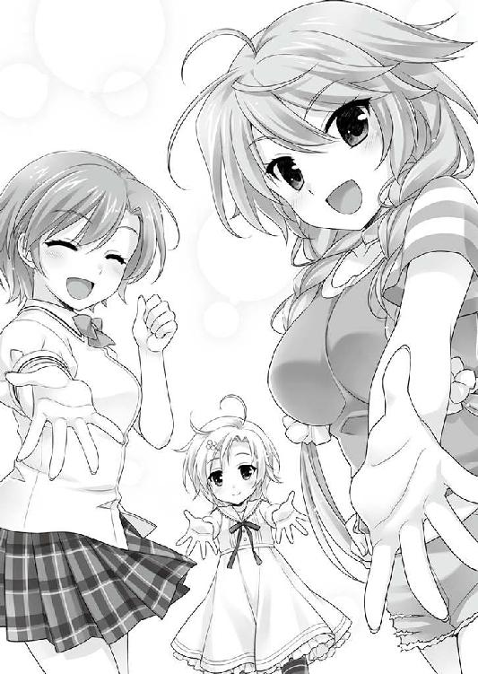
「ちょっと待て！ こんな他愛ないことで、今後の人生が決まっちゃうの!?」
真剣な悲鳴に応えてくれるものは──当然いなかった。
オチが付くのは、今ではない何時か。
千里一條の人生は、まだまだ先へ先へと続いていく。
────よく考えて決めるように。
【ＥＮＤ】
あ と が き
お久しぶりになります日野亘です。
前巻から随分とお待たせしてしまいましたが、『ＰＧ１４』二巻をお届けできることになりました。
時間が経ったせいか、一巻を手がけていた当時と今を比べると、自分の周りも色々と様変わりをしています。色々な出会いがあったり、別れがあったり、愛用のノートＰＣも代替わりしたりと。
人生に変化はつきもの。時に楽しく、時に厳しい変化こそ、人生の旨味なのでしょう。
というようなことを考えながら、この巻を書き上げました。
さて、二巻での物語は一旦終わりを迎えましたが、本編をお読みになった皆さんが、「おいおい」と思われたのであれば、ご明察。今回の二巻と次の三巻は、それぞれ一冊でもお楽しみいただけますが、一組の物語ともいえる造りとなっております。併せてお楽しみいただけましたら幸いです。
なので、次巻はそれほど間をおかずにお届けできるかと思います。この巻で登場したあの人やあの人も、引き続き登板の予定です。よろしければ、もうしばらくお待ち下さい。
それでは、今後ともよろしくお願いします。
最後に、恒例となりましたがお世話になった皆様への謝辞を。
作中の『本』の見せ方など、色々とご相談にも乗っていただいた編集の遠藤様。
今回も力の入った表紙と挿絵を描いてくださった、さえき北都様。
前回にも増して細部のチェックで多くのご迷惑を掛けました、リサイトの皆様。
日々の心の支えになってくださるＴ県民の皆様。
それから、この本を手にとってくださった、全ての皆様。
心から、感謝を捧げます。この本の完成は、皆様の力なしには有り得ませんでした。
ありがとうございました。
日野 亘
日野 亘
四国でタヌキと戯れながら執筆中。代表作は「るいは智を呼ぶ」「ハロー・レディ」「ＰＧ１４」他。
猫と潜水艦をこよなく愛する、なまもの。
ＰＧ１４ ２
電子版発行 ２０１５年７月５日
著 者 日野 亘
発行者 辻 信幸
発行所 株式会社一二三書房
〒１０２─００７２
東京都千代田区飯田橋２─14─２ 雄邦ビル
電話 ０３─３２６５─１８８１
イラスト さえき北都
©HIFUMI SHOBO
本書の無断複製（コピー）は、著作権上の例外を除き、禁じられています。
●本書は『ＰＧ１４ ２』（２０１５年５月20日 初版第１刷）に基づいて制作されました。